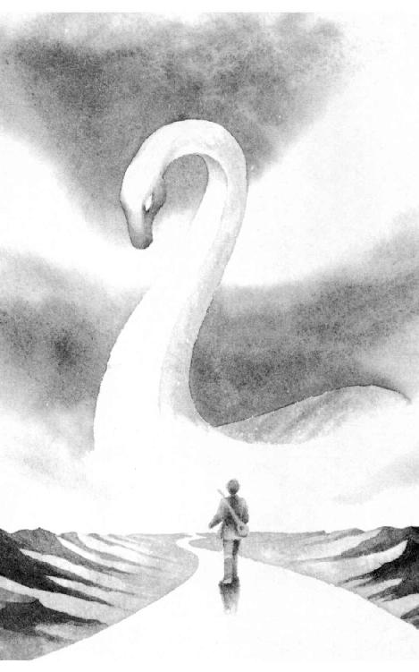

| 展覧会の絵 (幻想迷宮ゲームブック) | |
| 森山 安雄 | |
| GENSOUMEIKYUU SHOTEN (2016) | |
幻想迷宮ゲームブック
――この物語の「真の作者」たる
モデスト・П・ムソルグスキー及び
ヴィクトル・ハルトマンに捧ぐ。
本書は、2002年に創土社から出版されたものを、
電子書籍化にあたって加筆訂正を行ったものです。
展覧会の絵
森山安雄
プロローグ――展覧会場の入口
展覧会場にようこそ――。
よく来て下さいました。今日はここにある十枚の絵をゆっくりと見ていただきましょう。絵はどれも美しく芸術的で......その上、いささかスリルに満ちたものばかりです。あなたは必ずや満足されることでしょう。
でもその前に、ここで私はあなたにいくつかの用意をしてもらわねばなりません。これはあなたが絵の世界を旅するためにぜひとも必要なものです。それがあなたの払う入場料――。よろしいでしょうか？
ではまず、最初にひとつ質問をしましょう。あなたは「ゲームブック」というものをご存知でしょうか？ もし、ご存知なら「ゲームブックを知っている」と――、初めて聞く言葉か、または聞いたことはあっても、どういったものかは知らないなら「あまりよく知らない」とお答えください。ページをめくらずに、左の文字をタップすることで答えられます。
それは良かった！ ならば、あなたに言っておくことは一つだけ。このゲームブックは電子書籍なので、紙の本のようにぱらぱらめくることは出来ません。あなたが次のパラグラフに移動するときは最初に質問に答えていただいた要領で、飛び先の数字をタップして下さい。それでは旅の準備に取り掛かりましょう。
次へ進む。
ゲームブックとは小説とゲームが融合したものです。一見した形式は小説で、その内容は章番号のように一、二、三......と数字で区切られています。この番号で分けられたそれぞれの章を「パラグラフ」と呼びます。普通の小説なら、まず最初の一を読み、次は二、三と読み進めますよね？ ところが、ゲームブックは違います。
ゲームブックでは、読み始めは小説と同じように最初から読んで行くのですが、各パラグラフを読み終えたら、その中に記された選択肢である番号の中から、読者である「あなた」が選んだものが物語の続きになります。どの道を行くか、如何にして難問を解くかといったことを、あなたが選んでいくことで、物語の展開や結末が変わり、あたかもゲームのように楽しめるので、ゲームブックと呼ばれているのです。
それぞれのパラグラフに記されている選択肢は太字の漢数字になっています。これをタップすると、そのパラグラフにジャンプし、続きを読むことが出来ます。最初の質問に答えていただいた要領です。
お解りでしょうか。それでは旅の準備に取り掛かりましょう。
次へ進む。
まず第一にサイコロを一つ。これはあなたの「楽器」です。あなたはこの展覧会場の中では旅の楽師――吟遊詩人になっています。名前は......あなた自身にもわかりません。あなたは記憶を失っており、過去の出来事一切を忘れているのですから。十枚の絵を通り抜けて自分の名前を取り戻すこと――それがあなたの目的です。
次に筆記用具と紙。あなたは絵の世界を歩き回るうちにさまざまな人に出会い、何かを受け取ったりあるいは渡したりするでしょう。それらを記録するためのもので、普通のメモ用紙で十分です。この紙のことをこちらの世界ではアドベンチャーシートと呼びます。ただのメモ用紙では味気ないという人のために、こういうものも用意してございます。もちろん、記憶力に抜群の自信がある人ならメモを取らなくてもかまいません。
また、電子書籍の性質として、挿絵が入った場合など、字の大きさ等の兼ね合いで、パラグラフの文章が次ページに行ってしまうことがあります。そこで、各パラグラフの最後には、必ず「▲」のマークを付けました。もしあなたがこのマークを見ていなければ、パラグラフにはまだ続きがあるということです。うっかり、次ページにある文章を見落としたりしないように。
更に時々、何らかの理由で、ある数字のパラグラフに直接飛んだり、元のパラグラフに戻らなくてはならないことがあります。そんな時は数字をしっかり記憶してから、目次に用意した一覧表を利用して飛んで下さい。
用意はできましたか？
よろしい。それではまず、あなたは長い長い歩道を歩いていかねばなりません。一に進んで下さい。
一
プロムナード
「さあさあ、リンゴはいらんかね。きのうの昼に木からもいできたばっかりの品だ。甘いよ甘いよ！」
「いや、それよりもこっちの薫製ニシンを見ていっておくれ。取り立てのニシンを塩漬にして、すぐにいぶしたものだ。買って損はないよ」
「ほらほらそこのおじょうさん！ 都で仕入れてきた上等の絹織物は欲しくないかい......」
さきほどより物売りの声がやかましい。あなたは彼らの手を振りほどきながら、昼下がりの市場をかきわけていく。あなたの肩に掛かっているのは麻の袋に入った柄付きの琴だ。あなたもここらで、そろそろ自分の仕事にかからねばならない。
ここはリモージュの市場。あなたは昨晩この町に着いたばかりである。楽師としての旅を始めてからちょうど六ヵ月、ここはあなたが七番目に訪れた場所になる。
あなたは自分の名前を知らない。それどころか過去の記憶一切を失っている。ふと気がついたらこの国にいて、琴を片手に吟遊詩人をしていたのだ。このように町から町へ旅を続けているのも、もしかしたらこうしていれば、どこかで自分を知っている人に出会えるかも知れないと考えたからであった。
あなたは歌を聴いてくれそうな者はいないかと、辺りを見回した。どちらかというとあまり忙しそうでない、冷やかしで来ているような人がいいのだが......。でなければ、わざわざ金を払ってまで、楽師の歌を聴いてくれたりはしない。
と、そのとき――。
そばで店を広げている一人の大道商人があなたの注意を引き付けた。店とはいっても、それほどおおげさなものではない。単にむしろが敷いてあって、その上にいくらかのガラクタが並んでいるだけの話だ。あなたの目に留まったのはそんなガラクタではない。彼の後ろに立て掛けてある一枚の絵、そのような場所で売るにはいささか立派すぎる金色の額縁に入った大きな油絵が、あなたの注意を引いたのだ。
あなたは商人の店に近づくと、前に立ってその絵を見つめた。それには地の宝を守るといわれる伝説の侏儒――ノームのグロテスクな姿が描かれていた。作者のサインはなく、代わりに丸い屋根のついた寺院の門のマークがついている。
――この絵は......前にどこかで見たことがある。あれはいつのことだったのか、いったいどこでだったのだろうか。
あなたが必死で記憶の中を探っていると、目の前に人が来たのに気づいてか、商人が垢じみた真っ黒な顔を上げた。そしてどういうわけか、あなたの顔を見ると、
「あっ!!」
と小さな声で叫んだのである。
「おまえは......!?」
ほおひげに包まれた口がもぐもぐと動く。あなたは思わず聞き返す。
「私を知っているのですか！」
「ああ、いや――そうだ、たしかに間違いはない。わしはおまえを知っている。そうか、おまえはこんなところにいたんだな。見つけた、とうとう見つけたぞ！」
商人は立ち上がってあなたの肩に手を掛けた。彼の手はほこりと汗で真っ黒に汚れていたが、あなたは少しも気にならなかった。
少し落ち着くと、あなたは自分が一番たずねたいことを口に出した。
「教えて下さい。私はいったい誰なのですか。なんだってまたこんなところで、吟遊詩人などしているのでしょう」
「まあ待ってくれ。実は、今すぐそれを教えてやるわけにはいかないんだ。わしにできることは、ただ道を指し示すことだけ。あとはおまえが自分で答を探さねばならない。手を出してごらん」
商人はそう言うと、身にまとったぼろぼろの衣装のどこかから、小石ほどの大きさの黒いガーネットを取り出した。あなたはそれを受け取りながら、なんだか辺りが暗くなってきていることに気がついた。
「どうかな、それにも見覚えがあるだろう」
言われてあなたは、その宝石を手の中でひっくりかえす。それは傷一つない美しい石であったが、よく見ると表面にさっきの侏儒の絵と同じ、寺院の門のマークが彫られていた。
「それを持っていきなさい。ガーネットは一月の象徴だ。これからおまえは長い長い旅をしなくてはならない。その手初めに、この絵に書かれた侏儒に会いに行く必要がある。彼がおまえの案内人になってくれるだろう。さあ、行くんだ!!」
いつしか辺りは完全に闇に包まれていた。もう、リモージュの市場もそこに買い物に来ている人々も、みんないなくなっている。あなたには、あの侏儒の絵以外何も見えなくなっていた。
こうしてあなたは、十枚の展覧会の絵の世界に入って行くのである。四六四へ。
二
それでは和解の旋律、戦いの旋律、魔除けの旋律のすべてを、どれもみな一つずつ減らせ。その後で、東の神の名を唱えるなら一四六へ、西の神の名を唱えるなら三四三へ、南の神の名を唱えるなら六〇へ、北の神の名を唱えるなら二六六へ。ただしどれかの歌が足りなかったためにこれが不可能なら、あなたは弦の色の歌を一つ失った上で、この次の行動を決めなおさねばならない。四方の神は何も頼まれなくても、その名を思っただけで代償を求めてくるのだ。そのあとで、このまま何もせずに石を取るなら四三九へ、取らずにすませるなら二五六へ、弦の色の歌がなくなってしまったらただちに一三へ。
三
あなたは草原にやってきた。ここには一面の緑が広がっている。ところどころ茶色が露出しているのは、何かの巣の跡なのだろうか。ずっと右手には赤い昆虫が群れをなして飛んでおり、左手には黒い昆虫が集まっている。どちらもあなたの食べ物になりそうだ。
ここでもしも空腹なら（あるいは空腹でなくても）、昆虫の群れに向かって飛んでいってよい。赤い昆虫をつかまえるのなら四一四へ、黒い昆虫をつかまえるのなら五一一へ。でなければ一六六の山に向かうか、四三一の海に向かうかだ。
四
箱を開けると、中から銅でできた琴の弦が現れた。
「それは『戦いの弦』だ」
侏儒が言った。三七九へ。
五
このはしごは、だいぶ古くなっているようだが......。
あなたは少々疑いを持ちながらも、とにかくそれに足をかけた。とたんに回廊の欄干がくずれ、はしごが落ちてしまう。サイコロを振って偶数が出たら八一へ、奇数が出たら一八九へ。
七
あなたは牧童のほうに近づいていこうと、丘の上を走り出す。と、彼は急にこちらに気がついたかと思うやいなや、一目散に逃げはじめた。いったいどうしたというのだろう。
彼を追い掛けるのなら四八七へ、あきらめて小屋に向かうのなら二六二へ、今いる場所で、そのまま夜を明かそうというのなら三六五へ。ただし再びここにやってきても、そのときは牧童はいなくなっている。
八
では、魔除けの旋律を一つ減らせ。
あなたが琴をかなでると、その音は相手の声よりも強く辺りに響き渡った。同時に魔性の歌はぷつんと途切れるように消えてしまい、足の自由を取り戻したあなたはさっきの分かれ道まで戻ることができる。二二四へ。
一〇
あなたはその重そうな扉をたたいてみるが、案に相違して返事はなかった。人がいないのだろうか。あるいはそうなのかも知れないが......。
さらにノックをするなら四八九へ、やめて家の周りをまわってみるなら一三九へ、十字路に戻るのなら三六一へ。
一一
それでは所持金から金貨四枚を消すこと。
あなたを泊めてくれるといった村人は、無愛想な中年夫婦であった。彼らは一言も口を聞かずにあなたを自分の家に案内すると、粗末な食事を振る舞ってくれただけで、あとは小さなベッドのある部屋へと、あなたを押し込んでしまう。あなたはとりあえずの宿が決まったことにほっとするが、さて、そのあとで一日中村を歩きまわってみても、何もくわしいことはわからないで終わった。ただ言えるのは、ここの人々が何者かを非常に恐れていて、しかしその正体をひたかくしにしているらしいことだけだ。そうこうしているうちに、やがて夜がやってくる。暗くて何もかもが闇に紛れる、新月の夜が――。
こうして落ち着かないままにベッドに入ったあなたは、夜中に突然目を覚ました。
――何だ、あの声は!?
牧場のほうから、まるでこの世のものとは思えない、無気味な雄叫びが聞こえてきたのだ。それは文字通り、地獄の底から響いてくるような低く震える叫び声で、一度聞いてしまったら二度と眠りにつく気にはなれない、何とも奇怪な余韻を持っていた。
あなたは暗闇の中で額の汗をぬぐった。いったい今は何時なのだろう。この家の者は、あれを聞いても平気で眠っているのだろうか。いや、隣から話し声が聞こえる！
「まったく......いつ聞いてもいやな声だな」
「ええ本当に――。わたしゃあれを聞くたびに、三年は寿命が縮まっていくようですよ。あああ、わたしたちはいったいいつまで、あいつの言いなりになってなくちゃならないんでしょう。ここに、あの象牙の指輪さえあれば――」
「しっ！ そんなことを言っているのをあいつに聞かれると、大変なことになるぞ。とにかく誰かが指輪を持ってきてくれるまでは、おとなしくしていることだ」
「ほんにそうでした」
象牙の指輪――あなたはこの言葉に聞き覚えがあるだろうか。もしかしたら、ここに来るまでの旅の途中、どこかで手に入れているかも知れない。自分の持ち物の中を探ってみることだ。
このあと、そのまま無理にでも眠るつもりなら一一七へ、そっと部屋を抜け出して牧場に行ってみるなら二一五へ。
一二
それではあなたは、このリモージュのどこかで水を汲んでこなければならない。入れ物がないのなら、それを探すことも含めて――。もちろん彼女をこのまま放っておくなどというのは許されないことだ。
とりあえず、三七八の十字路に戻れ。それから町を歩き回って水を汲んでくること。ただしその前に「四五三」という番号をアドベンチャーシートに記録しておき、必要な物が手に入った時点で直ちにそこに飛んでよい。
一三
ビシッ、と音がして琴は粉々に砕け散った。あなたはもう絵の世界から抜け出ることはできない。生きているかぎり、永久にこの中をさまよい歩かねばならなくなってしまったのだ。
一四
あなたが机を開けると、そこには「ガラスの瓶」が一つ入っていた。なおも他の引き出しを調べてみると、こんどはロウソクが一本出てくる。持っていきたければそうしてもよい（アドベンチャーシートに「獣脂ロウソク」と記録せよ）。そのあとで部屋を出ることにする。四九八へ。ただし、二度とこの部屋の扉を開けてはならない。
一五
あなたの琴から和解の旋律が流れ出る。すると扉は、手も触れないのに音もなくすっと開いた。あなたは琴をかかえて中に入っていく。
そこは周りに赤い布を張り詰めた、窓のない小部屋であった。しかし、入り口から差し込む淡い光のために、中のようすはなんとか見てとれる。その部屋には一方の壁にかかった一枚の油絵以外に何もなかったが、それを見たあなたは思わず喉の奥に声をつまらせる。
そこに描かれているのはあの侏儒――地の精と二人なかよく並んで立っている、あなた自身の姿なのであった。あなたは一瞬、その絵にも「キエフの門」の印がないかと顔を近づけるが、それはどこにも見あたらない。代わりについているのは、作者自身によるペン書きのサイン――。あなたは注意深くその名前を読み上げる。
――ヴィ...ク...ト...ル......。ヴィクトル......？ そうだ、この名前は――。
懐かしい響き......。一瞬あなたは、それが自分自身の名前だったのだろうかと思う。しかしすぐに首を振ってその考えを打ち消した。いやいや、自分が絵など書いたりするはずはない。自分は音楽家なのだ。――だが......。
たしかに自分はこの名前を知っている。どこか遠いところで聞いたことがある。自分は昔、この名の人物のすぐそばにいたのだ。しかしいま彼は......。
知らぬ間に、あなたの頬を伝って涙が流れ落ちている。あなたはこの旅の終わりが、誰か大切な人との別れになることを予感した。
あなたは琴をかかえてこの部屋をあとにする。この扉を開けたのは正しかったのか、それとも間違いであったのか。
一二八に進み、二階に降りよ。ただしその前に、和解の旋律を一つ減らすのを忘れぬよう――。
一六
あなたはバサバサと音をたてて翼をはためかせる。しかし空腹のためか、その力は本来の半分も出なかった。そうこうするうちに後ろから大きな影が迫ってくる。鋭い痛みとともにあなたは意識を失った。そしてどこか暗くて狭い所で目を覚ます。九三へ。
一七
湖のほとりを歩いていったあなたは、さっきの広い草原に出た。ここには橋など見つからない。もしかしたら、こちら側からは渡れないのかも知れない。
代わりにあなたは、湖の傍らの草むらに、大きな白いライオンが寝そべっているのを見つける。彼はたくましく盛り上がった筋肉をピクリとも動かさず、ただただ静かに眠っていた。その姿は恐ろしいというよりも、むしろ美しく荘厳な物であった。
ライオンをそのままに、そっとこの場を離れるのなら三三四へ、ライオンが目を覚ます前に、戦いの旋律で不意打ちをくらわすのなら二六三へ、和解の旋律または（持ち物にある場合に限り）動物と話ができるようになる薬で彼と会話をしてみようというのなら七三へ。もちろんこの場合、魔除けの旋律は何の役にも立たない。
一九
あなたは入り口の扉をそっとノックする。同時に中から、低く沈んだ「男の」声が返ってきた。
「入ってこい。鍵は開いているぞ」
これは、どうもどこかで聞いたような声だ。そう思いながらも、あなたが扉に手をかけると――。
突如として上の文字盤から、ギギッと音が聞こえた。見ると今まで静止していた短針が、別の時刻へと移動したのだ。どうやら内部の機械がどこかで引っ掛かっていたのが、今の振動ではずれたものらしい。あなたはとりあえずその位置を見上げてから（サイコロを振れ。出た目の数が短針の指した時刻になる。この数字をアドベンチャーシートにメモしておくこと。または五三〇にある十二時を指した文字盤を印刷し、短針の位置を描き込んでもよい）、扉を開けて小屋の中に入っていった。そこにはほこりをかぶった椅子とテーブルが置いてあり、先程の声の主が待っていた。
「ホッホウ、やっぱりな。とうとうおまえも、ここまでやってきたか」
それはさっきの分かれ道で出会った、あの梟であった。三八三へ。
二〇
老婆は立て膝に頬杖を突いてあなたの顔を見つめた。そのようすを見たあなたは、「バーバ・ヤーガ」という魔女がもしも本当にいるとすれば――いやいや、もちろんいるのであるが――それはこの老婆に似ているのではないかと思う。やがて彼女はため息をついてこう切り出した。
「残念だけど、あたしがあんたに教えてあげられることは何もないんだ。あんたは多分、もう自分の名前を思い出しちまってるだろうし......あたしはあんたがいま向かっている歩道の場所すら知らない。できることといったら、歌を唄ってあげることくらいだ。それでもよければ聴いておくれ」
老女はそのままの姿で唄いはじめる。琴は使わずに無伴奏で――なにしろ彼女の琴は使い物にならないのだから......その歌は次のような歌詞でできていた。
キエフの大きな門をくぐって、
楽師はここを旅立つだろう。
十二の石が鍵穴に合い、
二つの針が重なったとき、
バーバ・ヤーガの扉が開く。
そして、十二点鐘が鳴り響き、
歩道が現れるのだ。
彼女はここで唐突に言葉を切ると、前の焚火に木の枝を突っ込んだ。そして、疲れたような口調でこう言ってくる。
「さあ、あたしの歌はこれでおしまい。今度はあんたが唄う番だよ」
そのとおりにするのなら三三五へ、ことわるのなら二三五へ。ただしもしも歌を唄うなら、あなたは自分の琴を弾かなくてはならなくなるだろう。
二一
近づくにしたがって、歌声はどんどん強くなっていく。それはどこか遠い国の言葉らしく、歌詞はまったく聞き取れなかったが、それでもあなたには、その中に何か物悲しい雰囲気が流れているのだけは読み取ることができた。
やがてあなたは、森の中の空き地にぽつんと焚火が燃えている所にたどり着いた。その火の前に座っているのは壊れた琴を抱えた一人の老婆、風貌を一目見れば明らかな「歌を失える楽師」である。若い女の声だと思ったのは、実はこの老女だったのだ。
「あなたは......？」
「おや、また一人やってきたね。でもこの前の吟遊詩人から数えて、いったい何年ぶりのことになるだろうか。ここまでたどり着いた楽師はほとんどいないんだよ。まあ、そばまで来て火にお当たり」
あなたは言われたとおりに、焚火のそばに腰を降ろす。すると彼女はあなたに向かって、赤白二種の液体が入った、二本のガラス瓶を差し出した。
「飲むかい。元気が出るよ」
あなたが匂いをかいでみると、どうやらその中身は、何かの木の実から作られた強い酒のようであった。
赤いほうを飲んでみるなら四八五へ、白いほうを飲んでみるなら七〇へ、彼女の申し出を断ってどちらも飲まないなら五二三へ、いっそ両方とも飲んでみるのなら四六九へ。
二三
あなたは琴を鳴らして和解の旋律を弾いた（一つ減らせ）。しかし中にいる人物はよほど猛り狂っているのか、何の応答もなかった。もしもあなたが、もう一回だけ和解の旋律を弾くならば、こんどは彼も扉を開けてくれるだろう（このときは、もう一つ減らせ。二九へ）。あるいはここでやめて十字路に向かうのなら、それでもよい（三六一へ）。ただし、最初に弾いた分はもちろん戻ってこない。
二五
あなたの琴から戦いの旋律が発せられる。とたんに土が崩れて、さっと外の光が入り込んできた。だが残念なことには、口が開いたのは洞窟の後方であった。あなたはしかたなくそちら側から外に出て、穴を選びなおすことにする。右の洞窟に入るのなら四四四へ、真ん中の洞窟に入るのなら四九〇へ。
二六
三枚目の絵――「チュイルリーの庭」
ここは公園だ。あの絵に書いてあったとおりの光景が広がっている。地面には芝生がはえ中央には噴水、そばに見えるレンガ色の建物は博物館か何かだろうか。
あなたはこれからどこに行こうかと思って辺りを見回した。道路に行けば人込みに入ることになるだろうし、公園を横切れば向こうで遊んでいる子供達にぶつかる。もちろん建物に行ってもいいわけだ。
さて、どちらに進むべきか。道路に行くなら二九〇へ、子供達のほうに行くなら三四九へ、建物のほうに行くなら一九九へ。
二七
「――！」
この湖に来たときとちょうど反対側のほとりにやってきたあなたは、ようやくそこに、島まで続く一本の橋を発見する。それは粗末な木の橋ではあったが、なんとか渡れそうである。あなたはそばに寄ってその状態を調べてみるが――。
どうも少し床が腐りかけているようだ。このまま渡っていった場合、この橋はあなたの体重をささえきれるだろうか。それは少々気になるのだが、他に方法がなければしかたがない。
この橋を渡って島に行くのなら五四へ、渡らずに右回りに進むのなら二九七へ、左回りに進むのなら一七へ。
二八
あなたがその場を離れようとすると、ガサッと音がしてライオンが目を覚ました。そして何と人間の言葉であなたに話し掛けてくる。
「おい！ 何か食べ物は持っていないか」
もしも持っていれば一九八へ、持っていないから和解の旋律を弾こうというのなら七三へ、戦いの旋律を弾こうというのなら二六三へ、どれもできないのなら一三へ。もちろん魔除けの旋律は役に立たない。
二九
あなたが琴を降ろすと、さきほどの男がびっくりした顔で家から出てきた。
「その琴は――!? まさか、真の楽師の......。いや、あなたは何か不思議な力をお持ちのようですね。汚いところではありますが、どうぞお入り下さい。わたくしの名は、シュミイレ――姓も何もないただのシュミイレと申します。昔はもっとちゃんとした暮らしもしていたのですが、兄とケンカしてからというものの、落ちぶれるばかりでして」
彼はあなたを中に案内すると、テーブルのそばの椅子を引き寄せて、さっとその上のほこりを払った。
「さあどうぞ。何のおもてなしもできませんけど、とにかくお座り下さい。このわたくしめに、いったいどのようなご用があるのでしょうか」
あなたは言われたとおりに腰を降ろす。そしてバーバ・ヤーガの石と十枚の絵についてたずねてみた。――私はそれをさがして旅をしているのだ。どこかで見かけたことはないだろうか。
すると彼は首を振ってこう答えた。
「さあ。ごらんのとおりの貧乏暮らしで、わたくしの所にそんなものなどは......。いや、ちょっと待って下さい。あるいは兄のところにならあるかも知れませんよ。そうだ。あの倉の中ならひょっとすると――」
シュミイレのいう「兄」とは、この町のもう一方のはずれに住む、サミュエル・ゴールデンベルグという名の男のことだそうである。彼とシュミイレは一つ違いの兄弟だが、父の遺産相続のことで仲たがいをして以来、一度も会っていない。しかしサミュエルは、何やらたくさんの宝物の入った、大きな倉を持っているのだそうだ。
「でもね。あれは開けることができないんですよ。鍵はわたくしが持っているのですから。父がなくなってケンカ別れしたとき、兄は家と倉のほうを、わたくしは鍵を取り分としました。それで兄はとりあえず豪勢な暮らしができるのですが、わたくしのほうはね。でもまあ、いいんですよ。こうしている限り、兄も倉の中身を手に入れることは、絶対にできないんだから」
シュミイレは寂しそうに笑った。どうやらそのようすでは、彼としてもたった一人の兄弟と仲たがいしたことについて、いくぶんかの後悔をしているようであった。
「さてそれにしても、わたくしも少し疲れましたな。いつまでもこんな莫迦な争いを続けているなんてのはね。これというのも、あんな鍵があるからいけないんでしょう。ふうむ、だとすると――」
彼はキッとあなたを見つめた。
「そうだ......。あなた、わたくしの持っている鍵を買っていただけませんか。ここにあっても役に立たない物だし、あなたならそれを兄のところに持っていって、お捜しの物を見つけられるでしょう。それにひょっとしたら、そのことによって兄もわたくしを許してくれるかも知れない。前からそうは思っていたんですが、自分で返すのはやっぱりいやだったんです。どうですか。もしもお金がなければ、その琴を弾いてくれるだけでもかまいませんけど」
シュミイレは弱々しい笑顔であなたの顔を見つめた。
彼のいうとおりに鍵を買い取るのなら四八六へ、琴を弾いてやるのなら一二四へ、どちらもしないのなら、家を出て町の十字路に向かうことにして三六一へ。
三〇
しかたなく、あなたは手探りで部屋の中に入っていった。ここはどうやら応接間のようなところらしい。手をのばしたとたん、大きなテーブルらしきものに突き当たった。なおも辺りをさぐってみると、複雑な装飾をほどこした椅子がいくつも並んでいる。まるで今すぐにでもパーティーが開けそうだ。
と、突然バシッと音がして、あなたの手から琴がはじきとばされた。部屋が急に明るくなる。二五九へ。
三一
「あっ」
女が軽い悲鳴を上げた。彼女はあなたに正面からぶつかってしまい、持っていたショルダー・バッグの中身をその場にぶちまけてしまったのだ。あなたはあわててそれらを拾おうとするが、なぜか彼女はさっさと逃げてしまう。バッグの中身を見て、あなたは少々びっくりした。
――これは？
どういうわけか、その中には色取りどりの財布や小銭入れが入っているではないか。数は全部で七、八個もあり、どれもみな重そうにふくらんでいる。どうやらあの女はスリか何かだったらしい。
このあとあなたは、これらの財布を調べてみるだろうか（五〇八へ）、それともそのまま放っておいて、さっさと他の所に行ってしまうだろうか（三一五へ）。
三二
さて、そうこうしているうちに、町のほうから痩せた貧相な男が歩いてくるのが、あなたの目に入った。どうやら彼がこの家の主人らしい。しかし、なんともはや情けない顔をした男である。さほど年寄りとも思えないのに、もうかなり薄くなった髪の毛は真っ白で、ほとんど手入れされたようすがない。おまけに髭がぼうぼう生えており、着ているものはぼろぼろだ。これではこの男から何かが得られるのは望み薄かも知れない。
と、彼はあなたの前をずんずん通り過ぎてしまうと、バタンという音とともに家に入って扉を閉めてしまった。あなたはとりあえず外から声をかけるが、答えてはくれない。どうにも無愛想な男である。
琴を使ってなんとかするなら三九五へ、十字路に戻るなら三六一へ。
三三
騒ぎが少し落ち着くと、さっきの年配の男が進み出て深々と頭を下げてきた。
「まったく、なんとお礼を申してよいのやら。これでようやく、私たちも解放されることができました。すべてその魔法の琴のおかげです」
彼はあなたの手をしっかりと握りしめた。結局この戦いは何の得にもならなかったが、まったくの無駄ではなかったわけである。
「そう、それでいい。たまには他人のために琴を弾くことも必要だ」
今さっき声をかけてきた者が、後ろから言った。どうも聞き覚えがある声だ。いったい誰なのだろうと思い、あなたはそちらを振り向いてみる。そして、あっと声を上げた。
声の主は、あの洞窟の侏儒であった。
二五二へ。
三四
では和解の旋律を一つ減らせ。
琴からは美しい音楽が流れ出るが、どういうわけか敵はうなり声をあげてあなたに迫ってきた。砂の精には心がないので和解の旋律は効かないのだ！ このことを忘れるな。
歌を決めなおせ。戦いの旋律なら四六七へ、魔除けの旋律なら二三二へ。
三五
「うわっ!!」
やはりこれを跳び越そうというのは無謀だったようだ。あなたは足を踏み外して谷底に落ちてしまう。同時にどこかで、琴が岩にぶつかる音が聞こえた。一三へ。
三六
真の楽師の琴は強烈な光をはなって鳴り響いた。とたんにゴーレムの体がぐらりとよろめく。効力はたしかにあるのだ！ しかし相手は、これだけの年月を生き延びてきた魔法である。一回ではとどめを刺せない。
サイコロを、出た目の合計が８以上になるまで振り続けよ。そのときかかった回数と同じ数だけ魔除けの旋律を減らせ。もしも成功すれば、ゴーレムはその動きを止めるだろう。そのあとで、すでに石を取っていれば一二三へ、手に取る前にゴーレムが動き出したのなら四九へ、先に魔除けの旋律がなくなってしまったら一三へ。
三七
女はあなたの旅の目的を聞くと、次のように教えてくれた。
「わたしにはバーバ・ヤーガの宝石がどうなったのかわかりません。女王もそうですが、砂漠に連れ去られたもの以外は、砂の精の魔法でそれぞれの部屋に封じ込められているのです。でも一つだけ――。三階のどちらかの部屋に、水の入った樽があります。もしも瓶か何かがあれば、それに水を汲んで持っていったほうがいいですよ。砂の精に会ったときには、強力な武器になりますから」
女はそれ以上なにもいうことはなさそうであった。あなたは礼を言って部屋を出る。一二一へ。
三八
「おまえは何が望みなんだ」
ライオンはそう言いながら、あなたのそばに体を休めた。その声音に、あなたはあの洞窟の侏儒を思い出す。
「もしもわたしにできることなら、なんなりと言ってくれてかまわないぞ」
ライオンは大儀そうにあくびをしながらも、しかしとりあえずは真面目にあなたの話を聞こうとしていた。そこであなたは、今までの自分の旅の経緯、それが始まった理由、バーバ・ヤーガと「キエフの門」の印について、最後の目的地のことなどを語って聞かせる。
「なるほど。それではおまえは、あそこに見えるバーバ・ヤーガの小屋に行きたいのだな」
「そうだ」
「ならば簡単な方法が一つある。あの空の鳥どもに頼むのだ。おまえの琴を使って――」
ライオンは自分の真上を向いて、先程の白い鳥たちのほうを指し示した。
「そうすれば、あいつらがおまえを島まで連れて行ってくれるだろうから」
和解の旋律が残っていれば、今それをここで弾きたまえ。ライオンの言っていることが嘘ではないとわかるだろう（一九〇へ）。残っていないのなら別の方法を考えざるを得ない。ここを離れて湖のほとりを右か（二七へ）、左に（二九七へ）向かえ。
三九
それではなんでもいいから、歌を一つ減らせ。
あなたの演奏を聴き終わった狼男は、パチパチと手をたたきながら、快く舟に乗せてくれる。こうしてあなたは、無事に向こう岸へと渡ることができた。狼男はあなたを降ろすと、もといた側に戻っていく。四九六へ。
四〇
水がどっと押し寄せてきて一瞬ひやりとさせられたが、あなたは無事に河を渡り切ることができた。ほっとしたあなたは洞窟の中を西に向かう。道はいつしか北に曲がった。四三〇へ。
四一
彼はあなたを中に招き入れると、自分で台所に行ってコーヒーとケーキを出してくれた。そして丁寧な口調で語りはじめる。
「はじめまして。私の名はサミュエル――サミュエル・ゴールデンベルグといいます。町の者たちは『旦那』などと呼んでいますが、なあに、父親の遺産でこの家をもらっただけの話でして。それであなたは？ 私のところに何の用がおありなのかな」
サミュエル・ゴールデンベルグはやけに親切な男のようであった。そこであなたは、自分は旅の吟遊詩人であり、今はバーバ・ヤーガの石と「キエフの門」の印のある十枚の絵を探して、旅を続けているところなのだと答える。すると意外なことには、サミュエルはそれらの宝石や油絵について、ちゃんと知っているといってきた。
「はい、話には聞いていますよ。普通の人にとってはただの宝石だが、吟遊詩人にとっては何よりも大切なものだとか。ふうむ、それはことによると、このうちの庭にある倉の中に入っているかも知れませんね。いや、少なくとも絵か宝石のうちのどちらかくらいは......。なにしろあの中には、先祖が何代にも渡ってかき集めた財宝が、ぎっしり詰まっているのですから。ただ......一つだけ困ったことには、私にはあれを開けることができないんですよ」
サミュエルの話ではこの家の庭の倉には大きな鉄の扉がついているのだが、残念なことに彼の弟のシュミイレが持っている鍵がないことには、その扉を開くことはできないのだそうである。
「シュミイレとは、父が亡くなったときの遺産相続でケンカをしましてね。私はこの家を、弟はあの鍵を取ることでとりあえずの決着はついたのですが、そのため、お互いの持ち物が役に立たなくなってしまったのです。今では私もあいつを憎んではいないし、できれば仲直りをしたいと思っているんですが、あいつは鍵をしっかりと持ったまま、私の所には寄り付きもしてくれないんですよ」
さて、あなたは前にシュミイレに会ったことがあるだろうか。すでに彼に会ったのなら五〇へ、まだ会ってないなら五〇三へ。
四二
あなたが注意深く闇の中を歩いて行くと、突如、ザッ！ と音がして壁から無数の白い手が飛び出してきた。
それはあなたの持ち物に触手をのばすと、あっという間に何かを奪って消えてしまう。あなたはあわててポケットを調べてみるが――。
もしも「魔法の棒」か「ガラスの剣」を持っていたら、それをアドベンチャーシートから消去せよ（どちらもないのなら、何もしなくてよい）。以後この武器は使えなくなってしまった。あなたはこの墓地の危険性を改めて認識させられる。
このあと、東に行くなら四五四へ、西に行くなら四六一へ。
四四
「そうですか。それではしかたありません。またこの次ということにいたしましょう。もしも兄のサミュエルに会ったら伝えて下さい。わたくしも今となっては、決して兄を憎んではいないのだということを......。我々は、この世にたった二人の兄弟なのですから」
シュミイレはため息をついてこう言った。あなたは彼に挨拶をして家を出ると、そのまま十字路に向かう。三六一へ。
四五
戦いの歌を一つ減らせ。琴は鋭い音をたてて旋律をかなでる。とたんに目の前の壁がガラガラと崩れ落ち、外に続く穴が開いた。あなたが部屋を出ると、そこは塔の五階の踊り場だ。下に重なるそれぞれの階には、白黒二つの扉が真ん中の回廊をはさんで互いに向かい合っており、全部で十の部屋を形成している。それぞれの階を行き来するには、細いはしごを使うしかない。あなたが出てきたのは、そのうち五階の白い扉の部屋らしい。そのようすをながめていると、後ろから風の精が声をかけた。
「砂の王はあれらの部屋のどれかにいます。他の扉の後ろにはあれの部下がいて何か良からぬことをしていますが、ごくわずか、わたしの部下のいる部屋もあるでしょう。もしもそういった扉を開ければ、みんなはあなたの手助けをしてくれるはずです。ではくれぐれもお気をつけて。ついて参りたいのはやまやまですが、わたしはこの部屋から動くことができないのです」
こう言って風の精が姿を消してしまうと、あなたは琴を肩にかけて歩き出した。この階の黒い扉を開けるなら一四〇へ、すぐにはしごで下に降りるなら五へ。
四六
あなたの弾いた魔除けの旋律は効かなかった。三一〇に戻って、歌を決めなおせ。
四九
あなたは絶望的な声を上げる。ゴーレムは手を握ったまま止まってしまったのだ。これではメノウを取ることはできない。この戦いはまったくの無駄であった。
あなたはがっかりして二五六に進む。もしかしたらもう一度この泥人形のそばにくれば、今度はメノウが手に入るかも知れない。もっとも、あなたにその気があればの話だが――。
五一
箱を開けると、中から金でできた琴の弦が現れた。
「それは『和解の弦』だ」
侏儒が言った。三七九へ。
五三
あなたの弾いた和解の旋律は効かなかった。三一〇に戻って、歌を決めなおせ。
五四
あなたは床を踏み抜かないように気をつけながら、そろそろと足を前に出した。ところがいざ渡りはじめてみると、橋は意外に強固であることがわかる。あなたは安心してバーバ・ヤーガの小屋に向かうのだが――。
真ん中まで来た辺りで、突如として橋が消えてしまった。これは幻だったのだ。あなたはあっと思う間もなく、水の中に突き落とされてしまう。
サイコロを振って、出た目の数だけ手持ちの歌を減らせ（その種類と組み合わせは、あなたが決めてかまわない）。それだけの魔法の歌と引き換えに、あなたは島まで泳ぎ切ることができる。さあ、いよいよあなたはバーバ・ヤーガの小屋までたどり着いたのだ。四九一へ。ただしサイコロの目のほうが手持ちの歌より多かったら、あなたの旅はここで終わりになる。一三へ進め。
五五
「そのとおりだ。よくわかったな」
蛇は感心したようにつぶやくと、のそのそと巨大な体をずらしはじめた。
「さあ行ってもいいぞ。これがおまえの歩道だ」
あとには今の虹色の道が続いている。
あなたは蛇に礼をいうと、その美しい道を歩き始めた。それはあくまでまっすぐに、この世の果てまでも続くかと思われた。
が、やがて虹の七色が途切れると、行く手は二つの方向に分かれる。見るとそばには道しるべがあり、一つには「生の道」、一つには「死の道」と書いてあった。あなたはどちらを選ぶだろうか。
生の道を進むなら二五八へ、死の道を進むなら三四〇へ。
五六
あなたは一日中村のなかを歩き回るが、何もくわしいことはわからない。それでもどうにか突き止められたのは、どうも村人たちが何者かを非常に恐れていて、しかしその相手の正体をひたかくしにしているらしいことだけだ。あなたはなんとかしてその謎を解こうとするが、調査はすべて失敗に終わった。そうこうしているうちに、やがて夜がきてしまう。暗くて何もかもが闇に紛れる、新月の夜が――。
あなたは丘の上に立って牧場を見下ろした。いったいここに、何が起きるというのだろうか。村人たちがあれだけ恐れている者の正体とは――。
と、そのとき、さっと風が吹いてきて、あなたの耳にこうささやいた。
「もしも危ないことがあったなら、四七一人の部下を持つ雷神の助けを借りなさい」
それは、あの風の女王の声であった。やはりここには、何か重大な危険が迫っているようだ。あなたは琴をしっかりとかかえて、ゆっくりと牧場に下りていく。二一五へ。
五七
あなたの指が弦を弾く。同時に鋭い音が琴から発せられた。と、城が根元からグラグラと揺れはじめたではないか。
「やめてください!! あなたはわたしの城を壊すつもりなのですか！」
光が叫んだ。見るとそれは、背の高い水色の女に姿を変えていた。あなたはあわてて弦の振動をとめる。
戦いの旋律を一つ減らしてから、四二五へ。
五九
あなたは彼女の琴をかまえて曲を弾きはじめる（これは自分の楽器を使ってのことではないので、歌を減らす必要はない）。なぜか口からは自然に言葉があふれ、それは聞いたこともないような不思議な歌詞になった。あなたは彼女のためにそれを歌いながらも、もしかしたらこの中には何か重要な意味があるのではないかと考える。
五二五に進め。あなたの歌った詩がそこに書いてあるはずだ。ただしその前にこの項目の番号を記録しておき、歌詞を見終わったらすぐに戻ってくること。
◆ ◆ ◆
よろしい。あなたが琴をおくと、彼女は奇妙な顔をしてたずねてきた。
「今のは何のことなのですか」
あなたは肩をすくめてそれに答える。
「さあ、私にもわかりません。思いつくままに言葉を並べただけですから。むしろこれは私が歌ったというよりも、琴が歌わせたのではないでしょうか」
「そうですか。でも、なんだか気になりますわね。わたしが聞いた話では、輪廻の蛇は五十年に一回の割合で土に帰り、そのすぐあとに蘇ってくる不思議な爬虫類だそうです。今いるのはその中の十番目――。これからあなたが会わねばならない相手です」
「なるほど。最初の蛇が一枚の白いうろこ、次が三枚、その次が六枚、ということは――」
「ええ、今は何枚になっているのかすぐにわかるはずですわね」
さてあなたには、輪廻の蛇が持つ白いうろこの数がわかっただろうか。もしもわかったのなら、その数をアドベンチャーシートに記録しておくこと。
「いずれにせよ......どうもありがとうございました。これでわたしも自分の道をまっすぐに歩いていくことができます。あなたの琴の音色のおかげで......。もう迷うことはありません」
女はそう言って、あなたに深々と頭を下げると、そのまま琴をかかえて歩きはじめた。その後ろ姿には迷いは一つもなく、もはやあなたは彼女に声をかけることができなくなっている。やがてその姿は廃墟の彼方に消えてしまい、あなたには自分自身の道だけが残されていた。三七八の十字路に進め。
六〇
あなたは手をのばして石を取ろうとする。ところがそれよりも一瞬早く、ゴーレムが動きはじめた。やはりこいつに掛けられた魔法はまだ生きていたのだ。あなたは、
「南の神の名のもとに命じる。止まれ！」
と叫んだのだが――。
ゴーレムは止まらずにあなたに手をのばしてきた。この神の名はあやまちであった。四〇〇へ。
六一
あなたはなおも何かを言おうとするが、男は取り合ってくれない。
「さあ、帰った帰った。ここに入りたければ、どこかで金を稼いでくるんだ」
しかたがない。子供達のほうに行くか（三四九へ）、道路に行くか（二九〇へ）だ。
六二
あなたは敵に向かって金貨を投げつける。しかしその攻撃は、相手の鉄のような皮膚に当たって、苦もなくはねかえされてしまった。
持ち物から金貨を一枚減らしたあとで、武器を選びなおせ。「ガラスの剣」なら二一九へ、「魔法の棒」なら四〇二へ、「象牙の指輪」なら一六五へ、真の楽師の琴なら一九二へ。
六三
風の精がくれた魔法の剣は、一直線に赤い牛の化け物に突き刺さった。化け物は何ともいえない恐ろしい声を上げて、どっとその場に倒れてしまう。そして黒い牛と一緒にふっと消えてしまった。単なる幻だったのだ。あとには白いミノタウロスだけが残った。
アドベンチャーシートから「ガラスの剣」を消して、三九三へ進め。そこで武器を決めなおすのだ。
六四
左の道をまっすぐに行くと、やがて霧が少しずつ晴れてきた。あなたは自分がすでに森の中を抜け出ていることに気づくが、しばらく進むと大きな河が目の前に横たわっているのにぶつかり、そこで足が止まってしまう。流れは速くてとても渡れそうにない。
――困ったな。
そう思ったあなたは、いま来た道を引き返そうかとも思うが――。
よく見ると、少し離れた茂みの陰にボートが一槽つないであるではないか。その中ではがっしりとした男が昼寝をしており、そばには木の立て札がたっている。
「渡し舟・金貨二枚」
「なるほど」
事情を知ったあなたはそっと男の顔を盗み見る。同時に心臓がドキンと強く脈打った。
それは真っ黒な剛毛を一面に生やした、狼男の顔であった。
もしも剣かナイフのような物を持っていれば、いきなり彼に切りつけてもよい。そうするのなら二五四へ。いやいや人を見掛けで判断してはいけない、彼を起こして金を払おうというのなら四四六へ。彼を起こすのはかまわないが、金貨以外の物で許してもらおうというのなら一一一へ。いっそのこと、自分で河に入って渡ろうというのなら二四八へ。何もせずに、さっきの分かれ道に戻ろうというのなら二二四へ。
六五
あなたは何もめぼしいものを見つけることができなかった。扉を閉めてフロアに戻れ。二五六へ。
六六
あなたはその荷車に腰を降ろすが――。
同時にさっと風が吹いてきて、琴の弦を震わせた。とたんに戦いの旋律が鳴り響き（アドベンチャーシートから一つ減らせ。もともとなければ一三へ）、荷車の残骸はあなたを乗せたまま崩れてしまう。痛む腰をさすりながら立ち上がったあなたは、琴に向かってつぶやいた。
「わかったよ。先に進めというんだろう」
あなたは町へと入って行く。七二へ。
六七
あなたはゆっくりと光に向かって舞い降りる。見失う心配はまったくなかった。その不思議な物体は、沈みかけた夕日を受けて、さきほどよりもいっそう強い光をはなっていたのだから。
風に乗って近寄ってみると、それは丸くて白い物が砂の間から顔を出しているのだった。あなたは初めて見るその輝きに、一瞬だけ目を見張る。それは、大きな真珠の塊だったのである。
もしも掘り出してみることができれば、あなたはその表面に何か不思議な模様が彫られていることに気づいただろう。「キエフの門」と呼ばれる寺院のアーチの模様が――。
しかし今のあなたには、これは何の価値もないただのきれいな石ころだ。記憶を取り戻してからでなければ拾うことすらできない。ただし、これを見たという事実だけは覚えておきたまえ。そうすれば、あとで必ず取りにこられるだろうから。
このあと東に飛ぶのなら一九五へ、西に飛ぶのなら一七三へ。
七〇
酒はすがすがしい味がした。あなたは喉がすっきりとして、体中に力が涌いてくるのを感じる。同時に琴が一瞬だけ淡い光をはなった。
弦の色の歌を一つ増やしてよい（アドベンチャーシートに記録せよ）。そのあとで、赤いほうの酒も飲んでみるなら四六九へ、飲まずに老婆と話をするなら二〇へ、さっきの分かれ道に戻るのなら二二四へ。
七三
それではアドベンチャーシートから和解の旋律一つ、または「白い丸薬」を消去せよ。
あなたが必要なことを済ませると、ライオンはそっと身を起こしてこちらに近寄ってきた。そしてあなたにやさしく話し掛けてくる。三八へ。
七四
あなたはしばらくの間、独りで草原を飛び回った。ここは日差しも暖かく、住むにはつごうのよい所かも知れない。問題は巣をかけるための木がないことだが、それなら森のはじっこに移ればよいのだし――。
そのときあなたは、草原の真ん中で誰か別の鳥がさえずるのを聞いた。見るとそこには、美しい雌の駒鳥が飛んでいる。どうやら彼女もまた、自分の巣を作る場所を探しているようだ。
あなたは彼女に話し掛けようとするだろうか。もしもそうするなら一三三へ。やめて山に行くのなら一六六へ、海に行くのなら四三一へ。
七七
時計の文字盤をよく見ると、それぞれの数字のすぐ内側には、ぽつぽつと小さな穴が並んでいるようだった。あなたは大変な苦労の末にそこまでよじ登ると、「バーバ・ヤーガの書」に書いてあったとおり、これらの穴に手持ちの石をはめ込んでいくが――。
まず、五〇九を見よ。ここにそれぞれの石の支配月がすべて示してある。先にこれを調べてから、一月の石は一時の位置、二月の石は二時の位置、というように、手持ちの石をすべて記録していく。五三〇にある文字盤を印刷して描き込んでもよい。そのあとで――ここが一番かんじんなところなのだが――短針の位置より大きな数字のうち、宝石がはまっていない場所の数字をすべて合計せよ。これがあなたの「負債点」になる（ただし、もしもまだあなたが時計が動くのを見ていないならば、短針は十二時を指しているはずだから、空いている位置の番号をすべて合計せねばならない）。
次に手持ちの歌の数をこれもすべて合計し、その回数だけサイコロを振れ。出た目の数の総和が先程の「負債点」以上なら一四二へ、「負債点」より小さければ一三へ。
七八
水はとても冷たかった。おかげで喉の渇きはとまったが、代わりに腹が痛みだす。やはり生水を飲んだのがまずかったらしい。
もしも毒消しの薬か何かを持っているのなら、ここで一つ使え（持ち物から消去せよ）。ないのなら魔除けの旋律一回分だ。琴を弾いたとたんに、今の痛みも去っていく（アドベンチャーシートから一つ減らせ）。そのあとで、家の扉を開けるなら二九一へ、そのまま誰かを待つなら三二へ、腹痛の処置がうまくできなかったら一三へ。ただし入れ物に汲んだ分の水は、すでに暖まってしまっているので、この先飲んでも差し支えはない。
七九
四枚目の絵――「ビドロ――牛の群れ」
歩道を抜けたあなたは、今度は夕暮れの牧場に姿を現した。ここにはあのリモージュの市場のようなせわしなさはどこにもない。代わりにあるのは、のどかさと静けさだ。あなたの周りには木の柵が張り巡らされ、牛飼い達が家畜を追っている。遠くには青々とした山脈が見え、空気はガラスのように澄んでいた。しかし、風はさほど冷たくはなく、このままここで野宿をしても大丈夫だろう。
それにしても、こんなところにもバーバ・ヤーガの石があるのだろうか。そう思いながらも、あなたは牧場の中を歩きはじめる。と、丘の向こうに木でできた小屋があり、そこから百メートルほど離れた所で、牧童らしき若い男が藁を積み上げているのが見えた。いつの間にか太陽は西に傾き、山の上は真っ赤に染まっている。もうすぐ夜になるのだろう。
ここであなたは、次にどのようにするだろうか。牧童に話し掛けるのなら七へ、小屋のほうに行くのなら二六二へ、それらはすべて明日にして、ここはとりあえず一人で夜を明かそうというのなら三六五へ。
八一
あっ、と声を上げてあなたは体の平衡をくずすが、なんとかそばの柱につかまることができた。もうこのはしごは使えない。何か方法をこうじるとしても、そばに役に立ちそうな物は見当たらなかった。それとも、あの黒い扉の部屋の中なら何かあるだろうか。
あなたはあきらめてそちらに向かう。一四〇へ。
八二
あなたは町にやってきた。ここはその中心の十字路である。周りではにぎやかな市場が開かれており、この旅の出発点となったリモージュの広場を思い出させる。
ところがその時あなたは、突如として猛烈な空腹に襲われた。何とか足を踏ん張って倒れるのはこらえたが、すぐにでも食事をしないとどうにかなってしまいそうだ。
もしも何か食べ物を持っているなら、ここでそれを腹におさめねばならない（アドベンチャーシートから消すこと）。そのあとでならどこか他の場所に行ってもいいし（三六一へ）、市場を見学してもいい（二七七へ）。しかしながら手持ちに食べ物がないのなら、ここで何とかする必要がある。一二二へ。
八三
もしかしたらこの中には、あのバーバ・ヤーガの石が――？
あなたはそんなことを考えながら、勢いよく箱の蓋を取りのけた。とたんに下から、さっと無気味な視線が見上げてくる。真っ黒な衣装に真っ白な牙――吸血鬼だ!! あなたはあわてて箱から離れた。
――なぜこんなものが......!?
それはじりじりと後ろに下がるあなたを追って、ごそりと箱から這い出してきた。そして真っ赤に血走った目で、あなたをじっとにらみつけてくる。いくぶん細められたまぶたから漏れる光は、やはり圧倒的だ。おそらくこいつに見つめられたら、長い間の抵抗はとても不可能だろう。いや、現に今こうしている間にも、少しずつ体の精を吸い取られているようではないか。すぐになんとかしくては――。
手持ちの品の中に十字架があれば三四二へ、なければ一一五へ。
八四
これは砂の軍団の攻撃だ!!
そう思う間もなくあなたの手の中の琴が光り、戦いの旋律が鳴った（一つ減らせ。ただし最初からすでに残っていなければ、そのまま一三に行くこと）。砂はざっと吹き飛ばされてしまう。
ほっとしたあなたは、部屋の中を調べてもいいし（四二〇へ）、踊り場に戻ってもいい（三二三へ）。
八五
プロムナード
歩道を前に進みながら、あなたはこの世界の仕組みに気づきはじめる。侏儒はあなたの道が十枚の絵でできていると言った。だとすればどのような場所に行っても、この「キエフの門」のマークがついた油絵さえ見つければ、そこを抜け出ることができるのだ。
あなたは顔をまっすぐに上げて前方を見すえた。しかしこの道は戻ることができない。バーバ・ヤーガの石を確実に見つけていかないと、最後の最後で困ることになるだろう。そのことを忘れないようにしなければ――。
いつしか歩道は明るい日差しの中で途切れてしまう。そこはあなたの次なる目的地であった。二六へ。
八六
この相手に和解の旋律は効かなかった。一九二へ戻れ。そこで歌を決めなおすこと。
八七
人間相手に魔除けの旋律が効くはずはない。一つ減らしてから二四に戻れ。
八八
あなたは正直に真実を告げた。
「いえ、それが――ここに入ってくるときに落としてしまったのです」
「なに、ないのか!?」
中から残念そうな声が返ってくる。扉の向こうの人物はしばらく黙っていたが、やがて、さもしかたがないというようにこう言った。
「そうか。それならばこうしなさい。ここから東にまっすぐ行くと、地底の湖にぶつかる。そこに舟がつないであるから、それに乗って南の左にある岩場で降りるんだ。するとそのそばに紫水晶の広場がある。そこで『キエフの門』の印の入った水晶を拾って戻ってきなさい。ここに来る途中でおまえは女に会ったはずだが、こんどは水晶を持っているから琴を渡してくれるだろう」
声はそれきり黙ってしまった。しかたなく、あなたはさきの三叉路に戻ることにする。四三〇へ。
八九
「そうだ」
あなたが答えると、梟は一声二声、「ホッホウ」と鳴いてからこう言った。
「そうかそうか。それならばいいことを教えてやろう。おまえはこの先、目の前の分かれ道のどちらかを進むのだろうが、そのとき選び方によっては霧の中で不思議な歌を聞くことがある。それは魔性のものがあやつっている調べだが、迷うことはない。まっすぐ歌に向かって突き進んでいくことだ。必ずやそうして良かったと思うことがあるだろうから」
梟はあなたのほうを見て、一瞬両目を閉じた。そしてもう一度だけ「ホウッ」と声を上げると、バタバタと羽根を広げて飛んでいってしまう。あなたはその後を見送ってから、再び分かれ道に目を移した。二二四へ。
九〇
「あの、もしもし――」
あなたはその女に、できるかぎりそっと声をかけたつもりなのだが――。
彼女は暗闇から人影が立ち上がったのを見ると、「きゃっ」と一声叫んで逃げてしまった。あなたはあとを追い掛けようとするが、琴を持ったままでは走りづらい。彼女はそのまま丘の向こうへと行ってしまう。
これは失敗だった。やはり驚かせてしまったようである。前のほうからまわっていくべきだったかも知れない。そうすれば、今より少しはましな結果が得られたことだろう。
それはともかくとして、あとには彼女がぶらさげていたバケツだけが残っている。何が入れてあったのだろうかと思い、あなたはそれに顔を近づけてみた。すると驚いたことに、中にはまだ血の臭いがぷんぷんする、温かい生肉が入っているではないか。
――いったいこんな物を持って、ここで何をしようとしていたのだろう......。
牛にえさをやるべき時刻ではない。彼らはすべて牛舎に入っているし、そもそも肉など食べないはずだ。
あなたは首をかしげながらも、その生々しい臭いに顔をしかめて立ち上がった。これは少し考えてみる必要がありそうだ。ここでは、何か尋常ならざることが起こっている。ところが――。
突如、激しい衝撃が後頭部を襲った。誰かが後ろからなぐりつけたのだ。あなたは一瞬気が遠くなると、その場にどっと倒れてしまう。琴が手を離れて吹っ飛んだ。一六七へ。
九一
砂浜に降りようとして、あなたは少し考えた。どうも潮が高すぎる。このままでは水をかぶってしまうに違いない。
そう思って見ていると、案の定大きな波がやってきて、あなたが降りようとしていた辺りにザバッと打ち寄せた。危ないところであった。あなたは潮が引くのを待ってから、琴のそばに舞い降りる。二七〇へ。
九二
もしも砂の精からもらった「ガラスの剣」があれば、それを使え（アドベンチャーシートから消去せよ）。琴を使って戦うのなら、犬には和解も魔除けも効かないから、ここは戦いの旋律を弾かねばならない（一つ減らせ。なければ一三へ）。どちらにしても、先頭の犬が一撃で倒されるのを見て、他はすぐに逃げていく。あなたはほっと胸をなでおろすが、これではこの屋敷の者に会うわけにはいかない。ここを離れて十字路に向かえ。三六一へ。ただし、もう一度この屋敷にきたときは、この事件を知るものもいなくなっている。
九三
あなたは再び卵の中にいる。これから生まれ変わってやり直さねばならないのだ。今度は上手に生きるようにしなくては――。そのためには、まず外に出なければならない。
あなたは思い切って体をのばした。卵の殻がパシッと音をたててひび割れる。あなたの新しい生涯が始まった。二八一へ。
九四
あなたは家の中を丹念に調べてみたが、特に何かを発見することはできなかった。外に出て三叉路に戻れ。七二へ。
九五
あなたは手に持ったナイフを相手に投げ付けるが、それはなんなくはじきとばされてしまう（「ナイフ」を持ち物から消すこと）。砂の精のあざけり声が聞こえる。
「馬鹿めが！ そんなちゃちな武器がわしに通じると思うか」
他に持っている物の中から、武器を選びなおせ。琴を使うなら一七〇へ、ガラス瓶に入った「水」を使うなら一五四へ、どれも手元になくてはじきとばされた琴に駆け寄るなら八〇へ。
九七
あなたが近づいていくと、老人はのそのそと横にずれて場所を開けた。あなたはそのまま椅子に腰を下ろす。すると老人は、あなたが何かを言う前に、自分のほうから先に話し掛けてきた。
「あんたは......吟遊詩人かな」
細い目であなたを見つめる。別にかくす必要もないので、あなたは正直に答える。
「ええ。まあそうですが――」
「そうか。実はわしも昔はそうだったんだが」
彼は傍らから汚い布の袋を取り上げると、中からあなたのとよく似た、しかしもっとずっとみすぼらしい琴を出した。それはとても人前で弾けるような楽器ではなかったが、それでもあなたは、その琴が昔はもっと豪華な装飾を持っていたらしいことに気がついた。
「だが、こうして年を取ってしまうと、誰もわしの歌など聴いてはくれぬ。歌を失った楽師ほど哀れなものはあるまいて」
老人は疲れ切った表情であなたの顔を見つめる。あなたは、もしかしたらこれは、自分の未来の姿なのではないかと思う。
ふと老人は、あなたの琴に手をおいてこう言った。
「なあ、頼みがあるんだが......。一度あんたの歌を、わしに聴かせて下さらんか。もしもよければ、わしの琴を使ってもかまわないぞ」
老人は、あなたの琴をうらやましそうに見つめてきた。あなたは彼を哀れに思いながらも、その態度にふと不安をおぼえる。
老人のいうとおり、彼の琴を使って歌を唄ってやるなら二四二へ、自分の琴を使うなら一二六へ、ことわって二階に上がるなら一二八へ、女に声をかけるなら二一四へ。
九八
あなたが机を開けると、中から「ガラスの瓶」が一本出てくる。なおも他の引き出しを調べてみたが、もはや何も見つからなかった。望むならば瓶は持っていってもよい（アドベンチャーシートに記録せよ）。そのあとで部屋を出ることにする。四九八へ。
九九
八枚目の絵――「地下墓地」
――なるほど......。これはまた、なんとも「死の道」のゴールにふさわしい。
歩道の果てにたどり着いた世界を見て、あなたはふとそう思った。そこは暗く湿った洞窟の中――あの侏儒の住処とは違う、死者の属する領域――壁にびっしりと髑髏が張り付いた地下墓地だったのだ。
あなたは光ゴケの淡い光に包まれたそれら骸骨たちを、暗闇の中でじっと見つめる。彼らはあなたのほうに虚ろな目を向けてニヤニヤ笑っているようだったが、それは無気味というよりはむしろ哀れをもよおす光景といえた。しかし......。
気のせいか遠くのほうから、何か甲高い笑い声が聞こえるようだ。もしかしたら、道に迷った亡霊どもがあなたの存在に気づいて、喜びの歌を唄っているのかも知れない。あなたはその声を聞きながらも、とにかく目の前の洞窟が東にのびていることを確かめた。他に脇道はない。
――さて、と。とにかく先に進まねばなるまいな。
琴をしっかりと抱きしめて、前方の闇を見据える。不思議に恐怖心はなかった。この魔法の楽器さえあれば、地下でどのような危険に出合っても対処できるだろうから。
あなたは両足をしっかりと踏みしめて、闇の中へと歩き出した。
もしもここでロウソクとマッチ、あるいは自分で光を発する「魔法の玉」などがあれば、明かりに使ってもよい。そうするのなら、自分が明かりを持っていることをしっかりと覚えておくこと（ただし「獣脂ロウソク」と「黄燐マッチ」の場合は、持ち物から消去する）。そのあとで道を東に進め。三二一へ。
一〇一
地底の道を歩いていたあなたは、やがて行き止まりになっている場所に出る。これ以上先には進めないのだろうか。いや、そうではなかった。
よく見ると、あなたの目の前の岩には、あの「キエフの門」のマークが彫ってあるではないか。そしてその下には、「侏儒」と書かれた札が打ち込まれている。これは石の扉なのだ。
この扉をたたいてみるのなら三一一へ、道を東に引き返すなら四三〇へ。
一〇二
風の精がくれた魔法の剣は、一直線に黒い牛の化け物に突き刺さった。化け物は何ともいえない恐ろしい悲鳴を上げて、どっとその場に倒れてしまう。あとには白い牛と赤い牛だけが残った。
アドベンチャーシートから「ガラスの剣」を消したあとで、もう一度武器を選びなおせ。「魔法の棒」なら四〇二へ、「象牙の指輪」なら一六五へ、真の楽師の琴なら一九二へ。
一〇三
町の南には小さな宿屋があった。一階は食堂も兼ねているようで、「カクテル金貨一枚」とある。入るのなら最低限これくらいは注文しないといけないだろう。そうするのなら二六九へ。金貨を出すのがいやだというのなら、十字路に戻るしかあるまい。三六一へ。
一〇四
これは今までに出会ったものたちの中でも、もっとも危険な相手だ。こんどばかりは心してかからねばならない。
ここであなたは、次のうちから武器を選ぶことができる。一つ決めてそれぞれの番号に進め。ただし持ち物にある場合に限ること。
風の精からもらった「ガラスの剣」を使うなら二一九へ、同じく「魔法の棒」を使うなら四〇二へ、金貨を使うなら六二へ、「象牙の指輪」を使うなら一六五へ、いつものように琴を使うのなら一九二へ。
一〇五
あなたは巨人に向かって大声でたずねた。
「おまえは何者だ!!」
とたんに彼の動きがピタリと止まる。そして上から割れ鐘のような声が降ってきた。
「そちらこそ何者なのか！ 私はこの森をあずかる、樫の木の精だ。ここに人間が入ることは絶対に許さんぞ」
彼はふたたびあなたにつかみかかってくる。あなたは彼に何と答えるだろうか。正直に旅の吟遊詩人だというのなら五一七へ、何か適当な嘘をつくのなら一七一へ。
一〇六
あっ、とあなたは声を上げた。なんと運の悪いことか、そばの椅子につまづいて転んでしまったのだ。その間に扉は砂でふさがれてしまう。もう戦うしかない。三六二へ。
一〇七
あなたはそこにある、さまざまの彫刻に見とれながら歩いていく。並んでいる彫像はどれもみなさほど値打ち物ではなさそうだが、それでも種類だけは豊富にそろっているようだ。さきのヴィーナスにラオコーン、あるいはナポレオンのデスマスクやもっと近代的なオブジェまで――。しかし「キエフの門」の紋章は見つからないし、宝石もない。
と、どうしたことかそばにあったヴォルテールの胸像が、あなたに向かって倒れかかってきた。あなたはあわてて身をかわそうとするが――。
サイコロを振って偶数が出たら二四五へ、奇数が出たら四七二へ。
一〇八
骸骨たちに勝ったあなたは、ほっと息をついて自分のいる所を確かめる。そこは東西北の方角に分かれた三叉路であった。
東に行くなら四二へ、西に行くなら一八へ、北に行くなら四七四へ。ただしもう一度ここにやってきたら、別の骸骨どもが襲ってくるだろう。
一〇九
さっと振り向くと、あなたはあわてて翼をはためかせた。ザバッと音がして波がかぶさってくる。しかしそれより一瞬早く、あなたは空中に舞い上がっていた。
それからしばらく見ていると、どうやら潮は沖に引いていったようである。もう大丈夫だ。琴に近づいてもかまわないだろう。二七〇へ。
一一〇
あなたはそばにいる姉に話し掛けようとした。しかし彼女は腹を空かせた弟たちに、何か昔話のようなものを聞かせている最中であった。
「............こうして旅の吟遊詩人は、自分の琴を失ってしまいました。それからというもの、歌を唄えなくなったその男は、わたしたちと同じ小さな鳥になって、どこかの浜辺で琴を見つける日まで、独り寂しくさえずらなくてはならなくなったということです」
――琴......吟遊詩人......？
その言葉は何かの暗号になって、あなたの前世の記憶を呼び覚ます。そうだ。これはたしかに聞いたことがある。自分は昔、この二つの言葉にとても近い所にいたのだ。
あなたは自分が、姉に何かを言おうとしていたことすら忘れてしまった。そして自分の翼を子細に点検しはじめる。それはもう、充分に成長しきっているようであった。あなたは――？
自力で巣から飛び立っていくなら六九へ、母を待って知っていることをたずねようと思うなら四五七へ。
一一一
目を覚ました狼男は次のように言ってきた。
「ん？ ん、ああ、渡りたいんだな。それなら立て札にもあるとおり金貨二枚――何、金がないだと!? それならおまえさんも自分の仕事で返してくれりゃいい。その琴を弾いておくれ。俺は歌が大好きなんだ」
さてさて、彼のいうとおりに琴を弾くなら三九へ、それはやめて自分で河に入るのなら二四八へ、分かれ道に戻るのなら二二四へ。
一一二
あなたの琴から鋭い旋律が流れる。しかしさすがに砂の精の王である。一瞬ひるみはしたが、すぐにあなたに手をのばしてきた。一回の攻撃では足りないのだ。
サイコロを四、五、六のどれかが出るまで振り続けよ。その回数だけ戦いの旋律を減らせ。もしも成功すれば、あなたは敵が吹っ飛ぶのを見る。二九六に進んでよい。その前に戦いの旋律がなくなってしまったら、あなたの旅は終わりだ。一三へ。
一一三
「はい、持っています」
あなたが答えると、石の扉が重々しい音をたてて開いた。中から現れたのは――一メートルほどの背丈の小さな人物だ。ごわごわとした長いマントをはおっており、厚い頭巾に覆われた顔はよく見えない。彼はあなたの手を引っ張ると、自分の住処にまねきいれた。中はよく整頓された、気持ちの良い部屋だった。
「よくきたな。わしが地の精――大地の宝の番人だ」
侏儒はあなたを椅子に座らせると、棚から二つのカップを取り出して、そばのポットから熱い紅茶をそそいだ。
「吟遊詩人になってから、どれくらいたつんだね」
彼の質問にあなたは紅茶をすすりながら答える。
「そう――半年くらいです。気がついたらこの国にいて、いつの間にか旅をしていました。教えて下さい。私はいったい誰なのですか」
「うむ――。もちろんわしはそれを知っているが......わしの使いの商人も言ったとおり、今すぐそれを教えるわけにはいかないのだ。バーバ・ヤーガとの約束があってな」
この侏儒の言葉にあなたはがっくりと首を落とした。――またか。彼といいあの商人といい、どうして自分の知っていることを素直に教えてくれないのだろう。
しかたなくあなたは、かぼそい声でこうたずねる。
「そんな......。では、バーバ・ヤーガとはいったい何なのですか」
「『鶏の足の上の小屋』に住む魔女だよ。この世界から出口の『キエフの門』に至る鍵は、そいつが持っているんだ。あいつは『バーバ・ヤーガの石』と呼ばれる十二の宝石を持ってきた者だけに、その扉を開くことになっている」
「バーバ・ヤーガの石？」
「おまえも見ただろう。『キエフの門』の印が刻まれた宝石を。これからおまえは石探しの旅に出て、バーバ・ヤーガにそのうちのいくつかでも渡すことができれば、自分の名前を取り戻して、もともと住んでいた世界に帰ることができるんだ。もちろん十二個全部そろっていれば、それが一番いいんだがね」
侏儒は立ち上がって、部屋の隅から三つの箱を取り出してきた。一つの箱は金、一つの箱は銀、もう一つの箱は銅でそれぞれできている。
「このうちの一つをとりなさい。わしからの贈り物だ」
あなたは手をのばして箱を取り上げる。金の箱を取るなら五一へ、銀の箱を取るなら三一三へ、銅の箱を取るなら四へ。
一一五
あなたの体から、みるみるうちに力が抜けていく。もう逃げることはできそうにない。だとすれば、できることはただ一つだ。あなたがそう思ったとたん、琴が光りはじめた。
和解の旋律を弾くなら五一九へ、戦いの旋律を弾くなら三五七へ、魔除けの旋律を弾くなら二七五へ。
一一六
「そうかい、ちょっと見せてみな。ははあ、こりゃあだいぶひどいねえ。なあに、俺にかかっちゃいちころで直るけどもね。よし、大負けに負けて金貨二枚だ」
もしもそれだけの金貨があれば、払って修理してもらってもいい。この場合、ふたたび弦の色の歌がつかえるようになる。金貨がなければあきらめるしかないだろう。いずれにせよ、そのあとで部屋を出て四九八へ。
一一七
あなたはなんとかして眠りにつこうと、むりやり目をつぶった。それでもさきほどの叫び声が耳について、いつまでたっても目が冴えたままだ。と、窓から風が入ってきて、ポロン、と琴の弦を鳴らした（サイコロを振って、一、二が出たら和解の旋律、三、四が出たら戦いの旋律、五、六が出たら魔除けの旋律を一つ減らせ。もしもその歌がなかったらやり直すこと）。それはまるであの風の精の女王が、ここで眠ってはいけないという警告を、あなたに与えているかのようであった。あなたは暗闇の中で体を起こす。やはりどうしても確かめてみる必要がありそうだ。
あなたは琴をかかえてそっと家を出た。そしてまっすぐに牧場へ向かう。二一五へ。
一一八
小屋の中には誰もいなかった。いやそれどころか、人が住んでいるという気配すら見られない。ただほこりの積もったテーブルと椅子があって、辺りに木のくずが散らばっているだけだ。あなたはそのまま外に出ようとするが――。
ふとテーブルの上を見ると、そこに小さな箱がある。ほこりに埋まっていたため、気がつかなかったのだ。この箱を開けるなら五一〇へ、何もせずに外に出るのなら三〇八へ。
一一九
あなたは自分のグラスを持ったまま、彼らのテーブルに向かった。ところがどうしたはずみか、そばの椅子に足を引っ掛けてその場にどっと転んでしまう。同時にグラスが手から離れて、中身が辺りにぶちまけられた。
サイコロを振れ。出た目が一、二、四なら三七一へ、三、五、六なら一六四へ。
一二〇
蛇の危険はとりあえず去った。しかし母鳥はいつまでたっても帰ってこない。あなたはもう一度だけ、巣を飛び立つことに挑戦してみようと思った。
一、二、一、二――。成長しきった筋肉が脈動する。もう少し、ほんのあと少し――。それさえできれば、自分はここを飛び立てるのだ。
と、兄弟達がワッと歓声を上げた。あなたは自分の体がフワリと浮き上がったのを感じる。
あなたは空に向かって飛び立った。二三七へ。
一二三
あなたは「紅縞メノウ」を持ち物に加えた。これでいくつめになっただろうか。二五六へ。ただしもう一度ゴーレムのそばによっても、紅縞メノウはなくなっている。
一二四
琴をかまえてあなたは考えた。この場合これは普通の楽器として使えるわけだが、さて、いくつの歌を弾いたらいいのだろうか。試しにシュミイレに聞いてみると、彼は、
「そうですね。このくらいではいかがでしょうか」
と答えてきた。
サイコロを振れ。出た目が彼の望んだ歌の数になる。それと、残った歌の数を比較せよ。もしも歌のほうが多ければ、どの旋律でもいいからそれだけ減らして二九二へ。そこでシュミイレは、鍵を出してくれるはずだ。出た目の数のほうが多ければ、四四へ進め。このときは歌を減らす必要はない。
一二五
あなたは手にかかっている力が急速に弱まるのを感じた。瓶の中身はただの水にすぎなかったようなのに。どうやら砂の精は水に弱いものらしい。このことはよく覚えておくこと。ただし、瓶はそのまま手から離れていってしまう。
あなたは油断なく闇の中をうかがった。安心するのはまだ早い。今の相手はまだそばにいるのだ。一一四へ。
一二六
あなたは琴をかまえながら、これは普通の楽器としても使えると侏儒が言っていたことを思い出す。和解の旋律、戦いの旋律、魔除けの旋律、どれでもいいから一つ分を減らせ。そのあとで二四二へ。
一二七
和解の旋律を一つ減らせ。
あなたが琴を鳴らすと、扉の中から太った恰幅のいい人物が現れた。灰色のチョッキに灰色のズボン。どこからどこまで灰色ずくめの男だが、着ているものはみな上等の品らしい。
「美しい......。なんて美しい音なんだろう。それはもしかして、真の楽師の......。いや、どうか中にお入り下さい。そしてできれば、もっとあなたの歌を聴かせて下さいませんか」
彼はあなたを屋敷の中にひっぱりこんだ。四一へ。
一二九
女はそのまま正面からぶつかってきた。あなたはさっと身をかわすが、衝突は避けられない。
「あら、すみません」
彼女は素っ気なくあやまると、さっさと入り口のほうに行ってしまった。あなたはしばらくの間ぽかんとしているが、やがて大変なことに気づく。
――ない!!
琴以外の持ち物が全部なくなっている！ 宝石も金貨も、なにもかもが――。あの女はスリだったのだ。あなたはあわてて彼女のあとを追うが、もはやその姿はどこにもなかった。
琴以外の持ち物をアドベンチャーシートからすべて消去せよ。これは大変な損害であった。今度からはもっと用心するとしよう。あなたはがっかりして二階に上がっていく。一二八へ。
一三〇
あなたは琴が光りはじめたことに気がついた。こんなところで何があるというのだろう。しかしあなたの思惑とは無関係に、琴は勝手に和解の旋律をかなではじめる。するとその音にひかれて、周りにたくさんの鳥たちが集まってきた。
サイコロを振って、出た目の数だけ和解の旋律を減らせ。そのあとで三八六へ。ただし和解の旋律が足りなかったら、ただちに一三に進むこと。
一三一
あなたはさっとそれに向かって降りていく。そこに見つけた物は――。
それは侏儒に出会った歩道を抜けるときになくした大切なもの――三つの魔法の歌をかなでられる貴重な楽器――長い旅をともにしてきた、あの「真の楽師の琴」であった。
「これは......？ そうだ、覚えている。私はこれの持ち主だった。これを持って旅をしてきた。私は......私は......バーバ・ヤーガの石を探す吟遊詩人だったのだ!!」
とうとう思い出した。これこそが答だ。あなたはあまりの衝撃に一瞬気が遠くなる。
このまますぐに琴のそばに降りていくなら二六一へ、少し考えをまとめるなら九一へ。
一三二
琴をかきならしてみて、あなたは「おやっ」と首をかしげた。戦いの旋律はあらゆる物を粉砕するはずなのに――。扉はなんともないではないか。いったいどうしたことなのだろう。
戦いの旋律を一つ減らしてから歌を決めなおせ。和解の旋律なら一五へ、魔除けの旋律なら二四六へ。もちろんあきらめて二階に降りてもよい。この場合は一二八へ。
一三三
そばに寄っていくと、彼女はやさしい声でさえずり返してきた。そして近くの草むらに降りると、あなたにもこちらへ来いと言ってくる。あなたは言われるとおりに舞い降りて、疲れた翼を休めるのだった。二人はその場でじっと見つめ合う。これは「何か」の始まりだ。
もしも望むのなら、ここで彼女と結婚してもよい（一五七へ）。そうせずにただ話すだけで別れるのなら、あとは山に行くか（一六六へ）、海に行くか（四三一へ）だ。
一三四
あなたはそのまま出口を通過しようとするが――。
ふと先程の、切符売り場の男が声をかけてきた。
「ちょっとあんた。そのペンダントの紋章が入った絵を見たくないかい」
「なんだって！」
あなたは振り返って男のほうを見る。なぜ、彼がそんなものを持っているのだろう。
「わかってるよ、何もかも。あんた、バーバ・ヤーガの石を探しているんだろ。その手に持っているのは、『真の楽師の琴』じゃないか」
男はそう言うと、切符売り場の奥からごそごそと絵を出してきた。三〇六へ。
一三五
琴をかまえてあなたは考える。この扉を壊してしまっては気の毒だ。ただでさえ、見事というくらいまでにみすぼらしい家なのだから――。
そこであなたは、もうこれ以上はないというくらいに、そっと弦を弾いてみた。しかし扉に変化はない。弱すぎたのだ。
もう一回戦いの旋律を使えば、今度はうまく鍵だけはずせるだろう。そうするのならアドベンチャーシートからあと一つ減らして二九へ。歌を代えるならそれでもよい。和解の旋律なら五〇六へ、魔除けの旋律なら一八〇へ、それぞれ一つずつ減らしてから進め。もちろんここを立ち去って十字路に行ってもよい。その場合は三六一へ。
一三六
ここは行き止まりだ。しかしどうやら、さっき三叉路で出合った「空気」はここから流れてくるものらしい。そう思って辺りを調べてみたあなたは、正面の壁に次のような言葉を発見した。
「与えよ、死と休息の数」
言葉の下には消えかけた三桁の数字が書き込まれているが、最初の一文字が「１」であること――それすら、何とか判読できるといった程度でしかないが――以外はよくわからない。もしかしたら、これを完成させると何かが起きるというのだろうか。
もしも「死と休息の数」がいくつになるのかを知っていれば、今いるこの項目の数字にそれを足した番号に進め。知らなければしかたがない。四六三の三叉路に戻るしかあるまい。この迷宮をさまよっているうちには、また、それがいくつなのかわかることもあるだろう。
一三七
あなたの琴は一度だけ、本当にただの一度だけ、ポロンと音をたてる。その瞬間、あなたをしばっていた縄は、輪の真ん中からぷっつりと断ち切れた。村人たちは驚きの声を上げるが、あなたはすぐに琴を拾って説明を始める。自分は決してあやしい者ではなく、あのルビーは単に拾っただけなのだ――。
「なあおい。こいつの言ってることは本当かも知れないな」
村人たちは、とりあえずは納得したような顔をした。
戦いの旋律を一つ減らせ。そのあとで四八四へ。
一三八
ふと男は、あなたの胸のペンダントに目を向けた。
「おや、それは......？」
彼は立ち上がって、それに顔を近づけてくる。
「『キエフの門』の紋章だ。ではあんたは、『真の楽師』のうちの一人なのか」
あなたはそういわれて、今までの事情を説明する。すると彼は、
「よし、それなら話は別だ。ただで入ってかまわないよ」
と言った。この男もまた、あの侏儒とつながりがあるのだろうか。とにかくあなたは言われたとおりにする。二二へ。
一三九
家の周りを一周するのはなかなか大変であった。ただでさえ面積が広い上に、林や川が周囲を囲んでいるのだ。それでもようやく家の後ろに回ったあなたは、裏口のそばの垣根で、一人の庭師が仕事をしているのにいきあたる。彼は不揃いに育ってしまったツタを切り取って、塀の外観をととのえているところであった。
庭師に声をかけてみるなら四七三へ、更に家の周りを進むなら二六五へ、どちらもしないで十字路に戻るなら三六一へ。
一四一
あなたは薄暗い奥のほうに注意しながら、その建物に入っていった。中にある椅子や鏡はすべてほこりで埋まっており、息を吸い込むたびに咳が出そうである。この店は、いったい何年くらい放っておかれたのだろうか。
と、突然傍らの椅子の後ろから一人の女が飛び出してきて、あなたにぶつかった。あなたはあっと叫んで尻餅をつく。同時に彼女も突き飛ばされて、椅子の角に頭をぶつけた。あなたたちの足元に「二つ」の琴が転がる。一四三へ。
一四二
あなたの頭の上のほうで、何かがきしんだような音がした。とたんに二本の時計の針がすうっと動き出すと、そのまま文字盤の上を回っていき、最初と同じ十二時の位置へと戻る。と、次の瞬間――。

突如として辺りの地面がグラグラと揺れ出した。同時にバーバ・ヤーガの小屋から、高らかに澄んだ鐘の音が打ち鳴らされはじめる。一つ、二つ、三つ、四つ............全部で十と二回――。十二点鐘だ。
そしていつしか鐘の音が終わるころ、バーバ・ヤーガの小屋は大きな丸屋根のついた門に姿を変え、音はそのまま巨大な組鐘の余韻と重なった。同時に辺りの景色から湖やバーバ・ヤーガの島が姿を消していき、その場所は誰もいないどこかの街に変わっていった。
気がつくとあなたは、今までに何度も目にした紋章と同じ、「キエフの大きな門」の前に立っていたのである。
ふと、あなたを呼ぶ声が聞こえた。五三一へ。
一四三
あなたはあわてて彼女に駆け寄った。琴を持っていたところを見ると、もしかしたらこの女も......。しかし、転んだ拍子に後頭部でも打ったのだろうか、彼女はぐったりとして動かない。せめて顔にかける水でもあればいいのだが――。
持ち物の中に「水」があれば四五三へ、なければ一二へ。
一四六
あなたは腕をのばして石を取ろうとする。ところがあなたの手が届くより一瞬早く、ゴーレムが動きはじめた。やはりこいつに掛けられた魔法はまだ生きていたのだ。あなたは、
「東の神の名のもとに命じる。止まれ！」
と叫んだのだが――。
ゴーレムは止まらずにあなたに手をのばしてきた。この神の名はあやまちであった。四〇〇へ。
一四七
騒ぎが少し落ち着くと、さっきの年配の男が進み出て深々と頭を下げてきた。
「まったく、なんとお礼を申してよいのやら。これでようやく、私たちも解放されることができました。すべてその魔法の琴のおかげです。この村には何もありませんが、どうかこれをお受け取り下さい」
彼はそう言って、あなたに甘い匂いのする上等なチーズの塊をくれた。おそらくこの牧場で作ったものなのだろう。ここで食べる必要がなければ、持ち物に加えてよい。（アドベンチャーシートに「チーズ」を加えること）
「どうやら、今の戦いは無駄ではなかったようだな」
今さっき声をかけてきた者が、後ろから言った。どうも聞き覚えがある声だ。いったい誰なのだろうと思い、あなたはそちらを振り向いてみる。そして、あっと声を上げた。
声の主は、あの洞窟の侏儒であった。
二五二へ。
一四八
あなたは蛇に向かってくちばしを突き出した。相手の弱点はただ一つ、目だ。
しかし蛇のほうが一瞬速かった。あなたの攻撃を楽々かわして、敵は巣の中に飛び込んでくる。そして他の兄弟達を尻目に、まっすぐあなたに向かってきた。あなたは意識を失ってしまう。そして――。
九三へ。
一四九
この森はかなり大きなものらしかった。町に続く南向きの道以外には、これといって人の通った跡もない。どこもかしこも大きな木が茂り、今は昼間であるのにもかかわらず辺りはひんやり薄暗かった。と、あなたはしばらく歩き回っているうちに、地面に奇妙な物を見つける。
それは普通の五倍はあろうかと思われる、大きな人間の足跡であった。
さらに森の中を歩き回るなら二三四へ、さっさと森を出て町に行くなら八二へ。
一五〇
彼らはこの牧場の男たちのようであった。例の、最初に見た牧童と同じようなかっこうをしている。いつしか周りには、村の女や子供達が集まってきていた。
「さあて、と。こいつはいったい何者なんだろう」
「琴なんぞ持ってやがるが、ひょっとして泥棒と違うか」
「なるほど、たしかにそうかも知れねえな」
「よし。ポケットを探ってみよう」
「うん、それがいい」
ここであなたは、バーバ・ヤーガの「ルビー」を持っているだろうか。持っていれば二七四へ、持っていなければ二一六へ。
一五一
中に入ってみても別に危険なことは何もなかった。あなたは辺りをごそごそさぐって、薄汚れた象牙の指輪とマッチを一箱見つける。あとはガラクタばかりだ。これらは欲しければ持っていってもよい（アドベンチャーシートに「象牙の指輪」と「黄燐マッチ」を記録せよ）。
と、部屋を出ようとしたあなたは、足元を一匹のネズミが走りすぎるのを見た。サイコロを振って偶数が出たら三五六へ、奇数が出たら二九四へ。
一五二
あなたはそのまま出口を通過しようとするが――。
ふと先程の、切符売り場の男が声をかけてきた。
「あんた、『キエフの門』の印が入った絵は見たくないかい」
「なんだって！」
あなたは振り返って男のほうを見る。なぜ、彼がそんなものを持っているのだろう。
「わかっているよ、何もかも。あんた、バーバ・ヤーガの石を探しているんだろ。その手に持っているのは、『真の楽師の琴』じゃないか」
男はそういうと、切符売り場の奥からごそごそと絵を出してきた。
「ただし、これを見せてやるには一つだけ条件があるんだ。あんたの歌を聴かせてほしい。ほら、琴が光っているよ」
まったく彼の言うとおりであった。
サイコロを振れ。一、二が出たら一つ、三、四が出たら二つ、五、六が出たら三つ、なんでもいいから好きな旋律を使って、彼に歌を唄ってやること。そうすれば彼は絵を見せてくれるはずだ（三〇六へ）。しかしながら、もしもその前に歌が足りなくなってしまったら、そのときは一三へ進め。
一五四
あなたは瓶を手に持って、中身ごと相手に投げつけた。とたんにガラスの砕ける音が聞こえ、世にも恐ろしい悲鳴が古城に響き渡る（アドベンチャーシートから「ガラス瓶」と「水」を消去せよ）。砂の精は水に弱かったのだ。それはぐずぐずとくずれて、やがてただの砂山になってしまった。二九六へ。
一五五
本の山の中を探っていたあなたは、ふと奇妙な書物を見つける。黒い革の装丁に金色の小口。なめらかな表紙にこれも金色の文字で刻印されている題は、なんと次のようになっていた。
「バーバ・ヤーガの石」
あなたは大急ぎでページをめくってみる。するとまず最初に、それにはこう書いてあった。
「バーバ・ヤーガの石は十二個で一組になっている」
そのとおり。これはすでに知っていることだ。他には？
「これらは『キエフの門』に通じるただ一つの鍵である」
さてこれは侏儒の言葉と少し違っている。彼はバーバ・ヤーガがその鍵の持ち主であり、十二個の石はそれを開けてくれる代償だといっていた。いったいどういうことなのだろうか。さらに本には次のように書かれている。
「バーバ・ヤーガの石の価値は、それぞれに対応する生まれ月で決まる。それは次のとおりである」
ではここで、ひとまず五〇九に進んでそこに書いてあることを見よ。ただしその前に今いるこの場所の番号を記録しておき、再び戻ってくること。
◆ ◆ ◆
ちゃんと戻ってきたか？ よろしい。では、「バーバ・ヤーガの石」の本を閉じよ。そして扉を閉めてフロアに戻れ。二五六へ。
一五七
あなたたちは近くの森の片すみに巣を作った。一人では時間のかかる仕事も、二人でやればあっという間だ。その作業が終わってしまうと、彼女は巣の中にじっとうずくまる。そしてその日のうちに、かわいい三つの卵が生まれた。
やがてそこから出てきた子供たちとともに、あなたは幸福に暮らしていく。もう楽師の琴やバーバ・ヤーガの宝石を思い出すことはない。ただときたま子供たちを相手に唄ってやる子守歌の中に、そのころの思い出を見つけるだけだ。
昔々、真の楽師は、
十二の石を探す旅に出た。
ところがある日琴を失い、
今では歌も唄えない。
「それ、どういう意味なの？」
一番下の娘がたずねてくる。あなたは首を振って、それに答える。
「私にもわからないんだよ。ただ心の中に言葉が浮かんで、自然に口から出てくるだけなのさ」
さて、ここであなたは、この物語に幸福な結末を望むだろうか。もしも望むのなら五〇七へ、そんなものは望まないというのなら四一六へ。
一五八
あなたは眠い目をこすって、そのまま起きていることにした。いつしか辺りはすっかりと夜になっている。月が出ていないためか、星がやけに多いみたいだ。それらの星座を見上げていれば、ここで退屈をすることもなかろう。
そのように思いながら、あなたはそばの木の根方に腰を下ろす。琴をひざにかかえてしっかり抱きしめると、それは古くからの友人みたいに、やさしくあなたの手になじんだ。と、そのとき――。
あなたのすぐ目の前を、何やら黒い人影が通りすぎた。暗さのためか、あなたがそこにいることに気がつかないようだ。星に透かして見ると、それは大きなバケツをかかえた、背の高い女のようであった。
ここであなたは、後ろから彼女に声をかけてもいいし（九〇へ）、黙って何をするのか見ていてもいい（四五〇へ）。
一五九
そのときふとあなたは、自分の琴が少し離れた地面に置かれているのを見た。たしかに少し遠すぎて手で弾くことはとてもかなわないが、もしかしたら何か方法があるかも知れない。
そこであなたはそちらに向かって、「鳴れ！」と心の中で念じてみる。するとうれしいことに、それはぼうっと光りはじめたではないか。
サイコロを振って、一、二、三、四が出たら四八二へ、五、六が出たら三六七へ。
一六〇
あなたは海にやってきた。なぜだかは自分でもわからない。心の中の衝動のままに飛んだ結果なのだから。とにかくたどりついた浜辺は東西に長くのびており、折から傾きかけた夕日が真っ赤な色を落としている。さて、どちらに行くべきだろうか。東に飛ぶのなら四三五へ、西に飛ぶのなら一七三へ。
一六一
あなたの体がグラリとよろめいた。サソリの毒がまわってきたらしい。それを見ると、女はあわてて駆け寄ってくる。そして右手を足の傷口にあてると、やさしく撫でてくれた。するとどうだろう、あなたの体がしだいに楽になってくるではないか。
「今のわたしにできることはこれぐらいしかありません。砂の精の魔法で、この部屋に封じ込められているものですから。でも、わたしたちはあなたの助けを本当に必要としています。あなたの旅に幸いがありますように」
これでサソリの毒は中和された。あなたは礼を言って部屋を出る。一二一へ。
一六二
「うわっ!!」
あなたは思わず声を上げる。大量の水が一度にあふれてきて、何かにつかまる間もなくあなたの体を押し倒したのだ。どのくらい流されていっただろうか。気がつくとあなたは、どうにかこうにか岸に這い上がっていたのだが......。
ポケットの中のガーネットがなくなっている！ 今の騒ぎで落としてしまったものらしい。あなたはあわてて水辺に駆け寄るが、もはや宝石は影も形もなくなっていた。
アドベンチャーシートから「ガーネット」を消して、四七五へ。ただしもともとこの石を持っていなかったのなら、ここでは何もしなくてかまわない。
一六四
具合の悪いことに、グラスの中身は農民たちの一人のズボンにかかった。相手はその場で怒り出してしまう。そして今にもなぐりかかってきそうになった。
あやまってなだめるなら二三六へ、金を渡して気を静めてもらうなら三三一へ、琴を使ってみるなら二四へ。
一六五
風の精の城で見つけた「象牙の指輪」は、まっすぐミノタウロスに向かって飛んでいった（持ち物から消去せよ）。一瞬辺りが真昼のように明るくなる。指輪が強烈な光をはなったのだ。同時に怪物は世にも恐ろしい叫び声を上げた。
「ギャアアアアアァァァァッ!!」
あなたの知らなかったことだが、この指輪は昔、「ダイダロスの迷宮」で最初のミノタウロスを倒した、英雄テセウスの持ち物だったのである。
と、空から巨大な男の手が降りてきて、白い怪物の体をつかみあげた。
「とうとうつかまえたぞ!! 今までさんざんてこずらせたが、今度こそ逃がしはしないからそう思え！」
天地の果てから響く声を残して、「手」はそのまま星空の中に消えてしまう。あるいは今のが、テセウスその人の声だったのかも知れない。
とにかくようやく危険は去ったのである。もしも他のミノタウロスが残っていても、それは闇の中に消えてしまう。四五二へ。
一六六
あなたは山にやってきた。ここはひどく寒い所だ。それもそのはず、辺りの山脈には雪が積もり、大きな氷河まであるのだから。それにしても、ここらには誰もすんでいないのだろうか。
と、あなたは遠くのほうから何か黒い影が飛んでくるのに気がついた。もしかしたら仲間の鳥かも知れない。
しかしそちらのほうに向かっていったあなたは、事態がそんな甘いものではないことを思い知らされた。巣を飛び立ってから最初の危険がやってくる。
それは大きなハゲタカであった。
このまま逃げるなら二九九へ、戦おうというのなら一七二へ、あるいは何とか鷹に話しかけてみようというのなら三一八へ。
一六七
あなたが目を覚ますと、辺りはいつの間にか朝になっていた。山の上のほうでは、いま昇ったばかりの太陽が、まぶしくこちらを照らしている。あなたは手足をのばして立ち上がろうとするが――。
さて、これはどうしたことなのだろう。まるで身動きができないではないか。いつの間にやらあなたの体は、がんじがらめにしばられているのだ。幸いに琴だけは手の届くところにあるのだが。
あなたは自分の周りを、何人かの頑丈そうな男が取り囲んでいることに気がついた。一五〇へ。
一六八
しばらくすると、あなたは喉が乾いてきた。このままでは声がかすれて、歌が唄えなくなりそうだ。どうも何か飲まずにはいられない。
持ち物の中に、水でも酒でも何か飲めるものがあれば、ここで使え（アドベンチャーシートから消去せよ）。そのあとで三二へ。なければ探しに行かねばならない。四九七へ。
一六九
風の女王はあなたを、その部屋にかかった一枚の油絵の前に案内した。それにはどこかの公園とおぼしき庭が描かれている。どこにも作者のサインはなく、代わりにあるのは......。
女王が言った。
「これからあなたは、『チュイルリーの庭』と呼ばれる広場に行かねばなりません。これがこの世界からの唯一の道ですし、そこにもバーバ・ヤーガの石が眠っていることでしょう。あなたならそのうちのいくつかを、必ず見つけられるはずです。さあ、歩道をお進みなさい」
女王はあなたを絵に向かって突き飛ばした。あなたはふたたび、展覧会の絵の世界に入っていく。八五へ。
一七一
「私は、その......風の精の使いだ。砂漠の中の城から、バーバ・ヤーガの所に知らせを持っていくところなのだ」
「なに？ バーバ・ヤーガだと――」
巨人は面白そうに言った。どうやら彼もまた、その名前に覚えがあるようであった。
「なるほど。おまえがあいつとつながっていたとはな。で、どのような知らせを持っていくところなのだ？」
「それは......」
「言えないというのか。ふん、やっぱりな。それではおまえの言っていることは、口から出まかせとしか考えられんぞ。だいたい最初からおかしいと思ったんだ。どこの世界に、バーバ・ヤーガに直接知らせを持っていける者なぞいるものか」
巨人はこの謎のような言葉を吐くと、再びあなたにつかみかかってくる。琴が光りはじめた。
歌を決めよ。和解の旋律なら三八〇へ、戦いの旋律なら三七六へ、魔除けの旋律なら一七四へ。
一七三
あなたは西の入り江に向かって飛んでいった。と、下のほうに何やら白くて細長いものを見つける。それは沈みかけた夕日を浴びて、キラキラと美しく輝いた。
降りてその正体を確かめてみるなら一三一へ、やめて東に向かうなら四三五へ。
一七四
あなたの弾いた魔除けの旋律は効かなかった。この巨人は魔性のものではないらしい。
魔除けの旋律を一つ減らしてから、次の行動を決めよ。和解の旋律を弾くなら三八〇へ、戦いの旋律を弾くなら三七六へ、逃げ出すなら三一七へ。
一七六
あなたは空から蛇に向かってくちばしを突き出した。このまま兄弟達を見捨てて行くわけにはいかない。上からの攻撃ならいくぶん有利になるはずだ。
しかし実際にはそう甘くはなかった。蛇は素早く鎌首を持ち上げると、あなたが攻撃をかけた瞬間、さっと襲い掛かってきたのだ。あなたは首筋に噛みつかれて意識を失ってしまう。そして――。
九三へ。
一七七
あなたは彼らに、サミュエルとかシュミイレとかいう人物は、いったい何者なのかとたずねてみた。すると彼らは口々に、
「ああ、この町で一番の金持ちと、一番の貧乏人さね。二人はもともと兄弟だったんだが、親父が死んだときに財産の分配でもめたんだ」
「それでサミュエル――一応俺たちは『旦那』ってよんでるけどもよ、この人が屋敷や倉のほうを取っちまって、シュミイレに行ったのは鍵が一つだけ。だが屋敷の倉を開けるには、シュミイレの持ってる鍵が必要だって寸法さ」
「あの中には、いろんな宝物が入ってるってのによ。絵だとか宝石だとかな」
あなたはそれを聞きながら、もしかしたら自分の求めているものは、その倉の中にあるのではないかと思う。
「なるほど。いや、どうもありがとう」
「なあに、いいってことよ」
彼らはそのまま店を出ていってしまうが――。
すぐに十字路に向かうなら三六一へ、とりあえず宿の主人に話しかけるなら三四七へ。
一七八
ドアには鍵がかかっていた。琴を使えば開けることができるかも知れない。もちろん無理はしたくないというのならそれでもかまわない。琴を使うのなら歌を決めよ。和解の旋律なら一五へ、戦いの旋律なら一三二へ、魔除けの旋律なら二四六へ、やめて階段を降りるなら一二八へ。
一七九
彼はあなたから受け取ったタバコをうまそうに吸いながら、この屋敷の住人について話をしてくれた。
「ここには、サミュエル・ゴールデンベルグの旦那が住んでいなさるんだ。旦那は町一番の金持ちでね。おれたち使用人に対する払いは、すばらしく気前がいい。だけど、旦那は決して幸せじゃないと思うよ。たった一人の弟とケンカしちまったんだからな。ああ、弟かい。シュミイレっつって、この町の反対側に住んでいるよ。なんでも話によると、そいつはこの屋敷の一番大きな倉を開けられる鍵を持っていて、絶対だれにも渡さないんだそうだ。ええと、それからなんていったかな。シュミイレは、この町のどこかにある、真鍮のロウソク立てを持っていけば、きっと鍵と交換してくれるとか。どういうことなんだろうね。何？ 絵だって？ それに十二個の宝石......。ああ、なるほど。あんた、そんなものを探しているのか。そりゃあるとも。あの倉の中になら何だってあるさ。ただしそれも、シュミイレのちくしょうめが持っている鍵があっての話だがな」
庭師はもう一度、タバコの煙を深々と吸い込んだ。あなたは礼を言って彼のそばを離れる。
これから表に回ってサミュエル・ゴールデンベルグの家の扉をたたくのなら一〇へ、さらにこの周りをまわってみるのなら二六五へ、十字路に戻るのなら三六一へ。
一八〇
この扉には魔法はかかっていなかった。あなたの弾いた魔除けの旋律は役に立たなかったようだ。あくまで扉を開けるつもりなら、歌を決めなおすしかあるまい。
和解の旋律を弾くなら五〇六へ、戦いの旋律を弾くなら一三五へ（それぞれ一つずつ減らしてから進め）。もちろん琴をしまって、三六一の十字路に立ち去ってもよい。
一八一
辺りに魔除けの旋律が響き渡るとともに、光はふっと消えてしまった。やはり魔性の物だったらしい。
アドベンチャーシートから魔除けの旋律を一つ減らせ。そのあとあなたは、この広場をさらに調べ続けてもいいし（二六〇へ）、道を西に戻ってもいい（一五六へ）。
一八二
あなたは明かりを暗がりに向けた。と、ちょうど道が折れ曲がった地点に、大きな穴が開いているのが見える。危ないところであった。
曲がり角を迂回してから先に進め。二一〇へ。
一八五
「つっ！」
鋭い痛みが足に走る。サソリは遠慮なくあなたに毒針を突き刺したのだ。あなたはあわててサソリをふみつぶすがもう遅い。これは砂の精の息のかかった魔法の毒虫で、魔除けの旋律の解毒も効かないのだ。
以後あなたには、二つの扉を開ける時間しか残されていない。もしも二つ目の部屋を出たときになんらかの治療が出来ていなければ、全身に毒が回ったあなたはそのまま死んでしまう（この場合、そこでゲームは終わることになる）。そうなる前になんとか治療法を見つけることだ。
エメラルドは手に入ったが、やけに高いものについてしまった。あなたはふらつく足をはげましながら、部屋を出て踊り場に向かう。四五一へ。ただし、二度とこの部屋の扉を開けてはならない。
一八六
主人はあなたを二階のこぎれいな部屋に案内してくれた。この旅に出てから初めてのまともな寝室だ。あなたはベッドに入る前に、そばの鏡台にあった布を使って、琴を念入りに掃除しておく（弦の色の歌を一つ増やしてよい）。それが終わると、あなたは旅の疲れのためか、すぐにぐっすり眠ってしまうが――。
夜中に隣の部屋からひそひそ話が聞こえてきて、ふと目が覚めた。どうやら隣は、この屋の主人の部屋らしい。
「それじゃ、シュミイレは真鍮のロウソク立てを欲しがっているんだね」
「そうともさ。サミュエルの旦那とケンカ別れするときに、ただ一つ持ち出した品だ。でも、それも今では借金の形として持ってかれちまって、どこにあるのかわからないそうだがね」
「ふうん」
真鍮のロウソク立て......。あなたはどこかでそれを見ただろうか。あるいはすでに持っているかも知れないが――。いずれにせよ必要を認めるなら、このことは覚えておくべきであろう。
翌朝あなたは、すっかりと元気になって宿を出た。そしてそのまま十字路に向かう。三六一へ。
一八八
五枚目の絵――「卵の殻をつけた雛の踊り」
強烈な光が目を焼いてくる。あなたは外に出られたのだ。見回してみると、奇妙な見慣れぬ所にいる。ここはいったい、どこなのだろう。
と、何かやわらかい物が口の中に押し込まれてきた。噛むと、なんともいえない甘い汁が染み出てくる。あなたはそれをゴクリと飲み下した。それは小さな虫であった。
あなたは鳥になっていたのだ。いま卵から出てきたばかりの雛鳥に――。まだ毛も生えそろわず、もちろん飛ぶことはできない。高い木の上の巣の中で、幼い兄弟達とともに母鳥からえさをもらっている。
あなたの中には楽師としての記憶はなかった。侏儒がくれた魔法の琴も、バーバ・ヤーガの十二の石も、自分が通り抜けねばならない十枚の絵と歩道のことさえも、あなたは忘れてしまっている。これからあなたは、一羽の鳥としての生涯を送らねばならない。
ふと風が吹いて、あなたの耳にささやいていった。
「あなたの歌を思い出しなさい」
それはあの風の女王の呼び掛けだったのだが、あなたは漠然とした懐かしさを感じただけで、すべては忘却の彼方に消え去っている。そして――。
二八一へ。
一八九
あっ、と声を上げてあなたは体の平衡をくずすが、なんとかそばの柱につかまることができた。ところが――。
ふと見ると、琴が傷ついている!! まだ旅ははじまったばかりだというのに――。大変なことになってしまった。
以後、どこかでこれを修理するまで「弦の色の歌」は使えない。もしもその前に「弦の色の歌」が必要になったら......あなたの旅はそこで終わりだ。あなたはがっかりして下を見下ろす。困ったことにはしごも使えなくなってしまった。何か方法を講じようにもにも、役に立ちそうなものはそばにはない。あの黒い扉の部屋なら何かあるだろうか。
あなたはあきらめてそちらに向かった。一四〇へ。
一九〇
あなたは琴をかまえて、静かに和解の旋律を弾きはじめる（アドベンチャーシートから一つ減らせ）。それは今までに何度も聴いた音だったが、なぜかそのときは、あなた自身の耳にもひときわ美しく聞こえた。
と、突然、空の上からたくさんの羽音が舞い下りてきた。ライオンの言ったとおり、あの白い鳥たちが集まってきたのである。彼らはあなたの真上をくるくると旋回していたかと思うと、まっすぐに湖のほうをめざして飛んでいった――。そして......。
鳥たちはそのまま水面の上で一つにつながると、美しい銀色の橋になったのである。
ライオンに別れを告げて四九一へ向かえ。いよいよあなたは、バーバ・ヤーガの小屋にたどり着いたのだ。
一九一
あなたが声をかけると、荒くれどもはすぐにこう言ってきた。
「どうだい、あんたもゲームに加わらないかね。手持ちの金貨を倍に増やすことだってできるぜ」
もしも金貨が一枚でもあれば、その賭けに応じることができる（三三九へ）。あるいは、そんなつまらないことはしたくないというのなら、外に出て他に向かうか（三六一へ）、市場を見学するか（二七七へ）せよ。
一九三
あなたはくちばしで太い弦をはじいた。とたんに琴から戦いの旋律が鳴り響き、あなたをそばの岩にたたきつける（アドベンチャーシートから戦いの旋律を一つ減らしておけ）。自ら弾いた琴の力であなたは殺されたのだ。
九三に戻って鳥としての生涯をやりなおせ。この次は、こんな間違いを犯さないように――。
一九四
鍵を穴に差してみると、どうやら回るようだ。やはりこれがその倉であるらしい。あなたはさらに指に力を込めようとするが――。
突然後ろから、何匹かの犬が襲ってきた。この屋敷の番犬だ。倉に近づいたので、あなたを泥棒だと思ったのだろう。彼らはさっとあなたに飛び掛かると、恐ろしい牙を剥いてかみつこうとした。
もしも持ち物の中に「魚肉のソーセージ」か「チーズ」があれば、それを投げて犬どもを手なずけられるかも知れない。そうするなら二八五へ。それらを持っていないのなら、しかたがあるまい。あっさりと逃げ出すか（一六三へ）、なんとかして戦うか（九二へ）だ。
一九五
あなたはまっすぐに東に向かった。やがて砂浜は途切れてしまい、前には広大な海が広がっている。これを越えていくことなどは、もちろんできるはずもない。
そのときあなたの耳に、沖から吹いてきたそよ風がささやいた。
「もしも楽師の琴を見たなら、決して太い弦を弾いてはいけませんよ」
あなたはその意味がわからないながらも、そっと心にとめておくことにする。それから西に向かって翼を広げた。一七三へ。
一九六
あなたは小走りに彼らを追い掛けながら、事情の説明を求める。しかし村人たちは、どうしても取り合ってくれなかった。代わりに、もしもここの誰かのうちに泊まるのなら、金貨四枚を支払え、とだけ言ってくる。
金貨があるのならそのとおりにしてもよい（一一へ）。金貨が足りない、あるいは支払うのがいやだというのなら、もちろんそのまま外にいてもかまわない（五六へ）。
一九七
霧はどんどん深くなっていった。もうほんの目と鼻の先のこともわからない。あなたは手探りで森の中を進んでいく。ここには確かに、何かの「意志」が働いていると思いながら。
と、前方の白い闇の中から、何やら美しい声が聞こえてきた。それは楽器の伴奏など何もなしに、誰か若い女が歌を唄っているのであった。あなたはいつの間にか、自分の足がそちらに引き付けられているのを感じる。この歌には魔法が掛かっているのだ！
琴を使って魔除けの旋律を弾けば、この歌の魔力に勝てるかも知れない。そうするのなら八へ。魔除けの旋律が残っていない、あるいは何か別の理由があって歌についていくのなら二一へ。ただしあなたが前に一度この場所に来たことがあり、そのときすでに歌を聞いているのなら、今回ここでは何も起こらない。ただちに二二四の分かれ道に戻れ。
一九八
それではアドベンチャーシートから食べ物を一つ消去せよ。やがて満腹になってしまうと、ライオンはあなたにやさしく話し掛けてくる。三八へ。
一九九
あなたは建物の入り口にやってきた。見るとそばの看板には世界各国の言葉で、
――美術館・入場料金貨七枚
と書いてある。入り口には切符売り場があって、決して品があるとはいえない痩せた男が腰を掛けていた。
もしも所持金が充分にあるのなら、それだけの金貨を持ち物から減らして、中に入ってもよい。この場合は二二へ。金がなければ、とりあえず男に話し掛けることもできる。そうするのなら四八〇へ。でなければ三四九の子供達のいるほうか、二九〇の道路に向かうかだ。
二〇〇
あなたの琴から和解の旋律が流れ出る。と、「影」は次第に人間の形を取りはじめた。どうやら邪悪なものではなかったらしい。それはあなたのそばにゆっくり近寄ってくると、低い声でこう切り出した。
「おまえは――吟遊詩人か」
よく見ると、彼もまた右手に柄付きの琴を持っているではないか。やはりあなたと同じ、吟遊詩人の霊なのだ。もしかしたら、これが次の絵の番人なのかも知れない。
「今の音楽を聴いてわかった。それは『真の楽師の琴』だろう。バーバ・ヤーガに会いに行くところなのだな。ならば一つだけ教えてやることにしよう。今の和解の旋律に対する報酬だ」
彼はそう言いながら、北の方角を指さした。
「あちらに向かって進んで行けば、おまえはこの墓地の出口にたどり着くことができるだろう。しかしその前に、行く手に横たわる大きな岩の扉を発見するはずだ。それを開けないかぎりは墓地から出ることはかなわぬが、よいかな。それを開けるには次のようにするのだぞ。まず扉の表を調べると、そこには『死と休息の数』を書き込むべき、平らな場所が見つかるはずだ。『死と休息の数』とはその名のとおり、死をつかさどる１と３、そして休息をつかさどる......（この部分があなたにはよく聞こえなかった）の三つでできている。おまえが数字を正しく書き込めば、そこで初めて岩の扉が開いて、次の『絵』に通ずる歩道が現れるだろう。あとは迷わず進むのだ。バーバ・ヤーガと『鶏の足の上の小屋』がその先で待っているだろうから」
彼はこれだけのことを言ってしまうと、後に淡い光を残してふっと消えてしまった。あなたは一人、ぽつんとその場に取り残される。
「死をつかさどる１と３」、そして「休息をつかさどる......」――。これは何を意味するのだろうか。いずれにせよ、ここは先に進むしかない。この地下迷宮をさまよっているうちには、また、その最後の数がいくつになるのかわかることもあるだろう。
アドベンチャーシートから和解の旋律を一つ消したあとで、一五六の三叉路に戻れ。
二〇一
あなたは彼女の申し出をことわろうとした。ところがそのとたんに琴が光を出しはじめ、なぜか和解の旋律が鳴ってしまう（アドベンチャーシートから一つ減らせ。もともとなければ一三へ）。あなたはなおも光り続ける琴を見て、彼女にこう言った。
「どうやらこれを弾かなくてはならないようですね」
二一一へ。
二〇三
黒い扉の中には何だか意地悪そうな男が座って、コツコツとのみをふるっている。彼はあなたが入ってきたのに気がつくと、さっと顔を上げた。
「誰だい？ おや、砂の精ではなさそうだな。だったら商売もできるかも知れねえ。俺は風の女王にやとわれた細工師だよ。あんた、琴を持っているようだが、どっか調子の悪いところはないかい」
さて、あなたの琴は傷ついているだろうか。もしもそうであったら一一六へ、どこも悪くないなら三九一へ、あるいはこのままさっさと部屋を出てしまってもよい（四九八へ）。
二〇四
いったい何の音なのだろう。
そう思って手の中の琴を見たあなたは、思わずはっとする。琴の弦が美しい余韻を残して震えているではないか。風のしわざかあなたが眠ったままやったのか、和解の旋律が鳴ってしまったのだ。
その響きはあまりにも美しく、しばらくあなたは我を忘れる。なるほど、この琴はすばらしい物らしい。だが......。
和解の旋律は一曲減ってしまったのだ。しかもまったく何の役にも立たないうちに――。
あなたは侏儒の言葉を思い出しながら、二度とこんなことのないように、このまま起きている決心をする。アドベンチャーシートから和解の旋律を一つ減らして、三六三へ。
二〇五
「ダイヤは富の象徴です」
女王が言った。箱の中には金貨が十枚入っていた。持ち物に加えてよい。
「それでは、あなたの道に案内するといたしましょう」
一六九へ進め。
二〇六
入れ物を川に突っ込むと、水は日の光を反射してキラキラと輝いた。あなたはその美しさに心を奪われながらも、とにかく一杯の「水」を汲むことができる。アドベンチャーシートに記入したあとで十字路に戻れ。三七八へ。
二〇七
東に向かったあなたは、澄んだ水の流れる小さな川に出た。口に含んでみると水はほんのりと甘く、なんともすがすがしい味がする。いつの間にか体に元気が湧いてきた。
何か入れ物になるようなものがあれば、ここで水を汲んでいってもよい。そうするなら四二四へ。でなければそのまま十字路に戻れ。三七八へ。
二〇八
あなたは蛇に向かってくちばしを突き出した。相手の弱点はただ一つ、目だ。
しかし蛇のほうが一瞬速かった。あなたの攻撃を尻目に、蛇はすぐ横にいた弟に食らい付く。そして長い腹の真ん中をぱんぱんに膨らませると、そのままゆうゆうと立ち去ってしまった。あなたたちは恐怖に身を震わせながら、その場に残される。蛇の危険は去ったが、兄弟を一人失ってしまったのだ。一二〇へ。
二〇九
それでは何でもいいから、三つの歌のうちどれかを好きなだけ減らしたまえ。侏儒が言っていたとおり、これは普通の楽器としても使えるのだ。その数と同じ回数だけサイコロを振って、出た目の合計があなたのこの場での稼ぎになる。それと同じだけの金貨を持ち物に加えよ。それが終わったら子供達のほうに行ってもいいし（三四九へ）、建物のほうに行ってもいい（一九九へ）。
二一一
それではなんでもいいから、歌を一つ減らせ。
あなたは琴をかまえて曲を弾きはじめる。なぜか口からは自然に言葉があふれ、それは聞いたこともないような不思議な歌詞になった。あなたは彼女のためにそれを歌いながらも、もしかしたらこの中には何か重要な意味があるのではないかと考える。
五二五に進め。あなたの歌った詩がそこに書いてあるはずだ。ただしその前にこの項目の番号を記録しておき、歌詞を見終わったらすぐに戻ってくること。
◆ ◆ ◆
よろしい。あなたが琴をおくと、彼女は奇妙な顔をしてたずねてきた。
「今のは何のことなのですか」
あなたは肩をすくめてそれに答える。
「さあ、私にもわかりません。思いつくままに言葉を並べただけですから。むしろこれは私が歌ったというよりも、琴が歌わせたのではないでしょうか」
「そうですか。でも、なんだか気になりますわね。わたしが聞いた話では、輪廻の蛇は五十年に一回の割合で土に帰り、そのすぐあとに蘇ってくる不思議な爬虫類だそうです。今いるのはその中の十番目――。これからあなたが会わねばならない相手です」
「なるほど。最初の蛇が一枚の白いうろこ、次が三枚、その次が六枚、ということは――」
「ええ、今は何枚になっているのかすぐにわかるはずですわね」
さてあなたには、輪廻の蛇が持つ白いうろこの数がわかっただろうか。もしもわかったのなら、その数をアドベンチャーシートに記録しておくこと。
「いずれにせよ......どうもありがとうございました。これでわたしも自分の道をまっすぐに歩いていくことができます。あなたの琴の音色のおかげで......。お礼にこれを差し上げましょう」
女はそう言って、あなたの手に青緑色に光る美しいトルコ石を乗せた。見るとその表面には、あの「キエフの門」の紋章が彫られている。これは、あなたが探しているバーバ・ヤーガの石の一つだ。
「今まで隠していてごめんなさいね。もしも琴を弾いてくれなかったら、このまま持っていこうと思っていましたの。自分が歌を失ってしまったからといって――とてもずるいやり方でしたわ」
今の「トルコ石」を持ち物に加えよ。これは十二月の誕生石である。
それから彼女は、深々と頭を下げてあなたに挨拶をすると、そのまま琴をかかえて歩きはじめた。その後ろ姿には迷いは一つもなく、もはやあなたは彼女に声をかけることができなくなっている。やがてその姿は廃墟の彼方に消えてしまい、あなたには自分自身の道だけが残されていた。三七八の十字路に進め。
二一二
あなたは琴をかかえて一目散に出口に向かう。砂の王がくやしそうにうめいた。敵の手がのびるより一瞬早く、あなたは外に躍り出ることができたのだ。今度この部屋に入るときは、もっと用心せねばなるまい。一二一へ。
二一三
あなたの琴からは美しい旋律が流れ出すが、敵は平然として攻撃をかけてくる。砂の精には心がないのだ。そんな相手に和解が通じるはずはない。
和解の旋律を一つ減らしてから歌を選びなおせ。戦いの旋律なら一一二へ、魔除けの旋律なら三六〇へ。
二一四
あなたは声をかけようとして女に近づいていった。ところが次の瞬間、彼女はさっとこちらを振り向いてあなたにぶつかってくる。
サイコロを振れ。一、三が出たら三一へ、二、四、五、六が出たら一二九へ。
二一五
星の光がやけに明るい。まるで空一面に銀色の粉を撒き散らしたかのようだ。しかしその割には地上は真っ暗で、辺りのものがなんとか見えるという程度である。
牧場についたあなたは、その真ん中に、何か得体の知れない物が積み上げられていることに気がついた。近寄ってみると、なんとそれは生の牛肉の山であった。ほんの今し方ほふられたばかりらしく、まだ温かい血の臭いがしている。あなたはその臭気に顔をそむけながらも、いったいこれは何のための儀式なのだろうと思う。と、どこからか、どすんどすんという重たい足音が聞こえてきた。
気がつくと、あなたはいつの間にか、黒、白、赤、三頭の巨大な牛頭魔人の前にいるのだった。
もしも彼らと戦うのなら一〇四へ、逃げ出すのなら三〇〇へ、誰か助けを求める相手の心あたりがあるのなら二二八へ。
二一六
彼らのうちの一人があなたのポケットに手を突っ込む。しかし出てくるのは、あなたが今までの旅で手に入れたものばかりだ。彼らは顔を見合わせるが、やがてすまなさそうにこう言ってくる。
「悪かったな。どうやら俺たちの勘違いだったようだ」
女が一人進み出てあなたの縄をほどいてくれた。あなたは再び自由の身になった。もしも琴を奪われていたら、それもここで返してくれる。四八四へ。
二一七
あなたが扉を開けて小屋の中に入っていくと――。そこにはほこりをかぶった椅子とテーブルが置いてあり、この家の主が待っていた。
「ホッホウ、やっぱりな。とうとうおまえも、ここまでやってきたか」
それはさっきの分かれ道で出会った、あの梟であった。三八三へ。
二一八
あなたは「白い丸薬」を口に含んだ（アドベンチャーシートから消去せよ）。そして蛇に向かって声をかける。
「おまえは......何者なのだ」
すると蛇は頭をもたげて、いかにも大儀そうに答えてきた。
「わしは......『輪廻の蛇』と呼ばれている。この虹色の道の番人だ。おまえはわしの言葉がわかるようだな」
「ああ、そのとおりだ。それでは、もしもよければ教えてほしいのだが、この辺りに『キエフの門』へと通じる油絵の一つはないだろうか。あるいはバーバ・ヤーガの石と呼ばれる十二個の宝石は――」
このあなたの質問に、蛇はいともあっさりとこう答えた。
「あるとも。この虹色の道の先に行けば、そこにはおまえが進むべき歩道が待っている。おまえは吟遊詩人なのだろう」
「では、私のことを知っているのだな」
「知っている。わしは何でも知っているのだ。おまえの目的、おまえの立場、おまえの行くべき所までも――。わしは九回死んで九回生まれ変わった。今は十番目の生涯を生きている。だからその繰り返し生きてきた生涯の中、あらゆるものがわしの知恵の領域に入ってきている」
「なるほど。それならば話は簡単だ。頼むからここを通してほしい」
「わかっている。おまえにはその必要があるのだろう。通してもよいのだが、ただ一つ条件がある。おまえがわしの体にある白いうろこの数を知っていたら、道を開けてやるとしよう。でなければ、歩道に進む資格はない」
蛇はあなたをじっと見据えて、今の問いに対する解答を待った。あなたはそれに答えられるだろうか。
もしも輪廻の蛇の持つ白いうろこの枚数を知っているのならば、それと同じ番号に進め。彼は道を開けてくれるだろう。知らなければしかたがない。三五四に行って正直にそう言うのだ。
二二〇
それでは和解の旋律一つ、または「白い丸薬」をアドベンチャーシートから消去せよ。
あなたが必要なことを済ませた瞬間、トカゲはふっと目を覚ました。そしてあなたに向かってこう言ってくる。
「ここから左回りに向かった所に橋があるが、それを渡るのなら気をつけるのだぞ。あの橋はずいぶんと気まぐれなことをするからな」
彼はそれだけのことをしゃべってしまうと、再びすぐに眠ってしまった。いきなりこのようなことを教えてくれるとは、今の処置が効いたのか、あるいは寝ぼけてでもいたのだろうか。それにしても、なぜあなたが島に渡りたいことを知っていたのだろう。
あなたはそれらの疑問を胸の中に持ちながらも、やがて再び歩きはじめる。右回りに進むのなら一七へ、左回りに進むのなら二七へ。
二二二
あなたは道が行き止まりになったのに気がついて、三叉路に戻ろうとする。と、琴が急に光を出しはじめ、暗闇に和解の旋律が響き渡った（一つ減らせ。最初からないのなら、一三へ）。その瞬間、あなたは前の壁面に次のような物を見る。それは琴の音とともにあなたの網膜に焼き付いて、しっかりと記憶の中にしまいこまれた（一度五二八へ進んで、その内容を見てきたまえ。ただし先にここの番号を記録しておき、必ず戻ってくること）。
◆ ◆ ◆
よいかな。それではアドベンチャーシートに五二八という番号を記録しておきたまえ。そこにあった物はあなたの記憶に強く刻まれたはずだから、いつでも好きなときに参照できるのだ。そのあとでさっきの三叉路に戻ること。二七九へ。
二二三
いったい何の音だろう。
そう思って手の中の琴を見たあなたは、思わずはっとする。琴の弦が奇妙な響きを残して震えているではないか。風のしわざかあなたが眠ったままやったのか、魔除けの旋律が鳴ってしまったのだ。
とたんに、城のどこかで恐ろしい叫び声が聞こえる。まるで何かにおびえているようだ。この音を聞いて苦悶するということは、何かよほど邪悪な存在がいるのに違いない。あなたはもう眠る気にはなれない。このまま起きていることにする。アドベンチャーシートから魔除けの旋律を一つ減らして、三六三へ。
二二五
琴から魔除けの旋律がかなでられるとともに、洞窟の壁面は急速に光を失った。そしてあなたが気がつくと、それはいつの間にか冷たい石の穴に変わっている。魔法が解けたのだ。
あなたは急いで外に飛び出した。その間に、穴はガラガラと崩れてふさがってしまう。あなたはほっと息をつくが、あわてていたためか、入り口のほうから出てしまった。これでは穴を選び直さねばならない。右の洞窟に入るのなら四四四へ、左に入るのなら三九二へ。ただし二度と真ん中の穴に入ることはできない。
二二六
入れ物を川に突っ込むと、水は日の光を反射してキラキラと輝いた。あなたはその美しさに心を奪われながらも、とにかく一杯の水を汲むことができる。と、それと一緒に入れ物の中に何かが入っているのに気がついた。
――なんだろう？ おや、これは......!?
取り出してみると、それは自分で強い光を出すことのできる不思議な玉であった。
アドベンチャーシートに一杯分の「水」と光る「魔法の玉」を記録してから、十字路に戻れ。三七八へ。
二二七
子供たちははにかみながら、あなたの周りに集まってくる。あなたは彼らに向かってにっこり笑いかけながら、こうたずねてみた。
「いったい、あの人たちは何を言っているんだい。どうも何かをかくしているようだけど」
するとその中でも一番年かさに見える少年が、ぼそっと答を返してきた。
「それは、ね」
「うん」
「............」
「どうしたんだい」
「やっぱり......言えないや」
「それはまた、どうして」
あなたはなおもたずねようとするが、不思議なことに、彼はそのまま言葉をにごしてしまう。やはりおかしい。もしかしたら、大人たちに口止めされているのではないだろうか。
あなたはため息をついて腕を組んだ。どうも確かに、この村には奇妙なところがあるようだ。
そのとき牧場の向こうのほうに、カウボーイ・ハットをかぶった太った男が現れて、大声で子供たちを呼びつけた。
「おい!! いつまでもよそ者と話しているんじゃない」
それを機会に、子供たちはぞろぞろとそちらにいってしまう。あとに残されたあなたは、そばの地面に不思議なものを見つけて、あっと声を上げた。
それは普通の家畜の三倍ほどはある、巨大な牛の足跡であった。五六へ。
二二八
それではあなたは、助けを呼ぶべき相手が持っている部下の数を知っているだろうか。もしも知っていれば、その人数と同じ番号に進め。そこで相手の名を叫ぶのだ。知らなければしかたがない。自分で戦うか（一〇四へ）、あるいは逃げるか（三〇〇へ）だ。
二二九
さてそれでは、これからあなたは「キエフの門」の印のある絵を見つけねばならないのだが......。
あなたの周りには鳥が集まっているだろうか。集まっているなら三八六へ、そんな事実はないはずだというなら一三〇へ。
二三〇
あなたはさっと体の向きを変えると、一目散に逃げ出した。あんな相手と戦っても、とても勝てるはずはない。
やがて後ろを振り向くと、ハゲタカの影はどこにも見えなくなっていた。あなたはほっと息をつく。
このあと草原に向かうのなら三へ、海に向かうのなら一六〇へ。
二三一
あなたは彼らにやさしくほほ笑みかけると、その場に腰を下ろして和解の旋律をかなではじめた（アドベンチャーシートから一回分を減らすこと）。琴からは、あの美しい音楽が流れ出す。子供達はうっとりとした表情であなたの演奏に聴き入った。
「なんて――なんて、きれいな音なんでしょう」
曲が終わるとさっきの少女が言った。和解の旋律の力で、彼女の言葉がわかるようになったのだ。あなたはこの辺りに、宝石もしくは絵のありそうなところはないかとたずねる。すると少女は、公園のそばに建っているさっきの建物を指さした。
「あれは美術館よ。あの中には絵だとか宝石だとかが飾ってあるわ。ねえ、それよりももう一回その琴を弾いてくれない？」
彼女は無邪気な顔で、あなたに向かってほほ笑んだ。少女の言うとおりにするなら五〇五へ、ことわってすぐに建物に向かうなら一九九へ、とりあえず道路に向かうなら二九〇へ。ただしもう一度この子らに話し掛けても、もはや今の歌の効力はなくなっている。
二三二
どうやらこいつは、あまりたいした魔力を持っていないらしい。あなたの弾いた旋律は一つでは効果がなかった。サイコロを振りつづけ、目の数の和が５以上になるまでの回数だけ魔除けの旋律を減らせ。もしも成功すれば、あなたは叫び声と砂の塊がくずれる音を聞く（三二二へ）。先に魔除けの歌がなくなってしまったら一三だ。
二三三
あなたが真実を告げると、侏儒は難しい表情でこういった。
「ふうむ、それは困ったな。バーバ・ヤーガの宝石はすべてそろえる必要はないんだが、できれば多いほうがいいんだ。どうかな、もしも望むならもう一度洞窟の中を探してきてもかまわないぞ。その間、琴はわしがあずかってやるが――」
侏儒のいうとおり紫水晶を探しに行くのなら三五九へ、あきらめて出発するのなら四〇三へ。
二三四
あなたは勇気を出して、森の中を歩き続ける。今の足跡の主はいったい何者なのだろう。もしも人間だとすれば、優に身長八メートルはあることになるが......。この森には巨人がいるのだろうか。
と、そのとき、頭の上のほうでバキバキと木の枝が折れる音がした。さっとそちらのほうを見上げたあなたは、今の自分の考えがまったく正しかったことを知る。
そこには、木の葉の間から血走った目をのぞかせている、巨大な人間の顔があったのだ。そいつは松の木のような腕をのばして、あなたにつかみかかってくる。
琴を使って戦いを挑むのなら七六へ、大声で話しかけてみるのなら一〇五へ、あわてて逃げ出すのなら三一七へ。
二三五
「しかたないね。その琴は大切なものなんだから」
老婆は残念そうにため息をついた。あなたは彼女に別れを告げて、さっきの三叉路へと戻っていく。二二四へ。
二三六
あなたが素直に頭を下げると、相手はわりあい簡単に許してくれた。ほっとしたあなたは、そばの椅子に腰を降ろすと、彼らにもすわってくれと頼む。一七七へ。
二三七
あなたは今、自分の翼で空を飛んでいる。これからどこに行こうとも、それはあなた自身で決められるのだ。あなたは空から下界を見下ろして、山と、草原と、海とを同時に認めた。どちらに行くべきだろうか。
山に行くのなら一六六へ、草原に行くのなら三へ、海に行くのなら四三一へ。
二三九
あなたが箱の中を探ってみると、そこには大きなダイヤモンドが入っていた。表面には「キエフの門」の紋章が彫られている。バーバ・ヤーガの石の一つだ。やはり蓋についていた模様は嘘ではなかったのである。
「ダイヤモンド」を持ち物に加えてよい。これは四月の宝石だ。そのあとで一八三に進んで、他に向かえ。ただしもう一度この場所にやってきたときには、あなたは空の箱を発見するだけである。
二四〇
あなたは家の前で、誰かが帰ってくるのをじっと待っていた。おそらくどこかに行ったとしても、そう遠出をしていることはないだろう。
しかし暑い。いつの間にか空気がどんよりと重たくなっている。背中はじっとりと汗ばんできており、このままでは気分が悪くなりそうだ。
ここであなたは、市場で買った「ビロードのマント」を着ているだろうか。もしも着ているならば三〇九へ、着ていないならば一六八へ。
二四一
あなたの琴は、戦いの旋律とともに強烈な光をはなった。光は一本の鋭い矢となって、白いミノタウロスに突き刺さる。そのとたん、辺りに恐ろしい叫び声がこだました。
「ギャアアアアアァァァァッ!!」
光の矢は、怪物の心臓を直撃したのだ。
と、空から巨大な男の手が降りてきて、怪物の体をつかみあげた。
「とうとうつかまえたぞ!! 今までさんざんてこずらせたが、今度こそ逃がしはしないからそう思え！」
天地の果てから響く声を残して、「手」はそのまま星空の中に消えてしまう。あなたはそのあとを見上げながら、これこそが昔「ダイダロスの迷宮」で最初のミノタウロスを倒した、英雄テセウスの声なのではないかと思った。
とにかくようやく危険は去ったのである。もしも他のミノタウロスが残っていても、それは闇の中に消えてしまう。四五二へ。
二四二
あなたは琴をかまえて、静かに唄いはじめる。なぜか口からは自然に言葉が流れ出し、それはあなた自身も知らない不思議な歌詞になった。
東の神が泥をこね、
西の神が形を作り、
南の神は命を与えた。
かくてゴーレムは歩き出し、
北の神の名を聞くまでは、
大地とともにありつづけるのだ。
あなたは琴を置いた。すると老人は、不思議な笑顔で謎のようなことを言ってくる。
「いいかな。ゴーレムに出会ったら、今の歌を思い出すのだぞ」
彼はそのまま黙ってしまった。そしてもはや、あなたが何を言っても答えてはくれない。しかたなくあなたは自分の琴をつかんで立ち上がる。
このあとで女に声をかけるなら二一四へ、二階にあがるなら一二八へ。
二四四
「クラブは人間の象徴です」
女王が言った。箱の中には一本の木の棒が入っていた。
「この棒は、あなたの魔除けの旋律と同じ――場合によってはそれ以上の力を持っています。ただし使えるのは一回だけ。もしも相手の魔法を封じたいときには、これを力いっぱい投げつけなさい。必ずや効果があるでしょう」
望むのならこの「魔法の棒」を持ち物に加えよ。女王が言うとおり、これは「真の楽師の琴」の魔除けの旋律一回分と同じに使ってもいいし、あるいは――進んだ項目にそれと指示があった場合に限り――また別の役に立つこともあろう。ただしこれを魔除けの旋律の代わりに使うときは、必ずアドベンチャーシートから消すのを忘れないように......。
「それでは、あなたの道に案内するといたしましょう」
一六九へ進め。
二四五
ガシャン、と音をたてて胸像は粉々に砕け散った。それより一瞬早く、あなたはさっと後ろに下がっている。危ないところであった。二五六へ。そこでこれからの行動を選びなおせ。
二四六
どうやらこの扉には、何の魔法もかかっていなかったようだ。あなたの弾いた魔除けの旋律は効かなかった。一つ減らしてから歌を決めなおせ。和解の旋律なら一五へ、戦いの旋律なら一三二へ。もちろんあきらめて二階に降りてもよい。この場合は一二八へ。
二四七
あなたはくちばしで細い弦をはじいた。とたんに琴から和解の旋律が鳴り響く（アドベンチャーシートから一つ減らせ）。これはあなたを人間に戻す力はないが、代わりにその音にひかれて、たくさんの小鳥たちが集まってきた。もう一度琴を弾きなおすしかない。太い弦なら一九三へ、中間の弦なら三八八へ。
二四八
あなたはザンブとばかりに河に飛び込むが、その水のあまりの冷たさに、これは失敗をしたのではないかと思う。そのとき、大量の水があなたを襲ってきた。
サイコロを振れ。一、二、三、四が出たら四九九へ、五、六が出たら三八七へ。
二四九
この家は、別に魔法とは関係がないようである。あなたの弾いた魔除けの旋律は効かなかった。使った歌を一つ減らしてから、次の歌を決めなおせ。和解の旋律なら二三へ、戦いの旋律なら二八九へ。もちろん三六一の十字路に戻ってもよい。
二五〇
腕を振り回すと、瓶のふたが取れて中身が飛び散った。瓶は急に軽くなり、あなたの手がびっしょりとぬれる。とたんに闇の中で恐ろしい悲鳴が上がった。サイコロを振れ。一、二、三、四のどれかが出たら一二五へ、五または六が出たら四六五へ。
二五一
市場に来てみると、赤いパンと白いパンが一つ、どちらも金貨一枚の値がつけられていた。手持ちがあれば、どちらかを買って食事をすることができる（アドベンチャーシートから金貨一枚を減らせ）。だがもしも金貨がなかったら、あなたはここで琴を弾いて金をかせがねばならない。なんでもいいから歌を一つ減らして、サイコロを振れ。出た目の数があなたのかせぎになる。その分の金貨を持ち物に加えてから、パンを買うこと。
よろしい。それではパンを選びたまえ。赤いほうを買うなら二八四へ、白いほうを買うなら一〇〇へ。
二五二
プロムナード
「あなたは......!?」
「しっ、今は説明をする時じゃない。とにかくこっちに来るんだ」
侏儒はあなたの手を握ると、ぐい、と強く引っ張った。とたんに辺りの景色が色を失い、あなたたちは見慣れた歩道の空間にやってくる。そこには何もなく誰もいない、ただ茫漠とした空間だけが広がっていた。
「やっとここまでたどりついたな」
侏儒が言った。
「ええ、まあなんとか」
「どうだった？ 石はいくつかでも見つかったかね」
「それは、その――」
「よしよし、いずれバーバ・ヤーガに出会うまでには、なんとかしておくことだ。でないと、せっかくの苦労が水の泡になるからな。さて、と、琴を見せてごらん」
侏儒はあなたの手から真の楽師の琴を受け取ると、あちこちを念入りに点検してくれた。ここであなたは、すべての歌を一つずつ増やしてよい。アドベンチャーシートに記入せよ。
仕事が終わると、侏儒は琴を返してくれる。そして謎めいた表情であなたを見つめると、静かに話し始めた。
「それでは、次におまえが進むべき道を示してやるとしよう。これからおまえは一羽の鳥になって、もう一つの人生を送らねばならない。そこで新しい旅立ちを経験し、もしかしたら恋をして、そのまま幸福な結末を迎えることもあるだろう。だがどんな時でも、これだけは決して忘れてはならないぞ。幸福な結末とは人生の目的になりえないのだ。それを望んだとて、いつかはもう一度その中から旅立たねばならなくなる日が来るだろう。もしもそのときが来たら、たとえ何があろうとも、ためらわずに出発するがよい」
侏儒のいうことはよくわからなかった。しかしその意味をたずねても、彼は答えてくれない。その代わりいつの間にやらあなたのそばには、卵から生まれたばかりの小鳥の姿を描いた、一枚の油絵が現れていた。いつものように「キエフの門」の印がつけられている。
侏儒が言った。
「さあ行くのだ。いずれまたどこかで会うとしよう」
あなたは言われたとおり、その絵に向かって歩き出す。侏儒の目には、なんともいえないやさしい光が宿っていた。
と、突然足元の地面が割れて、あなたは悲鳴を上げる間もなく、奈落の底に突き落とされてしまった。いつしかあなたの手から、真の楽師の琴、その他のすべてが離れていく。金貨も宝石も、魔法の品々も――。あなたは意識を失った。
これからしばらくの間、あなたは琴なしで行動せねばならない。その間は他の持ち物も一切使えなくなる。しかし、アドベンチャーシートに書いてあるものは、特別の指示がないかぎりそのまま残しておくこと。それらは次のプロムナードをくぐったときに戻ってくるはずだ。
やがてあなたは、自分がどこか真っ暗な狭い所に押し込められていることに気がついた。そこは暖かく懐かしい場所だったが、なぜかあなたは外に出たいと考えた。
あなたは思い切って体をのばした。一八八へ。
二五四
あなたは武器を握って狼男に切り掛かる。しかしそれは彼にぶつかったとたん、根元からぽっきり折れてしまった。これは魔法の剣や何かを使っても、同じ結果になる。考えて見れば狼男には銀の弾丸以外に何も効かないのだ。
アドベンチャーシートからいま使った武器を消去せよ。そのあとで、彼を起こして金を払うのなら四四六へ、他の物で許してもらおうというのなら一一一へ、自分で河に入ろうというのなら二四八へ、分かれ道に戻るのなら二二四へ。
二五五
「そうですか!! 鍵を持っていらっしゃる！ では、とうとうあの倉を開けることができるわけだ。ああ、私は弟と仲直りしますよ。あの鍵さえ二人の間に横たわっていなければ、何もいつまでもケンカをしていることはない。いや、むしろあんなものに振り回されたために、一番大切なことを見失っていたのかも知れませんね」
サミュエルはうれしそうにあなたを倉に案内する。扉に鍵を差し込んでみると、それはぴたりと鍵穴に合った。
「さあて、これを開けるのは私にとっても初めてなのですよ。ああ、もしかしたらここに弟を呼んでもよかったかな。いや、でもきっとあなたは先を急いでらっしゃるのでしょうからね。あいつに倉の中身を見せるのはいつだってできるし。それよりも、こっちのほうを優先すべきでしょう」
サミュエルはぐっと力を込めて扉を引っ張った。あなたは首をのばして、その中をのぞきこむが......。
そこにはもう何度も見たことがある、真っ白で何もない空間が広がっていた。それは絵と絵をつなぐ、あの歩道の空間であった。あなたはサミュエルに挨拶をする間もなく、その中に引き込まれてしまう。そして――。
シュミイレから受け取った鍵についていた数字を、今いるこの項目の番号に加算せよ。そうして出てきた答の数字の項目に進むのだ。そこにあなたの道があるはずである。ただし、もしも番号を知らなければ、あなたはこの歩道の中で道に迷ってしまう。一三へ進め。
二五六
ここは彫刻室らしい。ヴィーナスやラオコーンの模造品にまじって、ひときわ大きな泥人形――ゴーレムの姿があなたの目をひいた。かたわらの壁には扉が一つある。
この中を彫刻の間をぬって歩き回ってもいいし（一〇七へ）、ゴーレムの像に近寄ってもいい（三三二へ）。あるいは扉を開けるか（三九九へ）、入り口に戻るか（一二八へ）だ。
二五七
それでは歌を決めて一つ減らせ。
あなたは琴をかまえて弦を弾くが、和解、戦い、魔除けのどの旋律を使っても、この巨大な爬虫類には何の影響もなかった。不思議なことには、この蛇には琴の魔法がまったく効かないのだ。こんな事態は初めてである。蛇はなおも、じっとあなたをにらみつづけている。
十字路に戻るのなら三七八へ、動物と話せる薬を飲むのなら二一八へ、何もしないでそのまま蛇に近づくのなら二六七へ。
二五八
あなたが生の道を進もうとすると、琴が自然に鳴って魔除けの旋律が聞こえた（アドベンチャーシートから一つ減らせ。最初からなければ一三へ）。それはまるで、
「この道は今のあなたにはふさわしくありませんよ」
と言っているかのようであった。あなたは考えを変えて、死の道を進みはじめる。三四〇へ。
二五九
「愚か者め!! 砂の王の部屋にたった一人で入り込むとは――。おまえもあのこうるさい風の女王の部下なのか。このままここから出しはしないぞ」
やはりここは、砂の王の部屋だったのだ。あなたはここで戦うか（三六二へ）、それともひとまず逃げることにするか（六八へ）。
二六〇
――おや、これは？
あなたはその場所の地面に、一体の古い白骨を発見した。あなたが持っているのと同じ柄付きの、しかし無残に壊れてしまった琴を抱えている。どうやらさっきの白い影は、この白骨の主が霊となって現れたものらしい。だとすれば、やはりそれは、あなたと同じ旅の楽師の死後霊――決して邪悪な存在ではなかったのだ。もしもあなたが魔除けの旋律を弾かなければ、何か重要なことを教えてくれたかも知れない。無駄なことをしてしまったわけだ。
あなたは小さくため息をついてから、その場を離れることにした。一五六の三叉路へ戻れ。
二六一
あなたは体が落下するのももどかしげに、琴に向かって近づいていった。この魔法の楽器さえあれば、きっと人間に戻ることができる。しかしそのとき、後ろから大きな波が迫ってきていることに、あなたは気がつかなかった。
サイコロを振れ。一、二、三が出たら三一四へ、四、五、六が出たら一〇九へ。
二六二
小屋は丸太の白木でできている、何のへんてつもない仮宿のような所であった。扉に手をかけてみると、鍵はかかっていないようだ。中に入るなら一一八へ、やめて牧童のほうに行くのなら七へ、外で夜を明かそうというのなら三六五へ。
二六三
あなたが戦いの旋律を奏でると、ライオンはおびえたように体を起こした。そして一声「ウォッ」とほえると、そのまま草原のほうに走り去ってしまう。あなたは琴を脇に降ろした。
アドベンチャーシートから戦いの旋律を一つ減らしたあとで、湖の周囲を右回りに進むのなら二七へ、左回りに進むのなら二九七へ。ただしもう一度この場所にやってきた場合、ライオンは再び戻ってきているだろう。
二六四
女はそっとため息をついた。
「そうですか。それではしかたがありません。あきらめましょう。あれがないと、あなたが目的を達するのはとても難しくなるのですが、だからといって、絶対に必要なものというわけではありませんから」
彼女はそう言うと、着物のどこからか美しい一本の琴を取り出した。それにはまだ弦が張ってなかったが、あなたがさきほどなくしたものよりはずっと値打ちがありそうに見える。女は琴をそっとあなたの手に押し付けた。
「これは『真の楽師の琴』と呼ばれる物です。あなたがこの先旅を続けるのに、きっと役に立ってくれるでしょう。大切に持っていって下さい」
「あ、ちょっと待って......」
女は琴を渡してしまうと、あなたが何かを言う前にふっと姿を消してしまった。あなたはしばらく考えていたが、やがてふたたび道を歩き始めることにする。三三〇へ。
二六五
更にサミュエルの家の周りを調べてみたあなたは、ふと裏手のほうに何やら古い石の建物が立っているのを見つける。前にまわってみると、その重そうな鉄の扉には厳重な鍵がかかっているようだ。
さてあなたは、この扉を開ける鍵を持っているだろうか。もしも持っていて、なおかつここで開けてみたいというのなら一九四へ、それはやめて屋敷正面の扉をノックするなら一〇へ、何もしないで十字路に戻るなら三六一へ。
二六六
あなたは手をのばして石を取る。と、突如としてゴーレムが動きはじめた。やはりこいつに掛けられた魔法はまだ生きていたのだ。あなたは、
「北の神の名のもとに命じる。止まれ！」
と叫んだ。とたんにゴーレムの動きはぴたりと止まった。やはりこれこそが正しい神の名だったのだ。
「紅縞メノウ」を持ち物に加えよ。そのあとで二五六に進め。ただし再びゴーレムのところに来ても、もはやその手に石はない。
二六七
あなたが近づいていくと、蛇は頭を持ち上げてたった一言、
「わしの体にある白いうろこの数は？」
とたずねてきた。そして、彼が人間の言葉をしゃべるのに驚いたあなたが、そのあとさまざまなことを話し掛けようとしても、なぜかそれきり口を開かない。さてあなたは、彼の発した問いに答えられるだろうか。
もしもこの蛇の持つ白いうろこの数を知っているのなら、それと同じ番号の項目に進め。彼は道を開けてくれるはずである。知らなければしかたあるまい。すなおに十字路に戻るしかないだろう。三七八へ。
二六八
あなたは樽を調べてみるが、がっかりしたことにそれは空っぽであった。ところがあなたが部屋を出ようとすると、上からざざっと砂がかぶさってくる。サイコロを振って一または六が出たら三二八へ、二、三、四、五のどれかが出たら八四へ。
二六九
あなたは中に入ってカクテルを注文した（金貨を一枚減らせ）。そのまま椅子にすわって耳をすませていると、周りの話し声が聞こえてくる。中でもひときわ耳につくのは、隣のテーブルにいる農民たちの噂話だ。
「おい、サミュエルの旦那は最近どうしてるね」
「さあてねえ、シュミイレのちくしょうめが鍵を渡さねえもんだから、だいぶ御機嫌ななめだって聞いたがね」
「なあるほど。それじゃあ、お屋敷で一番の倉だって開かねえって寸法だ」
「ちげえねえ」
彼らは顔を見合わせて、ハハハ、と笑った。
あなたはこのあとどうするだろうか。店を出てしまうなら十字路に向かうことにして三六一へ、このまま彼らの話に耳をかたむけているなら三一九へ、いっそ彼らに話し掛けるなら一一九へ、宿屋の主人に話し掛けるなら三四七へ。
二七〇
琴は今、ようやくあなたの目の前にある。これさえあれば、なんとか人間に戻ることができるだろう。そのためには、たぶん魔除けの旋律が必要だ。
しかしあなたは、鳥としての長い生活のため、この琴の弾き方をすっかり忘れてしまっていた。とりあえずは弦をはじいてみるとして、三本のうちどれを鳴らせばよいのだろう。
一番太い弦を鳴らすなら一九三へ、中間の弦を鳴らすなら三八八へ、細い弦を鳴らすなら二四七へ。
二七一
しばらく道を行くと、あなたは地下の広場に出た。壁の光ゴケがいっそう明るい。それを頼りに周囲を見回すと、ここは直径が十メートルあまりの円形の場所であった。いま入ってきた道以外に出口はなく、正面は行き止まりになっている。
ここを少し探ってみるのなら四九四へ、道を戻るのなら一五六へ。
二七二
あなたはくるりと体を回転させて、琴のそばまで転がった。これを置いていくわけにはいかない。さっと手をのばして琴を拾うと、砂の王のくやしそうな声をあとに、あなたは部屋の外に躍り出る。こんどこの部屋に入るときには、もっと用心せねばなるまい。一二一へ。
二七三
――死せる者の魂の言葉を以て
あなたは正面の壁に「死と休息の数字」を書き入れる。その数とは一三七――「死をつかさどる、イエスと使途との別れの数」と、「休息をつかさどる、天地創造神が安息日と定めた日の番号」、それを合わせた数字は一三七......。
そのとき、正面の壁がゴトゴトと音をたてて動きはじめた。
――ここは......!?
目の前に現れた光景に、あなたははっと息を飲む。
――納骨堂か？
一面の髑髏だった。前にも右にも左にも、四方の壁には人間の頭蓋骨がぎっしりとつまっているのだ。大きいのや小さいの、完全なのから歯や目の穴が欠けているのまで、あなたには見分けがつかないが、おそらくそこには老若男女あらゆる階層の人々が混じっているに違いない。
と、その中の一つがほのかな光を発しはじめた。あなたは吸い寄せられるようにそれに近づくと、下に彫られた名前の札を読み上げる。
|
建築画家ヴィクトル 自らの創造の所産たる地下墓地に眠る ――歿年・ＡＤ一八七三 |
――建築画家ヴィクトル......？
聞き覚えのある名だ。あなたはこの名前を、どこかで聞いたことがある。
――私の名か？ ならば、私は死んでここにいるというのか？ いや......そうではない。これは私が「知っている」者の名だ。私は昔、この男のすぐ近くにいた。我々は常に互いに語り合い励まし合った。彼は――彼は――私の掛け替えのない友人だったのだ!!
衝撃が頭の中を突き抜ける。そのあまりの意外さに、あなたはしばらく息ができなかった。ということは、もしかしたら今まであなたが旅をしてきた世界は......!?
今こそあなたはすべてを理解した。あの洞窟の侏儒――リモージュの広場で出会った商人――彼がなぜ自分のことを知っていたのか。いや、そもそも彼は「誰」だったのか。今まで自分が通り抜けてきた「絵」とは何のことだったのか。そしてこれから、自分はどこに向かおうとしているのか。
――ヴィクトル......おお、ヴィクトル！ 知らなかった。君は常に私を見守っていてくれたのか。私が「キエフの門」に着くということは、我々にとっての永遠の別れを意味するのに......。それでも私にこの琴をあずけてくれたのか。そうだ、思い出したぞ。私の名は......私の名は......！
突然、髑髏から発せられる光が強くなった。あなたはそのまぶしさに、思わず両の目をおおう。そして気がついたときには、九枚目の絵の中に立っているのだった。五二六へ。
二七四
彼らのうちの一人が、あなたのポケットに手を突っ込む。そして、例のバーバ・ヤーガの「ルビー」を引っ張り出した（持ち物から消すこと）。
「それみろ。これはあの仮小屋に置いてあったものだぞ。やっぱりこいつは泥棒だ」
彼らはけわしい顔であなたをにらみつけた。どうやらあなたは、少々困った立場に追い込まれたようである。
琴が手の届く所にあれば三〇四へ、なければ一五九へ。
二七五
「ぐっ」
あなたが弾いた魔除けの旋律を聞いたとたん、敵は声にならない声を上げる。そして後ろの壁に背をあてたかと思うと、するりとその中に溶け込んでしまった。あなたはほっと胸をなでおろす。あとにはさっきの箱だけが残った。
魔除けの旋律を一つ減らせ。そのあとで、この箱を調べてみるのなら二三九へ、調べずに先に進むのなら一八三へ。
二七六
琴からは鋭い音が発せられたが――。光は何の反応も示さずに、そのまま近づいてくる。この旋律は効かなかった。
アドベンチャーシートから戦いの旋律を一つ減らしたあとで、歌を決めなおせ。和解の旋律なら二〇〇へ、魔除けの旋律なら一八一へ。
二七七
あなたは市場で、次のようなものが売られているのを見た。
「チーズ」（一塊で金貨一枚）
「魚肉のソーセージ」（一本で金貨一枚）
「紙巻きタバコ」（一箱で金貨一枚）
「毒消しの丸薬」（一粒で金貨二枚）
「陶器の壷」（金貨二枚）
「黄燐マッチ」（一箱で金貨一枚）
「獣脂ロウソク」（一本で金貨一枚
「真鍮のロウソク立て」（金貨三枚）
「ビロードのマント」（金貨三枚）――ただし買ったら着ていくこと。
「登山用のナイフ」（金貨二枚）
欲しいものがあれば、それだけの金貨を払って買ってもよい（アドベンチャーシートをそれに合わせて書きかえよ）。ただし、陶器の壷、真鍮のロウソク立て、ビロードのマント、登山ナイフの四種については、それぞれ一つずつしか買うことができない。
買い物が済んだら町の中心に位置する十字路に向かえ。三六一へ。
二七八
琴から戦いの旋律が発せられる。とたんに前方の土が崩れて、あなたは外に出ることができた。このまま前に進んでいきたまえ。五一八へ。
二八〇
あなたはなんとか隣の岩場まで泳ぎつく。ところが――。
どうもポケットが軽くなっているようだ。中を探ったあなたは、あっと声を上げた。あの商人がくれたガーネットがなくなっている！ 大変なことになった。どうやら水の中に落としてしまったものらしい。軽率な行動をとった報いだ。あなたはがっかりして肩を落とす。しかし、いまさら悔やんだとてどうなるものでもない。とにかく前に進まなくては――。
アドベンチャーシートから「ガーネット」を消して、四七五へ。ただしもともとこの石を持っていなかったのなら、何もしなくてかまわない。
二八一
あなたは少しずつ成長していった。弱々しかった翼には筋肉がつきはじめ、羽毛もしだいに生えそろっていく。それらもやがてはほぼ大人のものに近づいていき、きっかけさえあればいつでも飛べるようにまでなっていた。あとは母鳥の許しを得て、翼を使う練習をするだけである。
そんなある日のこと、母鳥がえさを探しに行ったまま、ぱったりと帰ってこなくなってしまった。兄弟たちは母鳥の行方についていろいろなことを言っている。曰く、どこかで山猫にでも襲われたのではないか。曰く、えさが見つからなくて、もっとずっと遠くの山にまで行っているのではないか。曰く、人間の仕掛けた霞網につかまったのではないか。いずれにせよ、あなたたちはしだいに空腹に耐えられなくなってきている。
ここであなたはどうするだろうか。翼を広げて飛んでみようとするなら六九へ、兄弟たちに話し掛けるのなら一一〇へ、そのまま何もしないで待っているなら四五七へ。
二八三
よく考えてみると、ここはこの世界の出発点となった箇所のはずだが――。
あなたは手に持った明かりを高くかかげて、辺りを照らし出してみた。と、その光が地面にある何物かに当たって、一瞬キラリと反射する。明かりを近づけると、それは小さな「金の十字架」であった。欲しければ持ち物に加えてもよい（アドベンチャーシートに記録せよ）。
そのあとで三二一の三叉路に向かえ。ただしもう一度ここにやってきても、十字架はなくなっている。
二八四
あなたは赤いパンにかぶりついた。しかしこれは、なんだか妙な味がするようだ。と思う間もなく、脇腹がきりきり痛んできた。日に照らされて悪くなっていたらしい。空腹は一応とまったが、このままではとても歩くことはできない。
風の精からもらった「魔法の酒」があれば、それをいま使うこと（持ち物から消去せよ）。飲んだとたんに痛みはなくなる。酒を持っていなければしかたがない。魔除けの旋律を使って毒を消すのだ。ただしこの場合は二曲必要である。
いずれにせよ毒を消したあとで、どこかに行くなら三六一へ、市場を見るなら二七七へ。手持ちが足りなくて毒を消すことができなかったら、一三へ。
二八五
あなたはポケットから食べ物を出して、犬どもに放ってやった（アドベンチャーシートから消去せよ）。犬はさっとそちらに集まる。どうやら危険は去ったようだ。
すると屋敷の中から、太った恰幅のいい男が飛び出してきた。灰色のチョッキに灰色のズボン。どこからどこまで灰色ずくめの人物だが、着ているものはどれもみな上等な品のらしい。もしかしたら、これがこの家の主人かも知れない。彼はあなたと犬どもを見ると、
「いったいどうしたのですか」
とたずねてきた。あなたは彼に状況をくわしく説明する（ただし、自分が鍵を差し込んだことだけは伏せておいたが）。彼はチラリと倉のほうを見たが、おもむろに、
「そうですか。それは悪いことをしましたね。とにかく屋敷にお入り下さい。よごれた服をなんとかいたしましょう」
と言ってくれた。あなたは彼について家に入っていく。四一へ。
二八六
あなたは犬の攻撃をさっとかわすと、そのまま一目散に走り出した。そしてあわてて屋敷を離れ、まっすぐに十字路へと向かう。三六一へ。
二八七
あなたは自分の立場を明かした。しかし中から返ってきた答は、さきほどとあまり変わらないものであった。
「何？ 旅の楽師だと？ そんなものに用はない。『キエフの門』だのバーバ・ヤーガの石だの、私がそんなことを知るものか。帰れ帰れ!!」
どうやら取りつく島もないようだ。
あきらめて家の周りを調べてみるのなら一三九へ、十字路に戻るのなら三六一へ。
二八八
あなたはミノタウロスたちが気づく前に、なんとかその場を離れようとした。と、突如として琴が自分で鳴りはじめ、辺りに戦いの旋律が響き渡る（一つ減らせ。最初からなければ一三へ）。そして――。
二四一へ。
二八九
戦いの旋律を一つ減らせ。
あなたは琴をかまえるが、さて、この扉を壊してしまっては気の毒だ。そこでこれ以上はないというくらいに、やさしく弦をはじいてみた。入り口の扉はガチャリと音をたてて鍵だけはずれる。二九へ。
二九〇
あなたが道路に出ると、道行く人々が周りに集まってきた。楽師の服装が珍しいのだろうか。もしも望むなら、ここで琴を弾いて金を稼いでもよい。そうするなら二〇九へ。あるいは公園を横切って子供達のほうに行ってもいいし（三四九へ）、建物のほうに行ってもいい（一九九へ）。
二九一
扉を開けてみても、中はガランとして何もなかった。本当に人が住んでいるのだろうか。いや、たしかにその気配はあるのだが、それにしてもこの状態はひどい。粗末な木のベッドとテーブルがあるだけで、窓にはガラス一つはまっていないのだ。これでは住んでいても、とても居心地がいいとはいえないだろう。
と、そのとき――。
「泥棒!!」
後ろで誰かが叫んだ。振り向くとそこには、見るからに貧相な痩せて弱々しい男が立っており、こちらに向かって拳を振るおうとしている。その顔のようすでは、なだめたところでとても聞いてくれそうにはない。そう思っているうちに、彼はあなたを押し退けて家に入ると、バタンと扉を閉めてしまった。そして中から鍵をかけてしまう。あとに残されたあなたは、あぜんとして扉を見つめた。
このままここを離れて十字路に向かうなら三六一へ、琴を使ってなんとかしようというのなら九へ。
二九二
シュミイレは家の奥（といっても、単に台所らしき部屋があるだけだが）から、「一三五」という数字が彫られている、東洋風の大きな鍵を出してきた。
「これがあの家の倉を開けられる、唯一の鍵です。どうぞ、兄の所に持っていって下さい。そして、できれば伝えて欲しいのです。わたくしも今となっては、決して兄を憎んではいないのだということを――。わたくしたちは、この世にたった二人の兄弟なのですから」
鍵を渡してしまったシュミイレの顔は、なぜか晴れ晴れとしていた。それを見てあなたは、彼とサミュエルとの仲直りもそう遠い日のことではないだろうと思う。いずれにせよ「鍵」は手に入った（アドベンチャーシートに番号ともども記録しておけ）。あなたはシュミイレの家を出て十字路に向かう。三六一へ。
二九三
部屋の中には樽があり、コックから水がぽたぽた垂れていた。「ガラス瓶」があれば「水」を汲んでもよい。この部屋には他に何も見つからなかった。外に出て踊り場に向かう。三二三へ。
二九四
あなたが目で追い掛ける間もなく、ネズミは猛烈な速さで部屋の隅に逃げこんだ。そして壁に開いている穴から、どこかに消えていってしまう。あなたはこれ以上この部屋にいても無駄だと思い、踊り場に引き返す。四五一へ。ただし、二度とこの部屋の扉を開けてはならない。
二九五
あなたは家の中を丹念に調べてみた。しかし特に何かを発見することはできない。そこで、あきらめて外に出ようかと思ったとき――。
ガタッと音をたてて入り口の梁が崩れてしまった。あなたは中に閉じ込められてしまう。この入り口を崩すには戦いの旋律一回分が必要だ。
アドベンチャーシートから戦いの旋律を一つ減らせ。そのあとでなら外に出て三叉路に向かえる（七二へ）。もしも戦いの旋律が一つも残っていなければ一三に進め。
二九六
あなたは砂の王との戦いに勝利をおさめた。とたんに部屋の中にどっと一陣の風が吹き荒れ、残った砂山をあとかたもなく運び去ってしまう。
「ありがとうございました。これでわたしたち風の民も救われることができます。お礼の言葉もありません」
いつの間に現れたのか、風の女王がその場に立っていた。彼女はあなたの手を握って感謝の意を表し、同時に何人かの部下があなたの周りに集まってくる。
もしもあなたの琴が傷ついていたら、ここで風の精たちがなおしてくれる。以後弦の色の歌を使ってかまわない。また、どこかでサソリに刺されていたとしたら、その傷の治療もほどこしてくれる。あなたの体内に流れる毒は中和された。
「お礼にバーバ・ヤーガの石を探してみたのですが、城の中には見つかりませんでした。もしも砂の精が持っていたとしても、生き残った王の部下たちが持ち去ってしまったのでしょう。あなたがすでにこの城の中で見つけていれば、それは別ですが」
女王は残念そうに言った。
「でも、代わりにこの城の宝物のうち一つを差し上げます。わたしたちの感謝の印です」
彼女はそばの従者に合図をして、四つの木箱を持ってこさせる。見るとそのふたの上には、それぞれ異なったトランプのスート・マークがついていた。
「さあ、どれでも好きなのをお選び下さい」
ハートの箱を取るなら四七八へ、スペードの箱を取るなら四六二へ、ダイヤの箱を取るなら二〇五へ、クラブの箱を取るなら二四四へ。
二九七
湖の周囲を回っていったあなたは、やがてさっきの林の中に入った。ここらに橋などは見つからない。あの島に渡るには、いったいどうすればよいのだろうか。
と、あなたは、湖の傍らの木の根元に、ワニほどもある大きな白いトカゲが横たわっているのを見つけた。どうやら眠っているものらしくピクリとも動かないが、まぶたのない目は無気味に辺りをうかがっているようだ。
このトカゲに近寄らず少し離れて進むのなら、それでもよい。右回りに歩くのなら一七へ、左回りに歩くのなら二七へ。和解の旋律または（持ち物にある場合に限り）動物と話ができるようになる薬で、彼と会話をしてみようというのならそれもよかろう。この場合は二二〇へ。戦いの旋律を弾くのならそれでもかまわない。そのときは四五八へ。もちろん今の状況では、魔除けの旋律は何の役にも立たない。
二九八
あなたは必死で翼を広げる。しかし蛇のほうが一瞬早かった。いきなり鎌首を持ち上げたかと思うと、まっすぐあなたに襲い掛かってくる。あなたは意識を失った。そして――。
九三へ。
三〇〇
あなたは琴をかかえて、だっ、とばかりに走り出す。相手が三頭もいてはとてもかなわない。しかし果たしてうまく逃げられるだろうか。 サイコロを振れ。一、四、五、六が出たら四三六へ、二、三が出たら二八八へ。
三〇一
あなたの琴は一度だけ、本当にただの一度だけ、ポロンと音をたてた。しかしその音はあまりにも美しく、そばにいた者たち全員の心にしみわたる。あなたはその瞬間をねらって、自分が決して怪しい者ではないこと、あのルビーは単に拾っただけの物であることを懸命に説明した。すると村人たちは、
「なあおい。ひょっとすると、こいつの言ってることは本当かも知れないな」
といって、ようやく縄をほどいてくれたのである。
琴が手元になかった場合、それもここで返してもらってよい。和解の旋律を一つ減らしてから、四八四へ。
三〇二
騒ぎが少し落ち着くと、さっきの年配の男が進み出て深々と頭を下げてきた。
「まったく、なんとお礼を申してよいのやら。これでようやく、私たちも解放されることができました。すべてその魔法の琴のおかげです。この村には何もありませんが、どうかこれをお受け取り下さい」
彼はそういって、あなたの手に何か小さな物をのせた。それを見たあなたは、思わず喜びの声を上げる。それは真っ赤な色をした七月の誕生石――バーバ・ヤーガの「ルビー」だったのだ。あなたはその宝石を大急ぎでポケットにしまいこんだ（アドベンチャーシートに記入せよ）。
「どうやら、今の戦いは無駄ではなかったようだな」
今さっき声をかけてきた者が、後ろから言った。どうも聞き覚えがある声だ。いったい誰なのだろうと思い、あなたはそちらを振り向いてみる。そしてもう一度だけ、あっと声を上げた。
声の主は、あの洞窟の侏儒であった。二五二へ。
三〇三
どうやらこの美術館には、「キエフの門」の印の入った絵はなかったようだ。あなたは出口へと向かい、そのまま出ていこうとする。ここであなたの首には、少女からもらった「ペンダント」が下がっているだろうか。あれば一三四へ、なければ一五二へ。
三〇五
あなたは琴にあわてて駆け寄った。しかしそれより砂の王のほうが一瞬早かった。砂の塊から巨大な手のようなものがのびて、あなたの琴を拾いあげる。
「ほほう、どうやらこれはおまえの大切なものらしいな」
砂の王は琴を握る手にグッと力を込めた。あなたの悲鳴が古城にこだまする。一三へ。
三〇六
「これがあんたの次に進むべき道だよ」
男が出してきたのは、どこか山の上の牧場らしき場所を描いた、のどかな風景画であった。前景にはたくさんの牛の群れが見えている。あなたが驚いたような目付きで男のほうを見ると、彼は寂しそうに笑った。
「わかってるよ。なんで俺がこれを持っているのかと言いたいんだろ。簡単なことさ。俺も昔はあんたと同じ楽師だったんだ。バーバ・ヤーガの石を探す旅に出て、途中で『弦が切れて』しまったんだよ」
彼の話によれば、あなたと同じように「真の楽師の琴」を持って旅を続けている吟遊詩人は他に何人もいて、それぞれに割り当てられたバーバ・ヤーガの石を探しているのだという。彼らは誰もみな、失われた自分の名前を取り戻そうとしているのだ。そしてもしも旅に失敗してしまったら、そのときは「絵の番人」になることを義務づけられている。
「絵の番人になった者は、それぞれの世界にいて他の楽師の道を守る役目につく。だから、あんたがその琴を下げているのを見て、俺はもしやと思ったんだ。ここには『キエフの門』の絵しかない。そこでたずねてみた結果、見事に鍵は錠前に合ったというわけさ」
男はほっとしたように肩を落とした。これで彼の役目は終わったのだ。
ふとあなたは、またしても自分が、あの歩道の上に立っていることに気づく。もう、男の姿はどこにも見えない。あなたは次の世界に入っていく。しかし、ここで出合った事実は、この先決して忘れることがないだろう。この世界には何人もの歌を失った楽師がいて、あなたや他の吟遊詩人の道を守っているのだ。もしかしたらそれは、明日のあなた自身の姿なのかも知れない。
七九にすすめ。
三〇七
あなたは薄暗い奥のほうに注意しながら、その建物に入っていった。中にある椅子や鏡はすべてほこりで埋まっており、息を吸い込むたびに咳が出そうである。この店は、いったい何年くらい放っておかれたのだろうか。
と、突然傍らの椅子の後ろから一人の女が飛び出してきて、あなたにぶつかった。あなたはあっと叫んで尻餅をつく。同時に女も突き飛ばされて、椅子の角に頭をぶつけた。あなたたちの足元に「二つ」の琴が転がる。一つはあなたの持ち物、一つは女の手から落ちた物だ。彼女の琴は共鳴板に大きな穴が開いていた。一四三へ。
三〇八
「うわっ」
そのときあなたは、突如として数人の頑丈そうな男たちに囲まれた。彼らはどっとあなたに襲い掛かると、うむを言わせずにしばりあげてしまう。琴も一緒に取られてしまった。これはいったいどうしたことなのだろうか。一五〇へ。
三〇九
もうこれ以上はがまんできない。あなたはマントをぬいで、そばの岩の上に置く。と、どういうわけか犬が一匹現れて、今のマントをくわえていこうとした。あなたはあわてて手をのばすが――。
サイコロを振って、一、二、三、四が出たら四〇五へ、五、六が出たら三五一へ。
三一一
あなたは「侏儒」と書かれた札の上をノックする。コーン、という音が地底にこだました。すると中から低くしわがれた、男の声が返ってきた。
「誰かな？」
あなたは一瞬とまどうが、すぐ声高に名乗りを上げる。
「吟遊詩人です。リモージュの市場から絵をくぐってここに来ました」
「何、本当か」
扉の向こうで誰かが動く気配――。足音が響いて扉の前で止まる。
「よしわかった。待っていたんだ。ところで、琴は持ってきただろうな。それがなくては、ここに入れるわけにはいかないぞ」
さて、あなたの手元に琴はあるだろうか。もしもあるなら一一三へ、持っていなくてなおかつ正直にそう言うのなら八八へ、ないのにもかかわらず「持っている」と嘘をつくのなら四二七へ。
三一二
あなたは何度も転びそうになりながらも、なんとか河を渡り切ることができた。向こう岸の道は東に続いている。四二六へ。
三一三
箱を開けると、中から銀でできた琴の弦が現れた。
「それは『魔除けの弦』だ」
侏儒が言った。三七九へ。
三一四
振り向いたときは遅かった。ザバッと塩辛い水があなたにかぶさり、口の中に大量に流れこんでくる。もう目も見えず耳も聞こえない。あなたは意識を失った。
九三に戻って、もう一度やりなおせ。しかしがっかりすることはない。今度こそはもっとうまくやれるだろうから。
三一五
あなたは他人の財布を調べるわけにはいかぬと思い、さっさとその場を離れようとする。そのうちにあの入り口の男がやってきて、なんとかするだろう。と、誰かがそばから声をかけた。
「やっ、これはわしの財布だ。さっきぶつかったときに取られたんだ」
それは先程よりこの部屋にいた、あの老人であった。彼は身をかがめて自分の財布を拾うと、女にぶつかってくれたことについて、あなたにくどくどと礼をいってくる。そして懐中から何やら汚らしい塊をひっぱり出して、あなたに手渡した。
「これはお礼の印だが――。わしが持っていても役に立たぬ物ゆえ、あなたに差し上げよう」
あなたは一瞬ぽかんとするが、彼は財布を懐中に入れると、さっさとどこかに行ってしまう。あなたが何の気なしにその塊を拭いてみると......。
それは「キエフの門」の印が彫られた、美しい「血の石」であった。
――!!
あなたはあわてて老人の姿を探そうとする。なぜ、彼がこんなものを持っているのだろう。もしかしたら彼は、あなたの過去について何かもっと大切なことも知っているのではないだろうか。
しかし、もはや彼の姿はどこにもなかった。彼の正体は誰にもわからない。あなたはその宝石を持ち物に加えて、二階に上がっていく。血の石は三月のシンボルである。一二八へ。
三一六
あなたは必死で翼を広げた。と、折からの西風にのって、だれかのはげましの声が聞こえてくる。
「さあ飛びなさい。わたしたち風の精が手伝いましょう」
いったい誰なのだろう。どこかで聞いたような声だが――。
しかし今はそんなことを考えている暇はない。シマヘビはすぐそばまで迫っているのだ。
あなたは力いっぱいはばたいた。横で兄弟達が悲鳴を上げる。その瞬間、あなたの体はフワリと空に舞い上がった。
このまま飛び去ってしまうなら二三七へ、空から兄弟達を助けるなら三四四へ。
三一七
あなたは脱兎のごとくに走り出した。とたんに巨人は一声ほえると、辺りの木立をメキメキとへし折りながら追い掛けてくる。これがただの平地でなら、あなたはあっという間に追いつかれてしまったことだろう。なにしろ相手は通常の五倍もの歩幅で走っていけるのだから。しかしここが森の中であることが、体の小さいあなたに幸いした。しばらくの追いかけっこののち、あなたはようやく巨人から逃れて森の外へと飛び出している。あとはもう、まっすぐ町に向かうしかないだろう。あなたは、ほっと息をついた。八二へ。
三一八
あなたはゆっくりと鷹に近づいていった。逃げたり戦ったりしても、とても勝てる相手ではない。それよりは、何とか話を持ち掛けるほうが得策だろう。
しかしその考えは大間違いであった。ハゲタカはあなたがそばに来ると、ものもいわずに襲い掛かってきたのだ。あなたはその鋭い爪につかまれて、そのまま意識を失ってしまう。いつしかあなたは、自分が真っ暗な狭い所にいることに気がついた。九三へ。
三一九
なおもあなたは彼らの話に耳を傾ける。
「それで、サミュエル旦那の倉には何が入っているんだい」
「さあてねえ。なんでも噂じゃあ、金貨だの宝石だの絵だの、とにかくいろいろ入っているらしいぜ」
「ふうん。それじゃあ、ぜひとも鍵を欲しいだろうな」
「そりゃそうだよ」
宝石......絵......。もしかしたらその中には――。
「さあてと、それじゃあ行くとしようか。いつまでも油を売っちゃあいられねえ」
彼らは主人に金を払って、そのまま立ち上がろうとする。そこであなたは――。
彼らに話し掛けるなら一一九へ、そのまま見送って宿の主人に話し掛けるなら三四七へ、あるいはどちらもしないで、例の十字路に戻るなら三六一へ。
三二二
最初の戦いは終わった。ほっと息をついたあなたは、入り口の扉を開けて中に光を入れる。部屋には大きな砂の塊が横たわっていた。これが今の相手だったのだろうか。
なおも部屋の中を探ったあなたは、そばにロープを一本見つける。とても丈夫そうで、人がぶらさがっても切れそうにはない。
はしごの所に行ったあなたは、それがくずれてなくなっているのを見るが、今のロープを使えば難なく四階に降りられるだろう。四五一へ。
三二三
ここは三階の踊り場だ。はしごは上にも下にも続いている。もちろん扉も二つある。この階の白い扉を開けるなら四〇八へ、黒い扉を開けるなら二九三へ、はしごを四階に上がるなら四五一へ、二階に下りるなら一二一へ。
三二四
いったい何の音だろう。
そう思って手の中の琴を見たあなたは、思わずはっとする。弦が鋭い余韻を残して震えているではないか。風のしわざかあなたが眠ったままやったのか、戦いの旋律が鳴ってしまったのだ。
とたんに、城が根元からグラグラと揺れ、天井から砂粒が落ちてくる。それはすぐにおさまったが、あなたは侏儒に言われた琴の力を思い出して慄然とした。あなたにその気がなくてもこれだけの力が出せるのだ。本気で使ったとしたら恐ろしい武器になるに違いない。
あなたは二度とこんなことのないように、このまま起きていることにする。アドベンチャーシートから戦いの旋律を一つ減らして、三六三へ。
三二五
あなたはさっと後ろにさがると、足をのばしてサソリを踏みつぶした。グシャッという小気味のよい感触とともに、この恐ろしい毒虫は退治されてしまう。あなたはほっと胸を撫で下ろす。
どうやら無事にエメラルドを手に入れることが出来た。外に出て踊り場に向かおう。四五一へ。ただし、二度とこの部屋の扉を開けてはならない。
三二六
あなたはさっと体をかわして、髑髏の攻撃を防ごうとする。しかし敵のほうが一瞬速かった。ガチガチと歯を鳴らしながら襲ってきたそれは、あっという間にあなたの手から「ガラスの剣」を奪い取っていく（アドベンチャーシートから削除せよ）。次の瞬間、琴が光りはじめた。
和解の旋律を弾くなら九六へ、戦いの旋律を弾くなら五〇四へ、魔除けの旋律を弾くなら五一五へ。
三二八
これは砂の軍団の攻撃だ!!
そうあなたが思う間もなく、こんどはすさまじい風が吹いてきて砂を吹き飛ばしてしまった。どこかで風の精の笑い声が聞こえる。あなたを助けてくれたのだ。
ほっとしたあなたは部屋の中を調べてもいいし（四二〇へ）、踊り場に戻ってもいい（三二三へ）。
三二九
それではまず、アドベンチャーシートを確認せよ。メモされている短針の位置はどこを指しているか？ また、まだ五三〇の時計を見ていないなら、この項目番号をメモし、文字盤を確認してくること。
文字盤に並ぶ数字のうち、短針の位置よりも大きな数字を総合計せよ。こうして出てきた数値があなたの「負債点」になる（ただし、もしもまだあなたがここまで時計が動くのを見ていないならば、短針は十二時を指しているはずだから、文字盤の数を全部足さねばならない）。
次に手持ちの歌の数を、これもすべて合計せよ。その回数だけサイコロを振って、出た目の総和が先の「負債点」以上だったら一四二へ、「負債点」より小さかったら一三へ。
三三一
あなたが金貨を差し出すと、相手はもっとよこせといってきた。そしていろいろと言い掛かりをつけ、結局三枚持っていってしまう（アドベンチャーシートから消去せよ。もしも足りなければ、手持ちの金貨はすべて取られる）。彼らが店を出るのを見送りながら、あなたは悔しさに唇を噛んだ。
このあと宿の主人に話しかけるなら三四七へ、外に出て十字路に向かうなら三六一へ。
三三二
ゴーレムとは泥でできた自動人形――一種のロボットである。一見単なる泥の彫刻だが、これにかけられたユダヤの魔法はずいぶんと古いもので、ひとたび動き出したときには何者の力をもってしても止めることはできない。しかもその魔法の効力は、この世の人間が滅びたあとまで続くという。
あなたはゴーレムに近寄ると、二メートルくらいの高さののっぺりした顔を見上げた。そこには一つの目鼻もなかったが、それがかえって無気味な印象を与えていた。ふと気がつくと台座に文字が書いてある。
――我の動きを止めたき者は、
四方の兄弟神のうち、
......の名のもとに我に命じよ。
これはまた、いったいどういう意味なのだろう。このゴーレムは本当に動くというのだろうか。それにしても、最後の一行の意味は――。
あなたはその呪文をもっとよく見ようと顔を近づけるが、台座の摩耗のためにかんじんの部分がわからない。――四方の神のうち、......の名のもとに――。四方の神とは、この世の果てを守る、四人の巨大神のことだ。では「......」の部分は、いったいどの方角をさすのだろうか。
と、そのとき、突如ギギッと音がしてゴーレムの右手が開いた。こいつはまだ生きている！ あなたは思わず後ずさりして、用心深くそのようすをうかがったが、それ以上に何かが起きる気配はなく、ただ開いた右手の上で丸く小さな物が光った。
それは小石ほどの大きさの、つややかな紅縞メノウ――サードニクスとも呼ばれる八月の誕生石であった。表面にはあの、見慣れた「キエフの門」の紋章がついている。バーバ・ヤーガの石のうちの一つだ！ あなたは手をのばしてそれを取ろうとするが――。
しかしこの宝石を取っても大丈夫なのだろうか。まさか、この泥人形に掛けられた魔法が働いて、あなたを襲ってくるなどということはないだろうか。あなたはもう一度台座に書かれた文字を見つめる。
もしも四方の神のうち、どれかの名前を借りるのなら二へ。ただしその場合、あなたは助けを借りた相手にそれ相応の代償を支払わねばならない。もしもそれがいやならば何もしないでその石を取ってもいいし（四三九へ）、あるいはわざわざ危険をおかさずこのまま立ち去ってもよい（二五六へ）。どれかを選んで、その番号に進め。
三三三
あなたの琴から、魔除けの旋律が鳴り響いた。とたんにひときわ恐ろしい声を残して、黒い牛と白い牛が消えてしまう。単なる幻だったのだ。あとには白い怪物だけが残っている。
三九三に進め。そこで武器を選びなおすのだ。
三三五
あなたは琴をかまえて静かに唄いはじめる（何でもいいから、歌を一つ減らせ）。老婆はそれにじっと聴き入っていたが、やがてあなたが琴を置くと、懐中から小さな袋を出してきた。
「ありがとうよ。真の楽師の琴を聴いたのは久し振りだった。やはり美しい音色だね。これはそのお礼さ」
あなたが袋を開けてみると、中には「キエフの門」の印が彫られた真っ青な「トパーズ」が入っている。欲しければ、これを持ち物に加えてもよい（アドベンチャーシートに記入せよ）。トパーズは十一月の誕生石である。
老婆はあなたに宝石を渡してしまうと、焚火の炎をじっと見つめて、そのまま黙ってしまった。あなたは彼女に礼を言って、さっきの三叉路に戻ることにする。二二四へ。
三三六
あなたは武器を両手で握って、さっと横になぎはらった。とたんにそこから目もくらまんばかりの光が発せられると、一瞬にして骸骨たちは粉々に砕け散ってしまう。砂の精の魔力が妖怪どもに勝ったのだ。しかし、この魔法は一回しか使えない。
アドベンチャーシートから使った武器を消して、一〇八に進め。
三三七
あなたはさっと犬の攻撃をかわすと、そのまま一目散に走り出した。そしてあわてて屋敷を離れ、まっすぐに十字路へと向かう。なんとか逃げられたようだ。しかし町に着くころには、今の追いかけっこですっかりと体力を消耗してしまっていた。ここであなたは、なんらかの食事をとらなくてはならない。一二二へ進め。
三三九
「よっしゃ。それじゃあルールを説明してやろう。まずあんたが持っている金貨を何枚か出してくれ。それが賭け金だ。それからサイコロを振るわけだが、その前にあんたは偶数が出るか奇数が出るか、予想を立てておくんだ。もしも当たったら、掛け金は二倍になって帰ってくる。はずれたら没収だ。簡単だろう？」
彼の言うとおりにせよ。そのあとでアドベンチャーシートの金貨の数を書きかえる。果たしてあなたの所持金は増えただろうか、それとも減っただろうか。
このあと外に出て、他の場所に向かうなら三六一へ、市場を見学するなら二七七へ。
三四〇
死の道を進んでいくと、辺りに立ち込めていた霧がどんどん深くなっていった。そしていつしか、そこは何もない空間に場所をゆずり、見慣れた歩道が現れる。あなたは次の世界にたどりついたのだ。九九へ。
三四一
あなたは無事に隣の岩場まで泳ぎついた。四七五へ。
三四二
「ぐっ」
あなたがポケットから十字架を取り出すのを見たとたん、敵は声にならない声を上げる。そして後ろの壁に背をあてたかと思うと、するりとその中に溶け込んでしまった。あなたはほっと胸をなでおろす。あとにはさっきの箱だけが残った。
この箱を調べてみるのなら二三九へ、調べずに先に進むのなら一八三へ。
三四三
あなたは手をのばして石を取る。と、突如としてゴーレムが動き出し、あなたの琴を傷つけた（弦の色の歌を一つ減らせ。なくなってしまったら一三へ）。やはりこいつに掛けられた魔法はまだ生きていたのだ。あなたは、
「西の神の名のもとに命じる。止まれ！」
と叫んだのだが――。
ゴーレムは止まらずにあなたに手をのばしてきた。この神の名はあやまちであった。四〇〇へ。
三四五
あなたの指が弦の上をすべる。同時に琴から、今までに聞いたこともないような奇妙な旋律が流れた。と、部屋の隅の光から声がかけられる。
「魔法を封じる必要はありません。わたしは敵ではないのですから」
見るとそれは、背の高い水色の女に姿を変えていた。
魔除けの旋律を一つ減らしてから、四二五へ。
三四六
あなたは家の中を更に丹念に調べた結果、紙に包まれた「白い丸薬」を発見する。よく見ると、その表にはこう書いてあった。
「火トカゲの精――動物と話をしたいときにお飲み下さい。ただし一回分」
欲しければこれも持ち物に加えてよい。そのあとで外に出て、先の三叉路に向かえ。七二へ。
三四七
あなたが声をかけようとすると、宿の主人はそれより一瞬早く、
「あんた、今夜行くところがないなら、うちに泊まってかんかね。安くしとくよ。一晩で金貨三枚だ」
と言ってきた。
「でないと、この辺りには、たちの良くない追いはぎが出るって噂だからね」
あなたが窓の外を見ると、時刻はそろそろ夜になるころであった。
彼が言うだけの金貨があるなら、アドベンチャーシートから消して泊まってもよい。その場合は一八六へ。金貨が足りない、あるいはここで泊まる気がないというのなら、もちろんそれでもかまわない。そのときは三九四へ。
三四八
あなたは部屋の中に足を踏み出した。琴をしっかりとかかえたまま――。と、突然バタンと音がして、入り口の扉が閉じてしまった。あわててかけよって押してみるがなぜか開かない。あなたは真っ暗な部屋の中に閉じ込められてしまったのだ。もう奥に入っていくしかない。
部屋の右方に進むのなら三六四へ、左方に進むのなら四二一へ。
三四九
あなたは子供達のほうに近づいていった。すると楽師の服装が珍しいのか、彼らはワイワイと周りに集まってくる。その中で一人の少女があなたの琴を指さした。あなたには彼女の言葉がわからないが、かすかに「琴」というフランス語だけが聞き取れる。少女はあなたのほうを向いてにっこりと笑った。
ここであなたは、和解の旋律を一曲使って、彼らと意思疎通をはかることができる（二三一へ）。あるいはこのまま道路に向かってもよいし（二九〇へ）、建物に向かってもよい（一九九へ）。
三五一
犬はあなたの顔を見ると、すごすごと引き下がっていった。単なる遊びのつもりだったのだろう。あなたはマントをひざに引き寄せると、取られないようにしっかりとかかえこんだ。三二へ。
三五二
黒い扉を開けると、ここはどうやら倉庫らしい。もしかしたらバーバ・ヤーガの石も保管されているのだろうか。しかし危険がないとも限らない。
中に入るのなら一五一へ、やめて踊り場に戻るのなら四五一へ。
三五三
あなたは地底の道を進んでいく。商人の言っていた侏儒とはどこにいるのだろうか。いや、そもそもこの洞窟はいったい何なのだろう。
考えながら歩いていたあなたは、ふと前方にぼっと光るものを見つけて足をとめた。
――ん？ なんだ。
その光はこちらに少しずつ近づいてくるようであった。それにしたがって、しだいに形がはっきりしてくる。白くてふわりとした、ちょうどあなたの背丈と同じくらいの......。
「あなたは――吟遊詩人ですね」
そばに寄ってくると、それは突然口を開いた。白い衣装をまとった、銀色の女なのであった。
「おまえは――何者だ」
「わたしは侏儒――地の精の使いです。吟遊詩人がここに来るはずだからと言われてやってきました。あなたは絵をくぐりぬけてここに入ったのですね」
「そうだ」
「わかりました。それでは『キエフの門』の印のついた宝石を見せて下さい」
女はそう言って右手を差し出す。「キエフの門」とは、あのガーネットに彫られたマークのことらしい。さてあなたは宝石を一つでも持っているだろうか（四二二へ）、それともどこかでなくしてしまっただろうか（三五〇へ）。ただしあなたがすでに彼女に会ったことがあり、かつ、そのときすでに何かを受け取ってしまったのなら、今回この場所は無人である（この場合は三三〇に進め）。
三五四
「そうか。それならばここを通すわけにはいかない。リモージュへと戻るがいい。そこに行けば、どこかにおまえと同じ吟遊詩人がいて、わしのうろこの数について何かを教えてくれるだろう」
蛇は頭を地面に降ろすと、閉じないまぶたをそのままに静かに眠りについてしまった。あなたは彼の言った言葉の意味を考えるが、やがてしかたなくもと来た道を戻りはじめる。三七八の十字路に進め。
三五五
入れ物を川に突っ込むと、水は日の光を反射してキラキラと輝いた。あなたはその美しさに一瞬心を奪われてしまう。そして――。
「しまった！」
手がすべって入れ物が川に落ちてしまった。とたんにそれはコロコロと川下のほうへと流されていく。どうやら水の流れは思ったよりも速かったらしい。
アドベンチャーシートから今の入れ物を消去せよ。そのあと、もしももう一つの入れ物を持っていてそれに水を汲むのなら四二四へ、がっかりしてそのまま十字路に向かうのなら三七八へ。
三五六
あなたが目で追い掛ける間もなく、ネズミはさっと壁を駆け上がった。そして一瞬動きを止めると、なんと人間の言葉で「砂の王は二階の白い扉の中だよ」と告げて、そのまま天井の穴に消えてしまった。あなたは少々びっくりしながらも、部屋を出て踊り場に向かう。四五一へ。ただし、二度とこの部屋の扉を開けてはならない。
三五七
あなたの弾いた戦いの旋律は効かなかった。この相手には普通の攻撃が通用しないらしい。アドベンチャーシートから戦いの旋律を一つ減らしたあとで、歌を選びなおせ。和解の旋律なら五一九へ、魔除けの旋律なら二七五へ。
三五八
あなたが上陸すると、不思議なことに舟はすっと離れて隣の岩場に移動した。ここは何か奇妙な力が支配しているようだ。四二九へ。
三五九
では扉から外に出て、四三〇の三叉路に進みたまえ。そのあとで洞窟の中を歩き回り、どこからか紫水晶を探してくればよい。ただしその前に「四〇三」という番号を記録しておき、もしもどこかで水晶を見つけたらただちにその番号に進むこと。そこで侏儒が待っている。
三六〇
琴から流れ出した音楽に、一瞬相手はひるんだようだ。しかしさすがは砂の王である。すぐにあなたに手をのばしてきた。一回では効かないのだ。
サイコロを五か六のどちらかが出るまで振り続けよ。その回数だけ魔除けの旋律を減らす。もしも成功すれば、あなたは敵が窓から砂漠に逃げていくところをみるだろう。二九六に進んでよい。その前に魔除けの旋律がなくなってしまったら、あなたの旅はここで終わりだ。一三へ。
三六二
あなたが戦う決心をかためると、部屋の真ん中に巨大な砂の塊が立ち上がった。それはぞよぞよと形を変えながら、しだいにあなたに迫ってくる。あなたは武器を選ばねばならない。手持ちの品に次のものがあったら、それをかまえて敵に立ち向かえ。
琴を使うなら一七〇へ、「ナイフ」を使うなら九五へ、ガラス瓶に入った「水」を使うなら一五四へ、どれも手元になくはじきとばされた琴に向かうなら八〇へ。
三六三
あなたはその部屋の中でじっと目を覚ましていた。たしか侏儒はこの城を、風の精の住処だといっていた。風の精とは何者だろう。いったいどんな相手なのだろうか。
と、あなたは、部屋の隅がぼうっと光り出すのに気がついた。あの琴をくれた地底の女のときと同じだ。しかしこんどはもっと淡い水色の光である。同時にもう一つの白い光が、あなたの手の中から発せられていた。
琴が光っているのである。
――もしもこの琴が光り出したら、三つの歌のどれかを弾かなくてはならない。
あなたは侏儒の言葉を思い出して、琴をひざの上にかまえる。いよいよこれを弾くときがきたのだ。
歌を決めよ。和解の旋律なら三八一へ、魔除けの旋律なら三四五へ、戦いの旋律なら五七へ。
三六四
手探りで進んでいくあなたの右手に、何かテーブルのような物が触った。その上を探ると、水のような液体が入った瓶がある。あなたがそれをつかむと――。四三へ。
三六五
あなたが野宿の決心をかためていると、太陽はすとんと落ちるように沈んでしまい、辺りはすっかり夜になった。空気はさほど冷たくならず、それだけが唯一の救いである。それにしても、このまま眠ってしまったら、やはり体が冷えないだろうか。
ここでがまんをして起きているなら一五八へ、それでも眠って体力をたくわえておこうというのなら一六七へ。
三六七
あなたはさらに力を込めて、琴に精神を集中させる。と、弦が振動して今にも鳴りそうになった。
歌を決めよ。和解の旋律なら三〇一へ、戦いの旋律なら一三七へ。もちろん村人たちはただの人間だから、魔除けの旋律を弾いても意味はない。和解の旋律も戦いの旋律もどちらも残っていないのなら、ただちに一三に進め。
三六八
女はそっとため息をついた。
「そうですか。それではしかたがありません。この洞窟のどこかに、他にも『キエフの門』の紋章の入った宝石があるはずです。それを探し出してからここに戻ってきて下さい」
彼女はそう言って消えてしまう。あなたはたった一人で取り残される。三三〇へ。
三六九
中はガランとして、ほこりが積もっているだけだった。もちろん誰かがいる気配はない。と、あなたはそばの戸棚に金属の「水筒」がいくつか置いてあるのを見つける。欲しければ持ち物に加えてもよい（アドベンチャーシートに記入せよ。ただし一つだけである。したがってもう一回この建物にやってくれば、あなたは別の水筒を手にいれられるわけだ）。そのあとで外に出て三叉路に戻るのなら七二へ、さらにくわしく家の中を調べてみるのなら五一四へ。
三七〇
あなたは行き止まりになった壁の面に、次のような物を見た。（一度五二八へ進んで、その内容を見てきたまえ。ただし先にここの番号を記録しておき、必ず戻ってくること）。
◆ ◆ ◆
よいかな。それでは道を北に進んで、さっきの三叉路に戻れ（二七九へ）。ただしこの後でもう一度五二八に行きたくなったら、一度は今いるこの場所にやってこなければならない。手持ちの中に何かを記録する道具などないはずだから、いつでも好きなときに参照というわけにはいかないのだ。
三七一
「おい、大丈夫か」
農民たちはあなたに駆け寄ってくると、親切に助け起こしてくれた。あなたは、「いやそれほどでもない」と言いながらそばの椅子に腰を降ろす。そして、彼らにもすわってくれと頼んだ。一七七へ。
三七三
現在このフロアは無人である。。周りにはずらりと絵がかかっているが、「キエフの門」の印はどれにもなく、もちろん宝石も見つからない。二四三に戻れ。
三七四
一階のフロアは、大きな画廊になっていた。周りの壁にはずらりと絵が並び、かすかに油絵の具のにおいがする。あなたの他に客は二人しかいない。休憩所として真ん中に並べられた椅子に座っている老人と、大きめのショルダー・バッグをかかえた女が一人だ。とりあえずあなたは周りの絵を一通り見学するが、「キエフの門」の印はどれにもなく、もちろん宝石も見つからない。
このあとあなたは、すぐに二階に登るだろうか（一二八へ）、老人に話し掛けるだろうか（九七へ）、女に話し掛けるだろうか（二一四へ）。
三七五
プロムナード
あなたは、あっと叫び声を上げた。侏儒とはあの商人のことだったのか!! それではなんだって、自分の正体を隠したりしたのだろう。いや、そもそもあの男はいったい何者なのだ？
あなたの疑問とは無関係に、歩道は砂漠の城までまっすぐに続いている。あなたは侏儒に言われたことを、心の中で確認した。
１ 楽師の琴はそれぞれの旋律を決まった回数しか弾けない。
２ もしもそのうちの「弦の色の旋律」を使い切ったら、琴は壊れてしまう（これはゲームの終わりを意味する）。
３「弦の色の旋律」がなくならなくても、他の歌が足りなかったために手詰まりになったら、やはりそこで旅は終わる。
これらのルールをしっかりと覚えておきたまえ。あなたの本当の冒険は、これから始まるのだから。
やがてプロムナードは二枚目の展覧会の絵の中で途切れた。あなたは次の世界へとたどりついたのだ。四一二へ。
三七六
あなたは琴をかき鳴らして戦いの旋律を弾いた。とたんに巨人は「ギャッ」と叫ぶと、耳をかたくおおって逃げはじめる。彼を倒すことはできなかったが、それなりの効き目はあったようだ。あなたは、ほっと息をつく。もうこの森には、何もするべきことは残っていないだろう。
戦いの旋律を一つ減らしてから、町に向かって歩き出したまえ。八二へ。
三七七
谷の向こう側はゴツゴツした岩の道であった。あなたは足に傷をつけながらもその道を歩いていくが、やがて今度は切り立った崖の前に出てしまう。これが二番目の関門なのだろうか。
しばらく辺りを探ったあなたは、ずっと右手のほうに三つの洞窟が並んでいるのを発見した。もしかしたらこの中には、崖の向こう側まで突き抜けているのがあるかも知れないが――。
右の洞窟に入るのなら四四四へ、左の洞窟に入るのなら三九二へ、真ん中の洞窟に入るのなら四九〇へ。もちろんさっきの谷に戻っても何にもならない。
三七九
侏儒は、あなたが女から受け取った「真の楽師の琴」に今の弦を張りながら説明を始めた。
「この琴には三つの音楽の魔法が掛かっていてな。それぞれ、『和解の旋律』、『戦いの旋律』、『魔除けの旋律』と呼ばれている。真の楽師によって弾かれたとき、それらはちょうど魔法の呪文と同じ効果があるんだ。もちろん普通の琴として使うこともできる。ただしこれで弾ける音楽の数には限りがあって、あらかじめそれを知っておかなくてはならない。いま教えてあげるよ。さ、これでいいぞ。では出発の準備を始めようか」
サイコロを一回振れ。出た目の数に六を足す。これがあなたの使える「弦の色の歌」の数になる。この数値を、金色の弦を取った人は「和解の旋律」、銀色の弦を取った人は「魔除けの旋律」、銅色の弦を取った人は「戦いの旋律」の数として、それぞれアドベンチャーシートに記入せよ。
「よし、これで『弦の色の歌』は決まった。それでは残りの二つの歌の数だ」
サイコロをあと二回振れ。それぞれの出た目の数に四を足す。この二つの数値を、今の「弦の色の歌」以外の旋律の数としてアドベンチャーシートに記入せよ。どちらがどちらになるかは、あなた自身が決めてかまわない。
「さあ、これで琴の用意は終わったぞ。それでは説明をしておこうか。これからおまえは石探しの旅を続けていく上で、さまざまな障害に出合うことになるだろう。そのとき、もしもこの琴が光り出したら、三つの歌のどれかを弾かなくてはならない。そうすれば琴にかけられた魔法が働いて、おまえを救ってくれるはずだ。『和解の旋律』は相手との和解あるいは意思疎通に、『戦いの旋律』は相手を倒したり物をくずしたりするのに、『魔除けの旋律』は敵の魔法を封じたり毒を中和したりするのに使える。ただし三つの歌はどのように使っても役に立つというわけではない。例えば何の魔法の力もない相手に『魔除けの旋律』を使っても意味はないからな。それから琴は別に光らなくても、必要があればもちろんおまえの意志で弾いてかまわないぞ」
侏儒は一語一語をはっきりと区切るように話した。彼がいうことをよく覚えておきたまえ。この琴は、あなたのたった一つの武器になるのだから。
侏儒は説明を続けた。
「あと、もう一つだけ重要なことがある。さっきもいったようにこの琴は弾ける回数に限りがあってな。もしもおまえが琴に頼りすぎた結果、『弦の色の旋律』がなくなってしまったら琴は壊れてしまう。そうなったら、おまえは二度ともとの世界に帰れなくなるぞ。なにしろ、たった一つの道しるべがなくなるのだからな。それから、もしも『弦の色の旋律』が残っていても、その場所で使うべき適当な歌がなかったために手詰まりになったら、そのときもおまえの旅は終わりだ。やはりそこに閉じ込められてしまう。いいかな。だからくれぐれもこの琴は大切に扱うんだぞ。バーバ・ヤーガに会う前に倒れてしまっては、なんにもならないからな」
侏儒はほっとため息をついた。そしてそばのテーブルから金貨の袋を取り上げた。
「旅をつづけるためには金がいるだろう。これを持っていけ」
サイコロを振れ。出た目の数を袋の中にあった金貨の枚数とする。これらはすべてアドベンチャーシートに記入しておき、使ったら必ず減らすこと。
「さて、と。それでは出発だ。ところでおまえは、この洞窟のどこかで紫水晶を取ってきたかな？」
侏儒は、あとそれだけが気掛かりなようすでたずねた。もしも取ってきたなら四四九へ、まだ取ってないのなら二三三へ。
三八〇
あなたの弾いた和解の旋律は効かなかった。この巨人は和解の旋律に対抗する力を持っているらしい。
和解の旋律を一つ減らしてから、歌を決めなおせ。戦いの旋律なら三七六へ、魔除けの旋律なら一七四へ。
三八一
あなたの指がそっと琴の弦を撫でる。同時に琴はやさしく美しい音色をかなでた。
――なんという甘い旋律なのだろう。
あなたは我を忘れてその音楽に聴き入る。「真の楽師の琴」は、その名にたがわないすばらしい物であった。
と、部屋の隅の光が一瞬明るくなった。まるで琴の音色に反応したかのように――。そしてあなたが音楽を弾きおわると、それは背の高い水色の女に姿を変えたのである。
和解の旋律を一つ減らしてから、四二五へ。
三八二
あなたは力いっぱい翼を広げた。折からの西風に乗って、誰かのはげましの声が聞こえてくる。
「さあ、行きなさい。わたしたち風の精が、あなたの出発を手伝いましょう」
成長しきった筋肉が力強く脈動する。一、二、一、二――。そばにいた兄弟達が歓声を上げた。
あなたの体はフワリと空に舞い上がった。二三七へ。
三八三
「............」
しばらくの沈黙の後あなたは梟に説明を求めようとしたが、彼はその前に自分のほうからこう言ってきた。
「わかっているよ。バーバ・ヤーガはどこにいるのかと言うんだろう。いま説明をしてあげるから、とりあえずそこに座りなさい」
梟は今一度「ホッホウ」と鳴くと、翼でそばの椅子を示した。あなたはその上のほこりをさっと拭ってから、琴を抱えて腰を降ろす。
「さて、と、何から話そうか......。やはり、私の直接知っていることが良かろうな。その――端的に言ってしまえばだ。バーバ・ヤーガとはまさにその名の通り『伝説の魔女』であって、実際にはいないんだ」
「なんだって!!」
「まあ待て、そんなにいきり立つことはない。私が言っているのは、『人間』の、あるいは『魔女としての』バーバ・ヤーガがいないということだけであって、その魔法までが消えてしまったわけではないのだから」
梟はさっと宙に舞い上がると、部屋の端にある暖炉の上に止まった。彼の足の下には、表紙がボロボロに擦り切れた一冊の本がおいてあった。
「見なさい。これがバーバ・ヤーガの正体だ」
言われてあなたは、今の書物を手に取ってみる。それは古代のクサビ文字で書かれた難解な魔法の本であった。
「わかったかな。今までこの世界には、何人もの優れた魔法使いが現れた。彼らは皆それぞれの能力を駆使して新しい魔法の開発に努めたのだが、さて、その中の誰一人として発見しえなかった秘法がある。それは、『不老不死の術』だ。どんな魔法使いといえども、迫りくる『人間としての』寿命の前にはまったくの無力だった。そこで彼らはこう考えたのだ。なるほど、不死の魔法ができないのはしかたがない。だがしかし、少なくとも自分たちが見つけた他の秘法の数々だけは、なんとかして後の世に残るようにしたいものだ。そのためには、いったいどうしたらよいのだろうか............。こうして彼らは作業に掛かった。そこで作られたのがこの『バーバ・ヤーガの書』であり、その番人たる私なのだよ」
梟はさっと暖炉から飛び上がると、今度はあなたの肩に舞い降りた。あなたは彼の体の中から、何か機械の振動音のようなものを聞き取ったように思う。彼は生きた本物の鳥ではない、魔法で動く一種の自動人形だったのだ。
「だからこの中には、あらゆる魔術に関する知識がぎっしり詰まっているのだ。おまえが持っているその『真の楽師の琴』についても、あるいはおまえを『キエフの門』に連れていくことができるただ一つの方法についても――。読むのは少々大変だがな。さあ、話がわかったらすぐにその本を開くんだ。門の向こうでヴィクトルが待っているぞ。早く行ってやりたまえ。これで......ここでのおまえに対する私の役目はすべて終わりだ」
梟はやさしくそういうと、あなたの肩にとまったまま、すっと両目を閉じてしまった。同時に彼の内部から聞こえる機械音も静かに停止して、その後いくらゆすっても動かなくなってしまう。バーバ・ヤーガに関する伝達の仕事が終わったためだろう。
あなたは彼をテーブルに降ろすと、言われたとおりに「バーバ・ヤーガの書」を開いてみた。そこには、「外」へと通ずる新しい歩道――「キエフの大きな門」の開き方と、かの「バーバ・ヤーガの石」についての詳細な記述がなされていた。何回かつっかえながらもどうにかそれを読み終えたあなたは、懐中に手を差し込んで手持ちの宝石を数えてみる。それから小屋の外に出て、さっきの時計の文字盤と向かい合った。
「バーバ・ヤーガの書」にはこう書いてあったのである。
「短き針の指す時刻より大きな数字の内側の輪、十二の穴の空白にそれぞれの支配せる月の石をはめよ。かのとき長き針と短き針の重なり十二の鐘の音を呼び、その響きの中『キエフの門』への道が開かれん。ただしバーバ・ヤーガの石の数その穴を埋めるに満たぬ時には、真の楽師の琴によりて道を開くこと、弾き手の力にかかりて、また能うこともありやと知るべし」
さあ、いよいよ最後の歩道を開く時がきたのだ。あなたはバーバ・ヤーガの石をいくつ持っているだろうか。宝石が十二個すべてそろっていれば四七〇へ、全部ではないが一つでもあれば七七へ、まったく持っていなければ三二九へ。
三八四
「おい、ちょっと待ってくれ」
後ろから声をかけながら、あなたはそのあとを追いかける。しかし相手はそれには答えず、ヒラリとそばの建物に逃げ込んだ。看板を見ると、それは町の美容院であった。
このまま建物に入っていくなら一四一へ、外から声をかけてみるなら四〇七へ、何もしないで十字路に戻るなら三七八へ。
三八五
なおも墓地の洞窟を進むあなたは、急に足がだるくなってその場にすわりこんでしまった。このままでは一歩も進めそうにない。何かの魔力のせいだろうか。
持ち物の中に「魔法の酒」、あるいは毒消しのようなものがあれば、それを今ここで使え（アドベンチャーシートから消すこと）。どちらも持っていないのなら、琴が光って魔除けの旋律が鳴ってしまう（一つ減らせ。最初からなければ一三へ）。しかしそのいずれかによって、あなたは足の力を回復することができた。
このあと、東に行くなら一四五へ、西に行くなら二七九へ。
三八六
いつの間にかあなたの周りの鳥たちは、とても数えきれないほどにまでなっていた。どこからこんなに集まってきたのだろう。どちらを向いても、鳥、鳥、鳥――。まるで大きな紙吹雪が舞っているみたいだ。
と、その中の一羽がさっと舞い上がったかと思うと、それを合図に彼らは一斉に海に向かって飛びはじめた。折しも太陽は西に沈みかけており、水平線は反射光で真っ赤に染まっている。あなたは一瞬、そのまぶしさに目をおおった。
気がつくとあなたは、どこか知らない森の中にいるのだった。
四四〇へ。
三八七
あなたはあわてて琴を握った。これが流されてしまっては何にもならない。そして水の冷たさに何度も気を失いかけながらも、無事に向こう岸に渡ることができる。四九六へ。
三八八
あなたはくちばしで真ん中の弦をはじいた。とたんに琴からは、あの懐かしい魔除けの旋律が鳴り響く。それを聞いて一瞬気が遠くなったかと思うと、あなたはもとの人間の姿に戻っていた。喜びの声を上げつつも懐中を確かめてみたら、どうやらなくなったものはないようだ（アドベンチャーシートに書いてあったものは、このときから使えるようになる。ただし、魔除けの旋律は一つ減らしておくこと）。
ところであなたは、どこかでバーバ・ヤーガの真珠を見つけただろうか。もしも見つけたなら五一二へ、見ていないのならそのまま二二九へ。
三八九
あなたは戦う決心をかためた。空腹でとても飛ぶことはできないし、このままでは全員やられてしまう。
しかしそう思うか思わないかのうちに、シマヘビはざざっと巣のそばまでやってきた。そして長い鎌首をのばすと、あっという間に下の弟を飲み込んでしまう。横にいた姉が悲鳴を上げた。
なおも蛇と戦おうというのなら四七へ、やはり飛んで逃げようというのなら七一へ。
三九〇
プロムナード
――ああ、私はまたしてもここに来てしまったのだな。
次の世界へとつながる無の空間の中で、あなたは独りそう思った。いつの間にかサミュエルも彼の屋敷も消えており、あなたは本当に孤独になっていた。
いったい、この旅はいつまで続くのだろう。洞窟の侏儒は、全部で十枚の絵を通り抜けねばならないと言っていたが......。それにしてもあのリモージュの市場を出発してから、どのくらいの時間が過ぎたのだろうか。琴をなくしていた間にすごした鳥としての一生は、いったい何年間に相当するのか。
あなたにはここでの時間の進み方がどのようなものなのか、少しも理解することができなかった。それがわかるのは、あの洞窟の侏儒だけなのだろう。リモージュの騒がしい市場で彼と出会ったのが、そもそもの旅の始まりなのだから。
今こそあなたは、本当に彼に会いたいと思った。そして自分の進むべき道がどこにつながるのか、それを歩んでいった結果がどうなるのか、あの小さな姿に向かって問いただしてみたかった。
しかしそれは望むべくもないことだ。今の自分にできるのは、ただこの歩道をまっすぐに歩いていくことだけ――。すべては十枚目の絵を通り抜けたときにわかるのだろう。
やがて歩道が終わると、あなたは七枚目の絵に到着する。そこは砂に埋もれた、寂しい広場のような場所であった。辺りを見回したあなたは、自分がどこにいるのかを知って愕然とする。
そこはこの旅の出発点となったリモージュの市場であった。あなたは元の場所に戻ってきたのだ。四一七へ。
三九一
「どれ、あんたの楽器を見せてごらん。ははあ、こりゃいい品だねえ。さぞかし名のある細工師が作ったんだろう。でも弦が少しばかり弱そうだな。どうだい、金貨一枚で響板を補強してやるよ。そうすりゃ、弦にかかる負担も減るってもんだ」
もしも金貨があればそうしてもらってもよい。この場合、弦の色の歌を二つ増やすことができる。金貨がなければそれまでだが......。いずれにせよ、そのあとであなたは部屋を出ることにする。四九八へ。ただし二度とこの部屋の扉を開けてはならない。
三九二
左の洞窟はまっすぐに続く土の穴であった。あなたはじめじめした空気に閉口しながらも、その中を進んでいくが――。
突如として天井が崩れたかと思うと、入り口と出口がふさがってしまった！ あなたは真っ暗な中に閉じ込められる。これを抜け出す方法は一つしかない。
アドベンチャーシートから戦いの旋律を一つ減らして、サイコロを振れ。偶数が出たら二七八へ、奇数が出たら二五へ、戦いの旋律が残っていなければ一三へ。
三九三
あなたの相手はただ一匹残った、白いミノタウロスだ。あなたはこの敵に対して、持ち物にある場合にかぎり、次の中から武器を選ぶことができる。
風の精からもらった「ガラスの剣」なら四三三へ、同じ城で見つけた「象牙の指輪」なら一六五へ、金貨なら五〇二へ、いつものように琴を使うなら三一〇へ。
三九四
あなたは主人にことわって、宿屋の外に出た。辺りはもうすっかりと暗くなっているが、それでも道がわからないということはない。これならばすぐにもとの十字路に戻れることだろう。
と、そのとき、突然後ろから一人の男がぶつかってきた。そしてあなたが助けを呼ぶ間も与えず、さっと懐中の物をうばっていく。宿屋の主人が注意していたことは本当だったのだ。あなたはあわてて持ち物を調べてみるが――。
サイコロを振れ。一、二が出たら五二一へ、三、四、五、六が出たら三九八へ。
三九六
酒場に入ると、中には三人の荒くれ男がカード・ゲームをしている他に、客は一人もいなかった。カウンターに行ってバーテンにたずねると、一番安い食事が金貨三枚の値段だそうである。
ここで手持ちの金貨がそれだけあれば、あなたは食事をすることができる（代わりにアドベンチャーシートから金貨三枚を減らせ）。もしもなければ、荒くれどもに歌を聴かせて、金をかせがねばならない。なんでもいいから三つの歌のうち一つを、好きなだけ減らせ。その回数だけサイコロを振って、出た目の合計があなたのかせぎになる。それだけの金貨を増やしてから、三枚だけ払って食事をせよ。
済んだかな。よろしい。それではあなたは、どこか他の所に行ってもいいし（三六一へ）、外の市場を見物してもいい（二七七へ）。あるいは、荒くれ男たちに話しかけることもできる（一九一へ）。しかしながら、もしも手持ちの歌が足りなくて必要なかせぎが得られなかったら、ただちに一三だ。
三九七
あなたは地底の道を歩いていく。と、いつの間にか前の方が少しずつ明るくなってきた。それにひかれて、あなたの足は自然に速くなる。
――いったいなんだろう。どうも光ゴケなどではなさそうだし......。おや、これは......!!
その場所にたどり着いたあなたは、目の前に現れた光景に思わず息を飲む。光ゴケの淡い照明にてらされて、四方の壁がキラキラと輝いているではないか。近寄って調べてみると、それは紫水晶でできた地底の広場なのであった。
――なんて美しいんだろう。
あなたは広場に踏み込んでしばしその様子に見取れてしまう。と、足に何か丸い物がぶつかった。拾ってみると、それは小石ほどの大きさの「紫水晶」の塊であった。ところが――。
――おや、これはなんだ。
よく見ると、その表面にはあのガーネットと同じ、「門」のマークがついているのだ。もちろんあなたが侏儒の絵の中に見たものである。あなたはしばし考えこむのだが......。
もしも望むならこの水晶を持っていってもよい（アドベンチャーシートに記録せよ）。紫水晶は二月の誕生石である。その後で、西に向かうなら四二六へ、北に向かうなら四二九へ。ただし、すでに拾ったのであれば、水晶の塊はなくなっている。
三九八
ポケットをさぐったあなたは、手持ちの金貨がすべてなくなっていることに気づいて真っ青になった。なんということだ！ 所持金が全部取られてしまったとは――。これではこのあとの旅に、重大な差し支えが出るのではないだろうか。
しかし今更もう遅い。琴や宝石が取られなかっただけでも、それでよしとしなくては――。あなたはがっかりして十字路に戻ると、その場所で夜を明かした。
アドベンチャーシートから金貨をすべて消して、三六一へ。
四〇〇
琴が光りはじめた。この「真の楽師の琴」と、ゴーレムに掛けられた古代の魔法とではどちらがより強力だろうか。
歌を決めよ。和解の旋律なら三六六へ、戦いの旋律なら四一〇へ、魔除けの旋律なら三六へ。
四〇一
町の西のはずれで、あなたは小さな汚い家を見つけた。入り口の札には、「シュミイレ」という名前が書いてある。扉には鍵がかかっていないが、どうやら中には誰もいないらしい。あなたはこれからどうしようかと考えるが――。
ここでしばらく、家の主が帰ってくるのを待つなら二四〇へ、家の周りを回ってみるなら四九七へ、いっそのこと入り口の扉を開けてみるなら二九一へ、十字路に戻るのなら三六一へ。
四〇二
風の精がくれた魔法の棒は、まっすぐに怪物達の中に突き刺さっていった。とたんに辺りに強烈な光がはなたれ、白いミノタウロス以外の怪物が消えてしまう。単なる幻だったのだ。あなたは残った一匹と向かいあった。
アドベンチャーシートから「魔法の棒」を消去して、三九三へ進め。そこで武器を選びなおすのだ。
四〇三
「それではおまえの進むべき道を教えてやるとしようか。こっちに来なさい」
侏儒はあなたの手を引いて、部屋の奥に位置する鉄の扉の前に案内した。そして衣服のどこからか大きな鉄の鍵束を取り出した。
「これがわしの宝物倉だ。この中には地底の宝がいっぱいつまっている。しかし今のおまえに役立つものは、これ一つしかない」
そういって鍵を開けると、侏儒はあなたを大きな油絵の前に連れていった。それには、砂漠にぽつんとそびえる、古い城の姿が描かれていた。
「これからおまえの行く道は、こいつと同じような十枚の油絵でできている。一枚目はすでに見ているはずだな。このわしを描いた物だ。そしてこれが二枚目、風の精の住む古城の絵だ。おまえはこの中に入って、風の精に会うことになる。そうすれば彼らの城の中で、バーバ・ヤーガの宝石のうちのいくつかは見つけられるかも知れないからな。さあ、それではその額縁の上に手をおきなさい。達者でな。体に気をつけて......。わしはおまえの旅が無事に終わることを祈っているよ」
いつしかあなたの体は、あの市場のときと同じようにその絵の世界へと引き込まれていく。あなたは額縁の中に吸い込まれる瞬間、もう一度だけ振り向いて侏儒のほうを見た。侏儒はいつの間にか頭巾をはずして顔をあらわにしていた。
それは――あの商人の顔であった。三七五へ。
四〇四
あなたは鷹に向かってまっすぐに突っ込んでいった。腹か目を攻撃すれば、あるいは勝てるかも知れない。
しかし鷹のほうが戦いには慣れていた。あなたが目にくちばしを突き刺そうとすると、それより一瞬早く相手の鉤爪が襲ってくる。あなたは首筋に鋭い痛みを感じて意識を失った。そしてどこか暗くて狭い所で目を覚ます。九三へ。
四〇五
犬はチラッとあなたを見上げると、そのままマントをくわえて一目散に走りだした。あなたはあわてて追い掛けるが、それでもすぐに見失ってしまう。おまけにふと気がつくと、今のマントのポケットには金貨が一枚入れてあったらしい。
アドベンチャーシートから金貨一枚と「ビロードのマント」を減らせ。金貨がなければマントだけでよい。いずれにせよ、そのあとで三二へ。
四〇六
しまった!! 琴を置いていくわけにはいかない。あなたはさっと転がって琴に手をのばすが......。
「ほほう、それは大切なものらしいな」
どこからか巨大な手がのびてきて、あなたの琴をつかんだ。あなたは悲鳴を上げる。一三へ。
四〇七
「おおい、誰だか知らないが出てきてくれ。私は怪しいものじゃない」
あなたは外から声をかけてみる。しかし中の人物はうんともすんとも言ってこなかった。いったいどうしたというのだろう。
建物の中に入っていくのなら三〇七へ、あきらめて十字路に戻るのなら三七八へ。
四一一
あなたは蛇に向かってくちばしを突き出した。相手の弱点はただ一つ、目だ。
蛇はあなたをあざ笑うかのように迫ってくる。その攻撃に一瞬隙ができた！ あなたは全身の力をこめて、敵の眼球にくちばしを突き刺した。
「ギャッ!!」
思いがけない反撃に、シマヘビは色を失ってしまう。そしてくるりと後ろを向くと、あとをも見ずに逃げ出した。兄弟達が歓声を上げる。あなたは勝ったのだ。一二〇へ。
四一二
二枚目の絵――「古城」
いつの間にか歩道を通り抜けたあなたは、自分が石の壁で囲まれた薄暗い部屋にいることに気がついた。石壁といってもあの侏儒の住処のようなゴツゴツした感じはない。これは明らかに人の手の入った、平らな四角い壁だ。ここが絵に書いてあった、風の精の城なのだろうか。
あなたは出口を求めて辺りを見回す。いずれにせよ、いつまでもここにいるわけにはいくまい。早くバーバ・ヤーガの石とやらを探しに出掛けねばならないのだ。
ところががっかりしたことには、この部屋には格子のはまった小さな窓があるだけで、どこにも出口らしきものは開いていなかった。囚人を閉じ込める部屋ででもあったのだろうか。いや、それにしても入り口がなければ役に立たないではないか。
窓からは白く淡い光が差し込んでくる。見るともうすでに外は夜になっていて、空には大きな満月が浮かんでいるのだった。あなたが今いるのは城の中心に立っている塔のてっぺんであり、その周りには一面の砂漠が広がっている。それらのようすを確かめると、あなたは急に眠くなってきた。リモージュの市場をあとにしてからどのくらいたったのかはわからないが、侏儒の洞窟を歩き回ったことがあなたを疲れさせたのは確かだった。
ここでとりあえず眠っておこうというのなら四四八へ、がまんして起きているのなら三六三へ。
四一三
あなたは自分の翼を巣いっぱいに広げた。兄弟たちがそのようすをじっと見守っている。一、二、一、二――。成長しきった筋肉が脈動をはじめた。もうすこしで飛べそうに思える。あと一歩。ほんの一歩......。ところが――。
考えてみればあなたは今日、まだ何も食べていないのだ。これでは充分な力が出るはずもない。
あなたはしばらくの間無駄な努力を続け、やがてあきらめて翼をたたんだ。このままでは飛ぶことはできそうにない。やはり何かのきっかけがいるようである。四五七へ。
四一四
あなたはさっと飛んでいくと、赤い昆虫を一匹つかまえた。噛んでみるとなかなか美味である。体の奥から元気が出てくるようだ。
このあと山に向かうのなら一六六へ、海に向かうのなら四三一へ、この草原に残るのなら七四へ。
四一五
あなたは暗がりに用心しながら、曲がり角を回った。と、次の瞬間、大地の底が抜けたような感触とともに、そこにあった穴の中に落ちてしまう。地面には光ゴケがなかったため、その存在に気がつかなかったのだ。同時に琴が鳴ってしまった。
サイコロを振れ。一、二が出たら和解の旋律、三、四が出たら戦いの旋律、五、六が出たら魔除けの旋律をそれぞれ一つ減らす。そのあとで二一〇へ。
四一六
それからしばらくの間、あなたたちは平穏無事に暮らしていた。ときたま他の動物や爬虫類などに襲われることもあったが、家族全員の協力で、それらもなんとかのりこえられる。このままならあなたは、無事に鳥としての一生を終えることができるだろう。しかし――。
しだいにあなたの中には不思議な衝動が満ちてきていた。自分はここにいるべきものではない。本当はもっと大切な、何か別の使命があるのだ。
やがて子供たちは巣を旅立っていき、妻もほっとして死んでしまった。親鳥としてのあなたの役目はもう終わっている。
あなたは住み慣れた巣を飛び立った。
山に向かうなら一六六へ、海に向かうなら一六〇へ。
四一七
七枚目の絵――「リモージュの市場」
これはまた、どうしたことなのだろう。こんな所に何があるというのか。いや、そもそもなぜこの広場が砂に埋もれてしまっているのだろう。あなたが出発した時は、あんなにも活気で満ち溢れていたのに......。
瓦礫の上を通り過ぎる風に吹かれながら、あなたはたまらないほどの孤独をかかえて、一人その場に立ち尽くしていた。今こそ、この旅の持つ本当の重さがわかったような気がした。
やはりあれから、ずいぶんと長い時間がたってしまったのだろう。ここはもう誰も住んでいない、ただの廃墟だ。広場のはずれからは町へと入る南向きの道が続いているが、たぶんそちらに行ったとて、やはり無人の建物が並んでいるだけの話に違いない。長い長い時の爪痕――。自分はこれから、どのようにすればいいのか。
ふと見ると、そばに壊れた荷車の残骸が積んであった。市場に店を並べていた大道商人が捨てていったものだろう。あなたは足に疲れを感じて、その残骸に腰を降ろしたいと思うが――。
ほこりを払って荷車に座るのなら六六へ、町に向かって道を入って行くのなら七二へ。
四一八
戦いの旋律を一つ減らせ。
琴が鳴ると、アッと叫んで相手が倒れた。体が一瞬硬直したのだ。ようやく起き上がると、彼はあなたをこわごわと見つめてくる。その目にはもう、いきり立ったところは少しもなかった。あなたはそばの椅子に腰を降ろすと、彼らにもすわってくれと頼む。一七七へ。
四一九
では「獣脂ロウソク」と「黄燐マッチ」を持ち物から消すこと。
あなたが部屋にふみこんでいくと、ロウソクの弱い光の中に、ぼうっと応接間のような光景が広がった。大きなテーブル、燭台、豪華な家具などが並んで、今すぐにでもパーティーが開けそうだ。しかし宝石らしきものはどこにも見つからず、代わりに壁にかけられた一枚の油絵が、あなたの注意を引く。それにはどこかの公園のような、昼下がりの庭が描かれていた。どこにも作者のサインはなく、下にはあの「キエフの門」のマークがついている。それではこれも、あの二枚の絵と組になるものなのだろうか。
あなたがその絵をもっとよく見ようと顔を近づけると、突然部屋が明るくなった。二五九へ。
四二〇
しかしここには、空っぽの樽と砂の山しかないようだが......。
そこで他に調べるものもなく砂の山をつつきまわしていたあなたは、何かキラリと輝くものを見つけた。掘り出してみると、大きな「サファイヤ」だ。うれしいことには、表面に例の「キエフの門」の紋章が彫られている。ここでもまた、バーバ・ヤーガの宝石のうちの一つを手に入れることができたのだ。サファイヤは九月を象徴する。
これを持ち物に加えてから部屋を出よう。三二三へ。ただし、二度とこの部屋の扉を開けてはならない。
四二一
あなたが手探りで進んでいくと、何かひじ掛け椅子のようなものが右手に触った。その上を探ると、大きなナイフが見つかる。あなたがそれをつかむと――。四三へ。
四二二
あなたが宝石を手渡すと、女はしばらくそれを調べてから、やがてにっこりと笑った。
「わかりました。たしかにあなたは、わたしの主人が会いたがっている人のようです。これはなくさないように持っていて下さい」
女は宝石をあなたに返すと、着物のどこかから美しい一本の琴を取り出した。それにはまだ弦が張ってなかったが、さきほどあなたがなくした物よりはずっと値打ちがありそうに見える。女は琴をそっとあなたの手に押し付けた。
「これは『真の楽師の琴』と呼ばれる物です。あなたがこの先旅を続けるのに、きっと役に立ってくれるでしょう。そのままお持ち下さい」
「あ、ちょっと待って......」
琴を渡してしまうと、女はあなたが何かを言う前にふっと消えてしまった。あなたの手には、その美しい琴だけが残る。あなたはしばらく途方にくれているが、やがて地底の道をふたたび歩き始めることにした。三三〇へ。
四二五
女は空中をすべるようにあなたに近づいてくる。それと同時に部屋の中の空気がふわりと動き、辺りにさわやかな風が舞い上がった。
――なるほど、これが侏儒の言っていた風の精なのか。
女はしばらくあなたを見つめていたが、やがてひゅうひゅうと鳴るような声で静かに語りかけてきた。
「あなたは――吟遊詩人ですね。その琴を見ればわかります。バーバ・ヤーガに会いに行くのでしょう」
あなたはこの言葉に、ほっとして答を返す。
「はい、そうです。洞窟の侏儒に聞いてここに来ました。もしも『キエフの門』の宝石を持っていたら、私に下さいませんか」
ところがこのあなたの申し出に、風の精は悲しそうな顔で答えてきた。
「いいえ。それが駄目なのです。今この城は、まったくわたしの自由にならないので。あの砂の精が来てからというものの――」
「なんですって」
「今からちょうど一年前のことです。東の砂漠から『砂の軍団』と名乗る者たちが攻めてきました。彼らは恐ろしい魔王を頭とした砂漠の鬼なのです。わたしたち『風の民』は必死に彼らと戦いました。でも、もともと戦争に慣れていなかったわたしたちでは、とてもあの者たちに勝てるはずがありません。城は占領され、宝石や金貨はすべて持ちさられました。今ではわずかなわたしの部下がここに残っているだけです。城の中は砂の精たちが我が物顔に歩き回り、バーバ・ヤーガの石も果たして残っているのかどうか......」
「では――？」
「いいえ、それでもわたしたちは完全にあきらめていたわけではありません。いつかはここに強力な魔法の力を持った琴の持ち主が現れて、砂の王を倒してくれることがわかっていたのですから。そしてどうやら、今日がその日のようですね」
「............」
「お願いします。砂の王から城を取り戻して下さい。でなければ――」
「バーバ・ヤーガの石も手に入らない」
「そうです」
それを聞いてあなたはじっと考え込む。いずれにせよ他に方法はなさそうだ。砂の精と戦わないことには、この城から出ることすらかなわないだろう。それに、自分にはこの魔法の琴がある。
あなたはゆっくりと立ち上がった。それを見て、風の精はうれしそうに声を上げた。
「それでは――」
「わかりました。しかたがないでしょう。でも、だとするとこの部屋から外に出なくてはなりませんね。どうしたらよいのですか」
「戦いの旋律を使うのです。そうすれば外に続く道を開くことができるでしょう」
「なるほど」
あなたは彼女のいうとおり壁に向かって琴をかまえる。琴が光りはじめた。四五へ。
四二七
「はい、持っています」
あなたが答えると、中から怒ったような声が返ってきた。
「嘘つきめ!! わしにそんなごまかしが通用すると思うのか」
とたんにあなたの足元で、ざっと地面の底が抜ける。あなたは叫ぶ間もなく深い穴の中に突き落とされた。穴の中には地底の河がゴウゴウと音をたてて流れていた。一六二へ。
四二八
あなたは腕をつかんでいる相手に、グサリとナイフを突き立てる。と、敵の力が一瞬弱まった。「ナイフ」はそのままポケットに入れて持ち物に加えてよい。一一四へ。
四二九
あなたは地底の湖のほとりに立っている。道は南に続いているのが一本あるだけだ。と、あなたは、少し離れた西側の岩場に小さな舟がつないであるのに気がついた。水は冷たそうだが、舟にたどりつこうと思ったら泳ぐしかあるまい。思い切って水に入るのなら五八へ、あきらめて道を行くのなら三九七へ、それぞれ進め。
四三一
ここは砂浜だ。初めて空から見る海はとてもなめらかで、まるで鏡のようにキラキラ輝いている。あなたはその美しさに目を奪われるが、さて、それ以外に何かがあるわけでもなかった。仮にあなたが空腹でも、魚の採り方を知らないのではどうしようもない。
山に向かうのなら一六六へ、草原に向かうのなら三へ。
四三二
あなたは鷹に向かってまっすぐに突っ込んでいった。目か腹を攻撃すれば、あるいは勝てるかも知れない。
ハゲタカが鉤爪をのばしてくる。あなたはさっとそれをかわすと、下からくちばしを突き刺した。
「むっ」
言葉にならない声をあげて、鷹はばさっと体を反転させる。そして感心したようにこう言った。
「ちっぽけな体に似合わず、何と勇気のある奴だ。そのような者を食べるわけにはいかない。行くがよい。そして二度とこの山に近づくな。ここは私の住処だからな」
鷹はそのまま飛んでいってしまう。あなたはほっと息をついた。
これから草原に行くのなら三へ、海に行くのなら一六〇へ。
四三三
風の精がくれた「ガラスの剣」は、まっすぐに白い牛の化け物に向かって突き刺さった（持ち物から消去せよ）。とたんに、辺りに恐ろしい叫び声がこだまする。
「ギャアアアアアァァァァッ!!」
魔法の剣は怪物の心臓を直撃したのだ。
と、空から巨大な男の手が降りてきて、怪物の体をつかみあげた。
「とうとうつかまえたぞ!! 今までさんざんてこずらせたが、今度こそ逃がしはしないからそう思え！」
天地の果てから響く声を残して、「手」はそのまま星空の中に消えてしまう。あなたはそのあとを見上げながら、これこそが昔「ダイダロスの迷宮」で最初のミノタウロスを倒した、英雄テセウスの声なのではないかと思った。
とにかくようやく危険は去ったのである。もしも他のミノタウロスが残っていても、それらは闇の中に消えてしまう。四五二へ。
四三四
あなたは家がいくつも並んでいる街路に出る。どれもこれも人は住んでいないらしく、入り口はかたく閉ざされたままだ。中には壁が崩れかかっているものすらある。
と、右手の角のほうに一つだけなんとかまともに建っている家が見つかった。どうやら元は何かの店であったらしい。見ると入り口もふさがってはいず、中に入ることができそうだ。
この建物の中を調べてみるのなら三六九へ、道を戻って三叉路に行くのなら七二へ。
四三六
ミノタウロスどもは、初め例の肉の山に引き付けられた。しかしあなたが動くのを見掛けると、その巨大な姿にしては信じられないようなスピードで、あなたに向かってきた。たちまちのうちに、あなたは退路を断たれてしまう。琴が光りはじめた。どうやら戦うしかないようだ。一九二へ。
四三七
ここはもう何年も使われていないのだろうか。辺りの棚にはうっすらとほこりが積もり、何もめぼしいものはなさそうだ。そう、あなたが思ったとたん――。
窓のそばの床で何かがキラリと光った。あわてて駆け寄ってみると、緑色の宝石らしきものが落ちている。見ると、その表面にはあの「キエフの門」のマークが彫ってあった。「エメラルド」――五月の誕生石だ。バーバ・ヤーガの石のうちの一つである。あなたは手をのばしてそれをポケットに入れるが――（持ち物に加えよ）。
いつの間にか足元に大きなサソリが忍び寄っていることに、あなたは気がつかなかった。サソリはあなたのくるぶしに毒針を突き立てようとする。
サイコロを振って偶数が出たら三二五へ、奇数が出たら一八五へ。
四三九
あなたは手をのばして石を取る。と、突如としてゴーレムが動きはじめた。やはりこいつに掛けられた魔法はまだ生きていたのだ。四〇〇へ。
四四〇
六枚目の絵――「サミュエル・ゴールデンベルグとシュミイレ」
ここはどこだ？ 自分はなぜ、こんなところにいるのだろう。次の世界に移るためには、「キエフの門」のある絵をさがさなくてはいけないはずなのだが......。
あなたはこの唐突な変化に、しばらくはついていけないでいる。長い間の鳥としての生活もまた、あなたのカンを狂わせるのには充分だ。現にあなたは、琴の弾き方さえ忘れてしまっていたではないか。
それでも落ち着いてみると、どうやらこの森が次の歩道の出口らしいとわかってきた。なんとなれば、あなたのそばには小さな木の道しるべが立っていて、その表面にはあの「キエフの門」の印があったからだ。この世界がどのような絵でできているかはわからないが、それでも一応は正しい道を歩んでいるようである。
さてここでよく見ると、この道しるべには「町まで南の方角一キロ」と書いてあった。道は確かにそちらに向かって続いているようである。
このまま南に向かうのなら八二へ、しばらく森の中を歩き回るのなら一四九へ。
四四二
道を北へと向かったあなたは、なんだか辺りの空間が奇妙にゆがみはじめたように思う。それは確かに錯覚ではなく、気がつくと周りには深い霧が立ち込め、地面は虹色に輝いているのだった。
――これは......歩道ではないな。
そのとおり、ここにあるのはあの「無」の空間ではなく、もっと異質な「何か」だ。
と、前方に何やら巨大な影が横たわっているのが見えはじめた。霧を透かしてくるその姿はあたかも大きな壁が立ち塞がったかのごとく、それを越えるのは何者にも不可能であるように思えた。
それは山ほどもある、巨大な紫色の蛇の頭だったのだ。蛇は無表情な目をあなたに向けると、まるで心の中を見透かそうとでもするようにじっと見つめてくる。

もしも道をこのまま引き返せば、あなたは十字路に戻ることができる。そうするのなら三七八へ。持ち物の中に動物と話すための薬があれば、それを使用してもよいだろう。そのときは二一八へ。ただしこの場合、あなたがすでにこの蛇と会ったことがあり、そのときに薬を飲んでいるのなら、進んだ先でもう一度それを服用する必要はない。今の二つの方法を取らないのなら、いつものように琴を使うか（二五七へ）、あるいは何もせずにそのまま近づいていくかだ（二六七へ）。
四四三
琴から魔除けの旋律がかなでられるとともに、洞窟の壁面は急速に光を失った。そしてあなたが気がつくと、それはいつの間にか冷たい石の穴に変わっている。魔法が解けたのだ。
あなたは急いで外に飛び出した。その間に、穴はガラガラと崩れてふさがってしまう。あなたはほっと息をついて前方の道を見据えた。さあ、歩き出したまえ。五一八へ。
四四四
右の洞窟はがっしりとした岩の穴であった。あなたは何度か足を傷めながらも、とにかく無事に向こう側へと抜けられる。さあ、歩き出したまえ。五一八へ。
四四六
「ん？ ん、ああ、渡りたいんだな。ならば立て札にもあるだろう。金貨二枚を払ってくれ」
目を覚ました狼男はあなたから金貨を受け取ると（アドベンチャーシートから所定の枚数を消去せよ）、快く舟に乗せてくれた。こうしてあなたは向こう岸にたどり着くことができる。四九六へ。ただし狼男はもといた側に戻ってしまう。
四四七
あなたは湖の水面に漕ぎ出した。地底の天井からはぽたぽたと水滴が落ちてきて、まるで雨が降っているようだ。あなたは舟を着けられそうな場所を探して岸辺を見渡すが、そのようなところは三箇所しかない。西に一つ入り江のようなところがあり、あとは南に二つ並んで小さな岩場がある。西の入り江に着けるなら三二七へ、南の右の岩場に向かうなら四七五へ、南の左の岩場に向かうなら三五八へ。
四四八
あなたは琴をひざにかかえたまま、そっとそばの石壁にもたれかかった。今となってはこの琴だけがあなたの唯一の手掛かりだ。琴はなつかしい友人のようにあなたの手に収まっている。あなたは目をつぶった。
どのくらいたっただろうか。何かもやもやとした夢を見ていたあなたは、ふとどこかで、「ポロン」という音を聞いたような気がして目を覚ました。サイコロを振って一、二が出たら二〇四へ、三、四が出たら二二三へ、五、六が出たら三二四へ。
四四九
「そうか。ならいいんだ。それはくれぐれもなくさないようにするんだぞ。宝石は十二個すべてそろえる必要はないが、できれば多いほうがいいに決まっているからな」
侏儒は安心したようにいった。四〇三へ。
四五〇
女はあなたの見ている前で、バケツを牧場に持っていった。するとどこからともなく、巨大な真っ白い牛が現れ、彼女の置いたバケツの中に顔を突っ込んだ。どうやらその中身を食べているものらしい。それにしても、なぜこんな時間に一匹だけ外に出ているのだろうか。
やがて女がバケツを持ち上げると、牛は現れたときと同じように、どこへともなく忽然と消えてしまった。女はふたたびあなたの前を通りすぎていく。そうして丘の向こうに見える明かりのほうへと歩き去った。
あなたはその場に腰をおろしたまま、なんとか理屈のとおる考えをまとめようとする。あの白い牛は何者なのか。そしてまた、なぜあの女は牛に食べ物をやっていたのか。これはひょっとすると、何かとんでもない秘密があるのかも知れない。
しかしそうこうするうちに、今までの旅の疲れがどっとあなたを襲ってきた。あなたはいつしかその場に眠りこんでしまう。一六七へ。
四五二
あなたは三匹のミノタウロスに対して勝利を収めた。しかし、あまりの恐怖と疲労のために、どっかりとその場へ座り込んでしまう。そんなあなたの周りに、牧場の人々が集まってきた。
「あれは――死んだのですね」
一人の年配の男が確かめるようにたずねる。あなたは弱々しく首を振ってそれに答えた。
「はい、そうです」
するとその男は、まるで放心したように村人のほうを向いた。
「おい......みんな......。怪物は死んだそうだ......あれは死んでしまった。そうだ、間違いない。やつは死んでしまったんだぞ!!」
とたんにそこにいたみんなが、ワッと歓声を上げる。そして男や女、子供たちから老人までもが一緒になって、あなたの周りで踊りはじめた。
「やったやった。ついにあいつがいなくなったぞ」
「そうだ。これで我々も自由の身になれる」
「ありがたい、本当にありがたいことだ」
あなたはそこに座ったままで、ぽかんとそのようすをながめている。すると後ろから誰かが声をかけてきた。
「ここの人たちは、おまえが倒したあの怪物に、長い間苦しめられていたんだよ。あいつらはある日突然やってきて、この牧場に住みついた。ここの人々を働かせて、自分らが食べる牛を育てるためにな。そして、もしも村人たちがそれを拒んだり、あるいは外の者に事情を話して助けを求めようものなら、牛の代わりに人間を食うぞと脅かしていたんだ」
なるほど、そういうわけだったのか。それで何を聞いても答えてくれなかったのだな。
あなたは疲れた体をなぐさめるように、琴をしっかりと抱きしめた。そうしていると、なんだか失われた力が戻ってくるような気がした。
サイコロを振れ。一、二が出たら三〇二へ、三、四が出たら三三へ、五、六が出たら一四七へ。
四五三
あなたはその女の唇を、そっと「水」で湿らせてみた（アドベンチャーシートから一杯分を消去せよ）。とたんに彼女のまぶたがピクリと動き、次の瞬間、おびえたような目が下からのぞきこんでくる。
「あなたは......？」
彼女はまだ半分目覚めていないような口調でたずねてきた。あなたはその体を助け起こしながら、やさしく答を返す。
「吟遊詩人――旅の楽師ですよ。バーバ・ヤーガの石と十枚の絵を探して旅を続けている者です。ここはその七枚目の絵の世界――。そして、もしも私の間違いでなければ......あなたも自分と同じ立場にいる人なのではありませんか」
あなたたちのそばには、つい今し方放り出された彼女の琴が転がっていた。その華奢な造りの柄に張ってある弦の色は金、あなたも知っている和解の弦の色。チュイルリーの庭で出会った美術館の番人も言っていたことだ。この世界には「真の楽師の琴」を持った吟遊詩人が何人もいて、みなそれぞれに自分の宝石を探しているのだと――。
しかし彼女は悲しそうに首を振ると、次のように答えた。
「いいえ。確かにそのような時もありましたけど、それも今では昔のことです。わたしは旅の過程でつまずきをして、すべての歌を失ってしまった者ですから。この琴も単なる想い出の品として持っているだけ。わたしは永遠にこの世界から出られないのです」
なるほど。言われてみれば、彼女の琴の和解の弦は二本しか残っていなかった。本当は三本あるはずなのに――。真ん中の一本だけは、鋼の弦が張られている。
「ですからわたしのことは放っておいて、あなたはあなたの道をお進み下さい。このリモージュのどこかに、『輪廻の蛇』と呼ばれる紫色の蛇がいます。それが次の歩道の番人です。彼があなたを案内してくれるでしょう」
彼女は静かに立ち上がると自分の琴を拾った。そして黙ってあなたの前を立ち去ろうとする。あなたはびっくりして彼女に声をかけた。
「ちょっと待って下さい。それではあなたはどうなるのですか。私が行ってしまったあとでも、ずっとこの世界で生き続けなくてはならないのですか。それが歌を失ってしまった楽師の運命だとすると――」
すると彼女はにっこりと笑ってそれに答えた。
「いいえ、そんなことはありません。わたしにだって進むべき道はちゃんとあります。ただそれは、これからあなたの向かう歩道とは違うもの――。たぶん目的地も全然別の所になるのでしょう。わたしにはそれがどんな旅になるのかわかりませんが、いずれにせよあなたに道を示すことで、ここでのわたしの役目は終わりました。あとは自分のために生きるだけです」
ここまで言ってしまうと、彼女はあなたのほうを名残り惜しそうに見つめてきた。
「でも、そうですね。たった一つだけお願いがあるのですが――」
「なんでしょうか」
「歌を聴かせていただけませんか。あなた自身の歌を、できればあなたの琴を使って――。もしもわたしの琴が使えれば、それでもかまいませんが......」
彼女は両手で自分の琴を差し出した。あなたは一瞬考える。
もしも彼女の琴が壊れていなければ、ここではそれを使って歌を唄ってやることができる。そうするなら五九へ。彼女の琴の共鳴板には穴が開いている、あるいは彼女の申し出にもかかわらずあなた自身の琴を弾いてやる、というのならもちろんそれでもいい。そのときは二一一へ。どちらもしないで彼女の頼みをことわるのなら二〇一へ。
四五五
ここは始めにやってきた、廃墟の広場である。砂に埋もれた残骸の他には何もない。南の三叉路に戻るしかあるまい。七二へ。
四五六
「おっと――」
多少は無茶な試みであったが、運はあなたに味方した。崖の縁ぎりぎりの所であなたはなんとか持ちこたえ、無事に谷を跳び越すことができる。三七七へ。
四五七
あなたたちは何もしないで、じっと巣の中にうずくまっている。空腹はもう、とても耐えられそうにないところまできていた。このままではここで飢え死にしてしまう。早く母鳥が帰ってきてくれなければ――。
と、一つ上の姉が小さな悲鳴を上げた。何事かとたずねると、彼女はすぐ上の枝を指さしてそっちを見ろという。言われたとおりにしたあなたは、他の兄弟たちと一緒になってのどに声をつまらせた。
大きなシマヘビがあなたたちの巣を狙っていたのだ。
ここであなたはどうするだろうか。何とか翼を使って逃げようというのなら三二〇へ、果敢にもシマヘビと戦おうというのなら二三八へ。
四五八
それでは戦いの旋律を一つ減らせ。
あなたが琴を奏でると、トカゲはさっと身を起こして、おびえたように林に駆け込んでしまった。あなたはその後ろ姿を見送りながらも、あるいはこんなことをしないほうがよかったのではないかと思う。
このあと右回りに進むのなら一七へ、左回りに進むのなら二七へ。ただしもう一度この場所にやってきた場合、トカゲは再び戻ってきているだろう。
四五九
よく見ると、橋の綱には小さな札がぶら下がっており、それには次のように書いてあった。
「歌う橋」
意味がよくわからないながらも、あなたは谷を渡っていく。するとどこからか奇妙な旋律が聞こえてきて、あなたの耳をくすぐった。同時に手に持っていた琴が一瞬だけ光り、張られていた弦がふっと輝きを増したように思う。
弦の色の歌を一つ増やせ。そのあとで向こう側に渡り切る。三七七へ。
四六〇
「おや？」
あなたはいつの間にか、奇妙なもやに包まれてしまった。同時に軽い吐き気に襲われ、気がつくとまるで違う場所に立っている。どうも辺りの空間に歪みがあるらしい。さて、ここはどこなのだろうか。五二〇へ。
四六一
ガシャッ！
――ん、何だ？
突然聞こえた奇妙な音に、あなたはさっと振り返る。と、何もなかったはずの左右の壁から、四体の大きな骸骨が浮き出してきた。それらはたちまちのうちにあなたを取り囲むと、次第にその輪を縮めながらじりじりと迫ってくる。どうやら逃げられそうもない。そこであなたは――。
砂の女王からもらった魔法の武器があれば、ここで使って戦ってもよい。「ガラスの剣」なら四八八へ、「魔法の棒」なら三三六へ。どちらもなければしかたがない。真の楽師の琴を使うのだ。和解の旋律を弾くなら九六へ、戦いの旋律を弾くなら五〇四へ、魔除けの旋律を弾くなら五一五へ。
四六二
「スペードは力の象徴です」
女王が言った。箱の中には一本の「ガラスの剣」が入っていた。
「これにはあなたの戦いの旋律と同じ――場合によってはそれ以上の力があります。もしも相手を必ず倒したいときには、この剣を使いなさい。ただし、これの持つ魔力は一回だけのものです。一度抜いたら折れてしまいますから、そのつもりで――」
望むならこの剣を持ち物に加えよ。女王の言うとおり、これは「真の楽師の琴」の戦いの旋律一回分と同じに使ってもいいし、あるいは――進んだ項目にそれと指示がある場合に限り――また別の役に立つこともあろう。ただし、もしもこれを戦いの旋律の代わりに使ったら、必ずアドベンチャーシートから消すのを忘れないように......。
「それでは、あなたの道に案内するといたしましょう」
一六九へ進め。
四六三
道はここでも三つに分かれた。しかしあなたはこの三叉路に、何か今までとは違う空気が流れているのを感じる。それがどちらの方角から来る物なのかは、よくわからないのだが――。
東に行くなら一三六へ、西に行くなら四六〇へ、南に行くなら一五六へ。
四六四
一枚目の絵――「侏儒――地の精」
あなたは、はっと目を覚ました。どうやら今まで気を失っていたらしい。痛む頭を振っているうちに少しずつ記憶が戻ってくる。
――そうだ、自分はあの商人に言われて侏儒の絵の中に入ってきたんだ。
気がつくと、右手にはあのガーネットが握られていた。商人の言葉では、これは非常に大切な物らしい。あなたはそれを入れようと思って、肩にかけてあるはずの琴の麻袋を開こうとした。ところが――。
――ない!!
どうしたわけか、今まで持っていたはずの琴がなくなっている。絵の中に入ったときに落としてしまったのだろうか。あれがなくては歌が唄えない。
あなたは必死で辺りを探ったが、琴はどうしても出てこなかった。「はっ」と思わずため息が漏れる。しかたがあるまい。どのみち、ここではあんなものは役に立たないのだ。あなたはあきらめて、辺りの調査を始めた。
そこは地底の洞窟の中らしかった。ゴツゴツとした岩にかこまれて、道が闇のずっと奥まで続いている。完全に暗くならないのは光ゴケのためだろうか。とにかくどちらかに進まねばなるまい。あなたは「ガーネット」をポケットに入れて（このことをアドベンチャーシートの「宝石」欄に書いておくこと。以後何かがあるたびに、必ず記録を取るのを忘れないように）立ち上がった。四二六へ。
四六五
あなたは手にかかっている力が急速に弱まるのを感じた。瓶の中身はただの水にすぎなかったらしいのに。どうやら砂の精は水に弱いものらしい。このことはよく覚えておくこと。ただし、瓶はそのまま手から離れていってしまう。
部屋の中では何か巨大な物がのたうちまわっていた。それはそのままずるずると音をたてて位置を変えると、ガシャンと窓をたたきわった。同時に月の光がさっと差し込んでくる。あなたは砂のかたまりが闇の中でくずれていくのを見た。三二二へ。
四六六
ところがはしごに近寄ってみると......。それはいつの間にか腐って、すっかり崩れ落ちている。これではとても降りられない。部屋に入るしかなさそうだ。三四八へ。
四六七
戦いの旋律を一つ減らせ。
あなたが琴を弾くと、相手は世にも恐ろしい叫び声を上げた。そして暗闇の中で砂の山がくずれる音がする。三二二へ。
四六八
やがて道は曲がり角になる。と、あなたはそばの地面に、大きな古い木箱が置いてあるのに気がついた。よく見ると表面に何かの模様が彫ってあるようだ。顔を近づけてその模様を調べてみたら――なんとそれは、あの「キエフの門」の印ではないか！
これを開けてみるのなら八三へ、開けずに先に進むのなら一八三へ。
四六九
あなたは酒を両方とも口にした。とたんに足がふらついて、そばにあった岩に琴をぶつけてしまう。琴は多少傷ついてしまった。
サイコロを振れ。一、二が出たら和解の旋律、三、四が出たら戦いの旋律、五、六が出たら魔除けの旋律を、それぞれ二つ減らせ。そのあとで、老婆と話すことにするのなら二〇へ、さっきの分かれ道に戻るのなら二二四へ、歌が足りなくなってしまったのなら一三へ。
四七〇
時計の文字盤をよく見ると、それぞれの数字のすぐ内側には、ぽつぽつと小さな穴が並んでいるようだった。あなたは大変な苦労の上にそこまでよじ登ると、十二個の石をすべての穴にはめ込んだ。すると――。一四二へ。
四七一
あなたは風の女王に聞いたとおり、大声で雷神の助けを求めた。すると星空の間から一筋の青白い稲妻が振り降ろされ、ぴしゃりと音をたてて怪物達の真ん中に突き刺さった。とたんに黒い牛と赤い牛がぱっと消えてしまう。単なる幻だったのだ。あとには白い怪物だけが残った。
三九三へ進め。そこで武器を決めるのだ。
四七二
ガシャン、と音をたてて胸像は粉々に砕け散った。あなたはさっと後ろに下がって身をかわすが、運の悪いことに飛び散った破片の一つがあなたの琴を傷つけてしまう。弦の色の歌を二つ減らせ。これで歌がなくなってしまったら一三へ。まだ残っているなら二五六に戻って次の行動を選びなおせ。
四七三
「やあ、精が出るねえ」
あなたは後ろから庭師に声をかける。すると彼はこちらを振り向いて、うれしそうにニコリと笑った。
「ああ。このお屋敷の仕事は割りがいいんでね。ところであんた、タバコを持っていないかい。ちょうど切らしちまってるんだ」
もしも「紙巻きタバコ」を持っているなら、彼に一箱やってもよい（アドベンチャーシートから消して一七九へ）。でなければ彼は何の話もしてくれないだろうから、更に家の周りをまわってみるか（二六五へ）、ここを離れて十字路に戻るか（三六一へ）だ。
四七六
白い扉を開けると中は真っ暗だ。あなたは前にも同じような部屋に入っているだろうか。用心しなければならない。
もしも「獣脂ロウソク」と「黄燐マッチ」の両方があれば、それに火を灯して入ることができる（四一九へ）。両方そろっていない、あるいはあとのためにこれらはとっておこうというのなら、つけずに入ってもかまわない（三〇へ）。もちろん扉を閉めて踊り場に戻ってもいいのだが（一二一へ）――。
四七七
こちらの方角には、比較的大きな建物が集まっていた。どれもこれも無残なまでに壊れているが、それでも何とか人が住めそうではある。と、そのとき、あなたの後ろで何かがガタッと動く音がした。振り返ってみると、白い姿がさっと建物の間に逃げ込むところだった。
その人物（らしきもの）を追い掛けるなら三八四へ、十字路に戻るなら三七八へ。
四七八
「ハートは生命の象徴です」
女王が言った。箱の中には壷が一つ入っていた。
「この中にはあらゆる毒や病気を中和する酒が入っています。もしもどこかで毒を飲んだとき、あるいは悪くなってしまった食べ物や、耐え難い飢えと渇きに出合ったら、これをお使いなさい。ただし一回分しか入っていませんから、そのつもりで――」
この「魔法の酒」を持ち物に加えてよい。そしてこれから先、もしもいま女王が言ったような事態に出合ったら、好きなときにこれを用いてかまわないのだ。ただしそのときは、アドベンチャーシートから消すのを忘れないように......。
「それでは、あなたの道に案内するといたしましょう」
一六九へ。
四七九
あなたは牧童の後を追い掛けるが、彼の足は意外に速い。やはり普段から高原を走りまわっているためだろうか。あなたは彼に追いつくことができず、そのまま逃げられてしまう。しかたなくあなたは小屋のほうに行くだろうか（二六二へ）、それともここで野宿するだろうか（三六五へ）。ただしもう一度牧童に声をかけようとしても、彼はいなくなっている。
四八〇
あなたは入り口の男に話し掛ける。すると彼は、面倒くさそうにこう答えた。
「なんだい？ とにかく金がなければ、ここは通せないよ」
どうも、これ以上は何も話したくないという風情だ。
ここであなたの胸には、少女からもらったペンダントが下がっているだろうか。下がっていれば一三八へ、なければ六一へ。
四八一
あなたはさっと琴に駆け寄った。砂の王の手がそれと競争するかのようにのびてくる。しかしあなたのほうが一瞬早かった。琴が光りはじめる。一七〇へ。
四八二
あなたは再び琴に向かって精神を集中する。光はますます強くなり、明らかにあなたの心に反応しはじめた。ところが――。
「おい、何だか怪しい琴だぞ。光ってやがる」
村人の一人が琴を取り上げると、気味悪そうにあちこちをいじりはじめた。そして最後に、
「ふん、どうもこいつはおかしいぞ。よし、壊しちまえ」
と言って、そばの石にたたきつけてしまう。あなたは悲鳴を上げた。一三へ。
四八三
あなたが黙っていると、梟は一声二声、「ホッホウ」と鳴いてからこう言った。
「違うのかな。『真の楽師の琴』を持っているからそうだと思ったんだが。まあいいさ。いずれにせよ、私の問いに答えてくれないのでは話にならない」
梟はもう一度だけ「ホウッ」と鳴くと、バタバタと羽根を広げて飛んでいってしまった。あなたはその後を見送ってから、分かれ道に目を移す。二二四へ。
四八四
あなたは自分が旅の楽師であることを説明した。そしてこの村に「キエフの門」の印がついた絵はないかとたずねる。それに対する村人の答は非常に素っ気ないもので、ただ一言、「ないよ」であった。
「では、このマークのついた宝石は――」
「うるさいな。ここはよそ者を入れないことにしているんだ。あんたも命が惜しかったら、さっさとここを離れたほうがいいぞ」
「なんですって？」
「命が惜しかったら、と言ったんだ。さあさあ仕事の邪魔だ。きょうは新月の夜だから、『あいつ』が仲間を連れて牧場にやってくる。それまでに食べ物の用意をしておいてやらんと――」
その村人の言うことは、あなたにはさっぱりわからなかった。しかしあなたがその意味をたずねようとしても、彼はまったく取り合わずに、他の者たちと一緒にそのまま家に引っ込んでしまう。あとには数人の子供たちが残っているばかりだ。
ここであなたは、次にどうしようと思うだろうか。彼らのあとを追うなら一九六へ、子供たちと一緒に残るなら二二七へ。
四八五
酒はすがすがしい味がした。あなたは喉がすっきりとして、体中に力が湧いてくるのを感じる。同時に琴が一瞬だけ淡い光をはなった。
サイコロを振れ。一、二が出たら和解の旋律、三、四が出たら戦いの旋律、五、六が出たら魔除けの旋律を、それぞれ一つ増やしてよい（アドベンチャーシートに記入せよ）。そのあとで、白いほうの酒も飲んでみるなら四六九へ、飲まずに老婆と話をするなら二〇へ、さっきの分かれ道に戻るなら二二四へ。
四八八
あなたは剣を抜いて、骸骨たちと向かい合った。敵は一つではないから、これを投げ付けてしまうわけにはいかない。と、いきなり正面の一体が襲ってきた。
サイコロを振れ。一または六が出たら三二六へ、二、三、四、五が出たら三三六へ。
四八九
あなたがもう一度扉をたたくと――。
「やかましい!! 私は機嫌が悪いんだ。物売りか何かならさっさと帰ってくれ。でないと犬をけしかけるぞ！」
中から野太い男の声が返ってきた。
和解の旋律を弾いて彼の気を静めるのなら一二七へ、自分は吟遊詩人だと名乗るのなら二八七へ、十字路に戻るのなら三六一へ。
四九〇
真ん中の洞窟は神秘的な光を放つガラスの穴であった。あなたはその美しさに目を奪われながらも、とにかく前に進んでいく。だがしかし、これはどうしたことなのだろう。行っても行っても出口につかないではないか。
あせりを感じたあなたは、今度は入ってきた側から外に行こうとするが、なぜかそれも失敗に終わる。そちら側に進んでも出口はなかったのだ。どうやらこの穴には、何かの魔法がかかっているらしい。だとすれば抜け出る方法は一つしかない。
アドベンチャーシートから魔除けの旋律を一つ減らして、サイコロを振れ。偶数が出たら四四三へ、奇数が出たら二二五へ、魔除けの旋律が残っていないのなら一三へ。
四九一
今あなたは、伝説の魔女バーバ・ヤーガの領地に立っている。水辺から見たとおり、それはとても小さな島であった。一周の長さはせいぜい百メートルあまりで、真ん中にある「鶏の足の上の小屋」以外には何も見当たらない。あなたは島そのものをすぐに調べ終わると、いよいよ自分の最終目的地であるその小屋の前に立った。それは全体としては、まるで御伽話に出てくるような白い鳩時計の形をしていた。
まず、左右対称に急角度で乗せられた屋根の下には、古めかしいローマ数字でデザインされた大きな文字盤があり、魔女の使う箒を形取った二本の針が取り付けられている。それら錆び付いた長針と短針は、十二時ちょうどを指したままじっと静止しており、文字盤の表面には、これもまた御伽話に出てくるような、古い伝説の怪獣たちの微細な彫刻がほどこされていた。そしてこれら魔法の匂いのする建物全体が、どう見ても巨大な軍鶏から切り取ってきたとしか思えない、二本の「鶏の足」によって支えられているのである。

あなたは、この中にいる「バーバ・ヤーガ」とは、いったいどのような人物なのだろうかと考える。侏儒が教えてくれたのはただ一つ、「『鶏の足の上の小屋』に住む魔女」ということだけであった。「魔女」というからにはおそらく何百歳にも年を取った、醜い老婆なのだろう。あるいは銀色の髪に紫色の口紅か何かを塗った真っ黒な衣装の痩せた女か、はたまた口やかましい女占い師の類いか――。
あなたは深く息を吸い込んでから、小屋の正面の扉に手をかけた。どうやらそれには鍵が掛かっていないようであった。
そのまま扉を開けて中に入るのなら二一七へ、とりあえずノックをしてみるのなら一九へ。
四九二
琴が鳴ると、相手は一瞬顔をゆるめた。しかし相手は一人ではない。すぐに仲間がかかってくる。しかたなく、あなたはもう一つだけ和解の旋律を弾いた。これで彼らはようやく気を静めてくれる。そばの椅子に腰を降ろすと、あなたはみんなにもすわってくれと頼んだ。
和解の旋律を二つ減らしてから一七七へ。ただし、もしも歌が足りなかったらただちに一三へ。
四九三
町の東のはずれで、あなたは大きな屋敷に行きあたった。入り口の札には、「サミュエル・ゴールデンベルグ」と書いてある。もちろん扉には鍵がかかっているのだが――。
この扉をノックするのなら一〇へ、家の周りをまわってみるのなら一三九へ、十字路に戻るのなら三六一へ。
四九四
――ここはいったい何なのだろう。
そう思いながら広場を調べたあなたは、奥のほうに小さな碑文を発見する。
「迷える楽師の墓」
では、ここに葬られているのは、あなたと同じ吟遊詩人なのだろうか。長い生涯のほとんどを旅の中に終える楽師たち――その中にはどこか知らない道の途中に倒れ、このような地下墓地に埋められる者もあるに違いない。
と、あなたが入ってきた道のほうに、何か白い「影」のようなものが浮かび上がった。それはちょうど人間の背丈くらいの大きさで、淡い光をはなちながらも次第にあなたのほうへ近寄ってきた。同時にその動きに呼応して、あなたの琴も光を出しはじめる。
和解の旋律を弾くなら二〇〇へ、戦いの旋律を弾くなら二七六へ、魔除けの旋律を弾くなら一八一へ。
四九六
河のこちら側には道が一本あるだけである。あなたはその方角を見定めてから、琴を抱えて歩き出そうとした。と、後ろのほうで誰かが叫んでいるのが聞こえる。
「おおい！ そっちのほうに行くのなら気をつけろよ。まだあと三つの関門があるからな」
それはあの狼男の渡し守であった。あなたは彼に礼を言ってから道を歩きはじめる。もう霧はすっかりと晴れていて、あなたは自分が今いる所が広い草原の真ん中であることを知った。
やがて草原が切れると、あなたは深い谷の手前に出た。どうやらこれが、あの狼男の言っていた三つの関門のうちの一つらしい。幅はさほど広くないので跳び越すことも不可能ではないだろうが、もしも失敗したら命はあるまい。
と、あなたはそばに三つの橋が掛かっているのを見つけた。どれもこれも粗末な吊橋だったが、何とか渡れそうである。
右の橋を渡るのなら四五九へ、左の橋を渡るのなら五一三へ、真ん中の橋を渡るのなら五二四へ、いっそのこと谷を跳び越すのなら二二一へ。もちろん今の河に戻っても何にもならない。
四九七
家の周りを一周したあなたは、裏手に古い井戸を見つける。何か入れ物があれば、ここで「水」を汲んでもよい（持ち物に加えよ。ただし入れ物は、「ガラス瓶」、「陶器の壷」など液体を入れられる物に限る）。そのあと、井戸の水をここで飲んでみるなら七八へ、飲まずに家の扉を開けるなら二九一へ、誰かが帰ってくるのを待つなら二四〇へ。
四九九
あなたはあわてて琴を握った。これが流されてしまっては何にもならない。しかしそちらに気を取られているうちに、懐中の宝石がすべて水の中に落ちてしまった！（持ち物からすべての宝石を消去せよ）。河を渡り切ることはなんとかできたが、これは大変な痛手となったわけである。四九六へ。
五〇〇
あなたは空から蛇に向かってくちばしを突き出した。このまま兄弟達を見捨てて行くわけにはいかない。上からの攻撃ならいくぶん有利になるはずだ。
あなたの考えは当たった。シマヘビが鎌首を落とした瞬間、攻撃のチャンスがやってくる。あなたはその一瞬の隙をついて、敵の眼球にくちばしを突き刺した。
「ギャッ!!」
蛇はあわてて逃げていく。あなたは勝ったのだ。
しかし今の戦いで、あなたはすっかりと消耗してしまった。とにかく何か食べなくては......。と――。
「まあまあ、いったいどうしたというの」
懐かしい声。母鳥が帰ってきたのだ！
彼女はえさを探して、ずっと内陸の森にまで行ってきたのだと言う。途中、渡り鳥の群れに遭遇してしまったために、帰るのが遅れた。それにしても、留守の間にいったい何があったのか。
あなたはぼんやりとした頭で、姉が事情を説明するのを聞いていた。母鳥はびっくりしてこう言った。
「それは悪かったね。長い間ここを留守にしたりして......。こんなことなら、もっと早く帰ってくるんだった。で、みんな怪我はないかい。えさを持ってきてあげたからね」
あなたの口に新鮮な虫が押し込まれる。あなたはゆっくりとそれを噛みながら、しだいに力が戻ってくるのを感じた。もう大丈夫だ。
あなたはすっかり元気になると、自分が飛べたことを母親に伝えた。母は一瞬目を丸くしたが、やがて寂しそうにこう答えた。
「そうなの――。それではもう、おまえとはお別れだね。おまえは立派な大人の鳥だよ。お行き。これからは、自分の翼で飛んでいってかまわないんだ」
母親はそれきり口をつぐんでしまう。あなたはふと胸をつまらせるが、彼女のいうことは正しいのだった。
あなたは巣を飛び立った。二三七へ。
五〇一
扉を開けると、中には水色の衣装をまとった女がいて、悲しそうに顔を伏せていた。彼女はあなたが入ってきたのに気づくとパッと顔を上げたが、その表情は深い憂いに満ちている。そしておずおずとこう言った。
「あなたは......どなたですか。ここにはわたしたちと砂の精しかいないはずなのに――。おや、その琴は......」
女はあなたの手に持った楽器に目を向けると、とたんにぱっと顔を輝かせる。
「おお、それは『真の楽師の琴』!! では、あなたがそうなのですね」
彼女はあなたに駆け寄ってくるが――。
あなたはこの城のどこかで、サソリに刺されただろうか。もしもそのようなことがあったのなら一六一へ、ないのなら三七へ。
五〇二
あなたは敵に向かって金貨を投げつける。しかしその攻撃は、相手の鉄のような皮膚に当たって、苦もなくはねかえされてしまった。
持ち物から金貨を一枚減らしたあとで、三九三に戻れ。そこで武器を選びなおすのだ。
五〇三
「だからそういうわけで、鍵がないうちは私にはなんともしようがありません。もしもどうしても倉の中が見たいのなら、弟の所から鍵を持ってきていただけませんか。私が自分で行ってもいいのですが、こちらからあやまるのはいやなのですよ」
サミュエルはすまなさそうに言った。この申し出は確かに勝手なものだが......しかたあるまい。なんといっても倉の持ち主は彼自身なのだし、彼には彼なりの事情もあるのだろうから。
三六一の十字路に戻れ。すべてはシュミイレの所にある鍵を持ってきてからだ。ただしその前に「二五五」という番号を記録しておくこと。鍵を手に入れたら直ちにそこに飛びたまえ。倉の前でサミュエルが待っているはずだ。
五〇四
あなたが戦いの旋律をかなでると（アドベンチャーシートから一つ減らせ）、四つの骸骨のうち、二つが吹っ飛んだ。確かに効き目はある！ しかし敵はまだ半分が残っているのだ。
もう一つ戦いの旋律を弾けば、あなたは髑髏どもを全滅させることができる。そうするのならアドベンチャーシートからあと一曲減らし、敵をすべて倒してから一〇八に進め。でなければ歌を決めなおすしかない。和解の旋律なら九六へ、魔除けの旋律なら五一五へ。
五〇五
では、和解の旋律をもう一つ減らせ。
あなたが二度目の演奏を終わると、少女は自分の首からさげている銀色のペンダントをくれた。ところがどうにも不思議なことには、これにもまた、あの「キエフの門」のマークがついているではないか。しかし宝石がついていないところをみると、これはバーバ・ヤーガの石の一つではなさそうだ。あなたはその「ペンダント」を自分の首から下げていってもよい（持ち物に加えよ）。その後で、建物に向かうなら一九九へ、道路に向かうなら二九〇へ。ただし、もう一度この子達に話しかけても、少女の首にペンダントはない。
五〇六
あなたが弦を弾くと、扉は音もなくすっと開いた。二九へ。
五〇七
こうしてあなたは、美しい駒鳥と子供たちに囲まれて、少しずつ年を取っていった。他の動物や爬虫類に襲われることもなく、その生活は平穏無事に過ぎていく。やがて子供たちは巣を飛び立っていき、あなたたちは二人でそこに取り残された。最後に並んで夕日をながめながら、あなたたちはどちらからともなくこう言うのだ。
「ああ、私たちの生涯は本当に幸福に満ちていたようだね」
◆ ◆ ◆
いかがだろうか。これがあなたの望んだ「幸福な結末」である。これでいいというのなら、ここで展覧会場から出ていってもよい。しかし――。
幸福な結末とは常につまらないものだ。そこには冒険も何もなく、ただ退屈な日々があるだけ。これでは物語の意味がない。
もしもやり直したければ九三へ進め。そこは卵の殻の中だ。あなたは再び一羽の鳥としての生涯を送ることができる。そうしてうまくすれば、真の楽師の琴を取り戻せるだろう。
五〇八
あなたはその場に腰を落として、ぶちまけられた財布を調べはじめる。たしかにどれにも中身は入っていたが、銀貨や銅貨がほとんどで、全部を合わせてもそれほどたいした金額ではなさそうだ。と、誰かが後ろから声をかけた。
「やっ、これはわしのだ。さっきぶつかったときに取られたんだな」
見ると先程からこの部屋にいた、あの老人であった。彼はあなたが自分の財布を開けているところを見て、何やら非難がましい目付きをする。そうこうするうちに入り口の男がやってきた。あなたは自分が他人の財布を調べていたことに気がとがめて、さっさと二階に上がってしまう。一二八へ。
五〇九
誕生石一覧
一月 ガーネット
二月 紫水晶
三月 血の石
四月 ダイヤモンド
五月 エメラルド
六月 真珠
七月 ルビー
八月 紅縞メノウ
九月 サファイア
十月 オパール
十一月 トパーズ
十二月 トルコ石
五一〇
箱の中から出てきたものを見て、あなたは「あっ」と声を上げる。それは見慣れた印のついた赤い宝石――バーバ・ヤーガのルビーだったのだ。このような場所で、こんなにも簡単に手に入るとは――。自分はなんと運がいいのだろう。
この「ルビー」を持ち物に加えてもよい。そして扉の外に出よ。三〇八へ。
五一一
あなたはさっと飛んでいくと、黒い昆虫を一匹つかまえた。しかし噛んでみると、苦くてとても食べられたものではない。そうこうしているうちに、赤い虫の群れはどこかに行ってしまう。あなたはがっかりした。
このあと山に向かうのなら一六六へ、海に向かうのなら四三一へ、この草原に残るのなら七四へ。
五一二
それでは東の砂浜までそれを拾いにいってよい（持ち物に加えよ）。「真珠」は六月の誕生石だ。そのあとで二二九へ。
五一三
よく見ると、橋の綱には小さな札がぶら下がっており、それには次のように書いてあった。
「戻る橋」
あなたはその意味がわからないながらも、とにかく谷を渡っていく。と、いつの間にか再び辺りに霧が立ち込めてきた。橋を渡り切ったあなたがその中を進んでいくと、どうも見たことがあるような場所に出てしまう。そこは河を渡る前に出合った、あの三叉路であった。二二四へ。
五一五
あなたの琴が力強く鳴り響いた。とたんに辺りは強烈な光で満ちあふれ、骸骨どもは粉々に砕け散ってしまう。琴の魔力が妖怪たちに勝ったのだ。
アドベンチャーシートから魔除けの旋律を一つ減らして一〇八へ。
五一六
「ふうむ、それは残念だな。あれがないかぎりは倉を開けることができないんだ。こればかりは、私にもどうしようもない。さればとて、倉が開かなければあなたが困るでしょうしねえ。あいつに頭を下げるというのはいやなんだがな」
サミュエルは額にしわを寄せて考え込む。どうやら彼は、根っから他人に親切な男らしい。その顔を見たあなたは、これは自分がもう一度シュミイレのところに行ってくるしかないのではないかと思う。するとその申し出に対して、サミュエルは次のように言ってきた。
「はい。たしかにそうしていただけるとありがたいのですが――。しかしあいつは貧乏だから、そのただ一つの財産を取り上げてしまうというのもちょっとねえ。もちろんあとで、私が仲直りをすれば問題はないのですけれども......。ううむ、そうだ、こうしましょう」
サミュエルは懐中から金貨を何枚か出して（サイコロを振れ。出た目がその枚数である）、あなたの手にそっと握らせる。
「とりあえず、ここにこれだけの金があります。あなたに差し上げましょう。もしも万一、弟が鍵を売ってもいいと言い出したら、これをお使い下さい。いや、もっといいのは弟が欲しがっていた真鍮の――なんだったっけかな。ちょっと忘れてしまいましたが、とにかくそれをどこかで買って持っていくことです。すぐに鍵と交換してくれるでしょうから。いずれにせよ、鍵を持ってきていただけるまでお待ちしていましょう」
金貨を持ち物に加えよ。それから家を出て三六一の十字路に向かえ。もう一度シュミイレのところにいって、今度こそ倉を開ける鍵を受け取ってくるのだ。もちろんサミュエルからもらった金貨をどのように使うかは、あなたが自由に決めてよい。基本的にはシュミイレから鍵を買い取るための金だが、ひょっとするともっと効率のいい使い方もあるだろう。
ただし出発の前に、アドベンチャーシートに「二五五」という番号を記録しておくこと。鍵を手に入れたら、直ちにその項目に進んでかまわない。そこでサミュエルが待っているはずだから。
五一七
「なに、バーバ・ヤーガの石？」
あなたが自分の身分と旅の目的を説明すると、巨人は奇妙な顔でこういった。
「それなら私も一つ持っているぞ」
彼は胸に下げているペンダントを外すと、あなたの前にそっと置いてくれる。それは直径が三十センチはあろうかと思われる、まるでスープ皿のような代物だったが、よく見ると真ん中に小さなオパールがついているではないか。宝石にはちゃんと「キエフの門」の紋章まで彫られている。あなたは目を丸くしてそれを見つめた。
「ずいぶん前に、バーバ・ヤーガからあずかったんだ。まさかそれを探しにくるやつがいるとはな。どうする？ よければ持っていってもいいぞ。ただし私のために、その琴を二回だけ弾いてくれたらの話だが――。一度でいいから、真の楽師の琴とやらの音色を聴いてみたかったんだ」
宝石を手に入れたければ、なんでもいいから歌を二つ減らせ。巨人はその音楽に満足して、「オパール」を渡してくれるだろう（持ち物に加えよ）。オパールは十月の宝石である。もしも歌の数に余裕がないのなら、もちろん取引に応じなくてもかまわない。それはあなたが決めることだ。いずれにせよ、その後で町に向かえ。八二へ。ただしもう一度ここに来ても、巨人の胸に宝石はない。
五一八
そして............。
先の洞窟からまっすぐに歩いてきたあなたは、ついに自分が最終的な目的地にやってきたことを知った。そこは、何百メートルもの半径を持つ、大きな青い湖のほとりであった。いつの間にやら辺りはきれいに晴れ上がり、雲一つない青空にはたくさんの白い鳥が飛んでいる。あなたは湖の真ん中に小さな島が浮かんでいるのを見つけるが、その上には何やら奇妙な足を持つ、時計台のような家が立っていた。
伝説の魔女が住む「鶏の足の上の小屋」――あなたが探し求めていたバーバ・ヤーガの家である。
――では、この湖が最後の関門というわけか。
あなたはようやくたどり着いた「それ」を眺めながら、今までの旅のことを思い起こす。同時に、あの洞窟の侏儒のことも――。
湖の周囲を見渡すと、右には広々とした草原、左にはさほど大きくもない林があった。こちら側には島に続く橋はなく、もちろん舟なども見当たらない。あなたはしばらく考えていたが、やがて決心をつけると琴を抱えて歩きはじめる。
右回りに足を進めるなら一七へ、左回りに行くのなら二九七へ。
五一九
あなたの琴から和解の旋律が流れ出る。とたんに吸血鬼はこちらをにらむのをやめ、口の中で何かぶつぶつつぶやきはじめた。
「私は......何......ていた......今の音......真の楽............悪魔に......助けて..................この......墓地の......一番南のはずれ......図がある......に行けば......南、南へ」
和解の旋律はたしかに効き目があったのだ。やがて彼は背を後ろの壁に張り付けると、するりとその中に溶け込んでしまった。あとにはさっきの箱だけが残る。それにしても、彼は最後に何を言おうとしたのだろうか。
このあと、そこにある箱を調べるのなら二三九へ、調べずに先に進むのなら一八三へ。
五二一
ポケットをさぐったあなたは、手持ちの宝石がすべてなくなっていることに気づいて真っ青になった。なんということだ!! 今まであれだけ苦労して集めてきたのに、こんなところでなくしてしまうとは――。これではバーバ・ヤーガの所にたどり着いても、まったく無駄に終わってしまうのではないだろうか。
しかし今更もう遅い。せめてこれから先の世界で、残った石を集めるしかない。あなたはがっかりして十字路に戻った。
アドベンチャーシートから宝石をすべて消して、三六一へ。
五二二
あなたが金貨を出そうとしていると、持ち物の中から真鍮のロウソク立てがすべり落ちた。それを見たシュミイレは、あっと驚きの声を上げる。
「これは......!? どこで手に入れたのですか。まさかこの近くで――？ おお、おお......。何年も探していたんだ。貧乏暮らしが重なってつい手放してしまったものの、あとで何度後悔したことか。これはわたくしの死んだ友人がくれたものだったのです。まさかあなたが持っていらっしゃるとは......。そうだ。ぜひこれをゆずって下さい。これさえいただければ、金貨などいただかなくてもあの鍵をお渡ししますよ」
もしもそのとおりにするのなら、アドベンチャーシートから「真鍮のロウソク立て」を消して二九二へ、取引に応じないのなら四四へ。
五二四
よく見ると、橋の綱には小さな札がぶら下がっており、それには次のように書いてあった。
「凍る橋」
その意味がよくわからないながらも、あなたは谷を渡っていく。するといつの間にか足が重くなっていき、やがてまったく動かなくなってしまった。
この状態から抜け出すためには、魔除けの旋律が一曲必要だ。アドベンチャーシートから消去して先に進め。三七七へ。ただし魔除けの旋律がないのなら、ここであなたの旅は終わりになる。一三へ。
五二五
輪廻の蛇は神に祈った。
私に白いうろこを下さい。
紫の中でひときわ映える、
綺麗な白いうろこを下さい。
もしもそうしてくれたなら、
虹色の道を守りましょう。
この世の終わりが来るまでも、
虹色の道を守りましょう。
蛇の願いは聞き届けられ、
最初の蛇には一枚の、
次の蛇には三枚の、
三番目には六枚の、
四番目には十枚の、
そして次には十と五枚の、
白いうろこが生えてきた。
輪廻の蛇は喜んで、
虹色の道の番をする。
五二六
九枚目の絵――「バーバ・ヤーガと鶏の足の上の小屋」
とうとうあなたはここまで来た！ めざす世界はあと一つ、おそらくそこに行けば、あのヴィクトルが待っていてくれるのだろう。あなたに最後の別れを告げるために――。それは悲しい出会いになるには違いないが、自らの想い出に捕らわれたあなたを解放してくれるための、彼の好意を無にするわけにはいかない。あなたは琴を抱えて歩きはじめた。
そこは深い霧が立ち込めている世界だった。周りの木々や地面の下草を見るかぎりでは、どうやら森の中にいるらしいのだが、さて、それがいったいどれくらいの大きさなのか、自分がどちらの方角に向かっているのか、それはあなたにもさっぱりわからない。ただ一本続いている道だけを頼りに、あなたは前に進んでいく。
と、行く手の道が二つに分かれた。あなたはどちらに進もうかと考えるが、そのとき一羽の梟が飛んできて、目の前の岩にとまった。それは低い声でこう言ってくる。
「おまえは、吟遊詩人だな。その琴を見ればわかる。バーバ・ヤーガの小屋に行くのだろう？」
彼の言うことに対して「そうだ」と答えるのなら八九へ、ただ黙っているのなら四八三へ。
五二七
あなたは少し考えてから、ここが自分の出発点であることに気がついた。やはり暗くて道に迷ってしまったものらしい。三二一の三叉路に戻れ。
五二八
五二九
あなたは深い霧の中、もと来た道を戻っていく。霧はどんどん濃くなっていき、前も後ろもわからないくらいだ。いったいどこを歩いているのだろう。
と、いつの間にやら何だか見覚えのある場所にたどり着いた。よく見ると、そこはさっきの分かれ道だった。深い霧のためかあるいは――あまり考えたくないことだが――何か魔法を使うものの仕業か、あなたは森をぐるっと回ってここに戻ってきてしまったのだ。どうやら道を選び直さねばならないようである。二二四へ。
{kind=link}
五三一
十枚目の、そして最後の絵――「キエフの大きな門」
「モデスト――」
呼ばれてあなたは、寺院の柱のそばに寄っていった。あの洞窟の侏儒――何日か前に死んだ友人の懐かしい姿がそこにあった。
「ヴィクトル......」
「よく来たな、モデスト。いや、来るべきじゃなかったと言ったほうがいいかも知れないが――」
そのとおり。あなたの名前はモデストだ。モデスト・ペトロヴィッチ・............。帝政ロシアに生まれた国民派音楽家の一人。
ヴィクトルが怒ったように言った。
「モデスト。なんだってまた、君はこんな所にやってきてしまったのだ。私を思ってくれる気持ちはわかるが......ここは人間の来る場所じゃない。きっと今ごろ、『向こう側』では大騒ぎになっていることだろう。よりによって、生きたまま『冥界』に入り込んでしまうなんて」
「......ヴィクトル。私はただ......」
「君はあやうく、ここに閉じ込められるところだったんだぞ。幸いにも、『向こう側』での記憶が少しは残っていたからいいようなものの――。まったく......君は私の思い出と心中でもするつもりだったのか」
そう言いながらも、ヴィクトルの目には大粒の涙が光っていた。彼は少し前に心臓麻痺で亡くなったのだ。それから数週間、彼もまた、あなたとの別れがつらかったのに違いない。
「まったく――君はなんて奴なんだ。わざわざ会いに来てくれるなんて。本当に――本当に会えてうれしかったよ」
「ヴィクトル！」
あなたはもうすぐやってくるはずの別れの予感に、思わず彼の手を握りしめる。いつしか真の楽師の琴がすべり落ちて、地面の上で粉々に砕け散った。おそらくはこれが最後の――いや、少なくともあなたが「自分で」ここに来る時までは二度とやってこない、二人の出会いの時間になるのだろう。
ふとヴィクトルが言った。
「――モデスト」
「ん、なんだい」
「実は、頼みがあるんだが――」
「言ってみたまえ。私にできることなら何でもするよ」
「では聞いてくれ。君はここに来るまでに、私の書いた十枚の絵を見てきたはずだ。君が私の思い出から解放されるためには、その中をすべて通り抜ける必要があったのだが、どうだろう。向こうに帰ったら、何かの方法であれらを後世に残してくれないだろうか。私は自分が冥界に来てしまったのは、しかたのないことだとあきらめている。しかし、作品となると話は別だ。私は自分が確かに生きていたという証拠をどこかに残したい。それを君に頼みたいんだよ」
「どうすればいい？」
「方法は任せる。君にしかできないやり方が何かあるはずだ。いずれにせよ私の作品は、あのままにしておけば永遠にうずもれてしまうだろう。それだけが心残りなんだ」
「わかった。約束する」
「さあ、それならば早く行きたまえ。ぐずぐずしていると、今までの苦労がすべて水の泡になってしまうぞ。帰ったら、みんなによろしく。バラキレフやキュイにも、なるべくここには遅く来るように伝えてくれたまえ」
ヴィクトルはあなたに、キエフの門から外へと続く長い長い歩道を指し示した。それがこの冥界から「生の国」へと延びるただ一つの道であった。あなたはヴィクトルに別れを告げながらも、目の前にある最後の歩道を歩き始める。
「さようなら、ヴィクトル。私の大切な友達......」
「さようなら、モデスト。いつか再び、この場所で会うとしよう」
――さようなら。
こうしてあなたはもといた世界へと戻っていく。いつしか歩道は展覧会場の回廊に姿を変え、やがて見慣れた風景が現れた。そして――。
エピローグ――展覧会場の出口
――モデスト！
――モデスト！
「モデスト！」
どこかで誰かが呼んでいる。その声の主は繰り返しあなたの名を叫びながら、肩をつかんでゆすぶっている。
「――モデスト」
あなたはハッと目を覚ました。気がつくと仲間の音楽家の一人があなたの顔をのぞきこんでいるところだった。
「大丈夫か、急に倒れたりして」
「ん？ ああ、ここは？」
「ペトログラード美術院だ。ヴィクトルの遺作展の会場だよ」
「ヴィクトル？」
すぐに今までの記憶が戻ってきた。同時に数週間前の悲しい想い出も――。ヴィクトルは三十五歳の若さで死んだのだ。
「私はどのくらい倒れていた？」
「五分くらいかな」
「五分......」
まだ、それだけしかたっていないのか。なんだか、ずいぶんと長い旅をしてきたように思うが――。しかし「あちら側」と「こちら側」とでは時間の進み方もずいぶん違うのだろう。もちろん今となっては真相を知る術はない。何しろ生きている人間であそこまで行ってきた者は、自分以外には誰もいないのだから。
あなたは体を起こして辺りを見回した。そこは大きな画廊の中で、周囲の壁には見慣れた十枚の絵がかけてあった。
洞窟の侏儒、砂漠の中の古城、美術館のある公園、牧場にいる牛の群れ、卵の殻をつけた小鳥たち、仲違いをしている二人の兄弟、リモージュの市場、真っ暗な地下墓地、時計のついた白い小屋、そしてキエフの大きな門まで――。
あなたはそれらを見つめながらも、ふと「向こう」でヴィクトルと交わした約束について思い出す。――そうだ。自分はどうにかして、これらの絵を後世に残さねばならないのだった。
「おい、どうしたんだ。急に黙りこんだりして。まだ具合が悪いんじゃないのか」
「ん？ ああ、いやなんでもないよ」
あなたは一人考えつづける。いったいどうすればいいのだろう。何か自分にしかできない方法はないものか。そう――例えば自分は作曲家なのだから、十枚の絵を元にして何か音楽を作るとか......。
ふっと唇の筋肉が緩んだ。今この瞬間、あなたの中に新しいピアノ曲の構想が浮かんできたのだ。曲の題名は「展覧会の絵」――十枚の絵を現す独立した楽曲と、あなた自身をあらわす主題によって構成された標題付き組曲。その主題には「プロムナード」という題をつけて、各楽曲間の橋渡しにする。途中の経過はともかく、やはり最後は「キエフの大きな門」で堂々と終わるべきだろう。それから......それから？
自分の思いつきに満足して、あなたはもう一度だけ微笑んだ。
――もしかしたら、これは私の生涯で一番の傑作になるかも知れないぞ。よし、今晩からさっそく始めよう。待っていてくれよ、ヴィクトル。私はきっとやりとげてみせるからな。
この素晴らしい思いつきを胸に、あなたは展覧会場をあとにした。外は冬の真っ盛り、厳しいロシアの北風が吹く一月の出来事であった。
一八七四年六月二十二日――モデスト・П・ムソルグスキー、ピアノ組曲「展覧会の絵」を完成。十個の小品と五つの間奏曲からなるこの作品は、彼の親友でよき理解者でもあった建築画家ヴィクトル・ハルトマンの遺作展で見た、十枚の絵の印象をもとにして作曲されている。この楽譜は、遺作展を企画した音楽評論家ウラディミル・スタッソフに捧げられ、ムソルグスキーの死後六年たってから、リムスキー＝コルサコフによって出版された。そして現在でも、ムソルグスキーの代表作として広く演奏されつづけている......。
あとがき――展覧会場の外から
みなさん、ご無沙汰しておりました。森山安雄です。『展覧会の絵』とともに帰って参りました。
とはいっても、ゲームブックというものにこのシリーズで初めて触れられる方は、何のことやらおわかりにならないでしょう。この本は、前世紀の一九八〇年代、ゲームブックが大流行したころに、東京創元社から出していただいた作品の復刊です。十五年もたった今、ゲームブックへの情熱を絶やさなかった人々の手で、前よりも豪華な装丁で帰って参りました。
本当にこんな日が来るなんて、思ってもみませんでした。『チョコレートナイト』の発売以来繰り返し言われたことですが、私もまた、同じ想いでおります。十五年前のあのブームは何だったのか。思えばあのころは、本屋に行くと次々に新刊のゲームブックが手に入ったものです。『ソーサリー』や『ドラゴンファンタジー』、鈴木直人さんや林友彦さん、思緒雄二さんなどの日本人作家の方々の諸作品――その中には傑作もたくさんあり、ジャンルとしての成熟も見られてきたかに思いました。ところが、あまりにも短期間に大きな炎を燃やしてしまったためか、ブームはあっという間に終焉に向かい、ぱったりとこのジャンルの本は手に入らなくなってしまったのです。
『展覧会の絵』の復刊？ いえいえ、そんなことはほんの小さな出来事です。今回の創土社の挑戦は、「ジャンルそのものの復活」を目論んだ壮大なものです。あの第一次ブームの時のような百花繚乱狂い咲きでなくてもかまわない、ただ、確実にこのジャンルを一つの文化として定着させ、一過性の流行で終わらせないための堅実な足場固め。この本の前に出ている『チョコレートナイト』と『パンタクル一・〇一』、そしていよいよ登場する『送り雛は瑠璃色の』は、どれもみな極め付きの傑作ばかりです。『展覧会の絵』がそれらと同列に並べていただけるのは非常に光栄なことですが、それ以上に、これだけの作品群をそろえているからには、あとは、これらが実際に読者の方々の目に触れるかどうかが、創土社の挑戦の成功の要になります。どうか、これらを読んで気に入っていただけたなら、お友達や仲間にも推薦してあげてみて下さい。そして、出来れば新しい作者がそのファンの方々の中から現れるようになれば、この火はそう簡単には消えない強いものとなるでしょう。
最後に――。
復刊の機会を与えて下さった創土社の酒井武之さんへ、本書のために新たに美しい口絵と挿絵を描いていただいた伊藤弥生さんへ、解説をお願いしたＳＦ作家兼翻訳家の矢野徹大先生へ、ゲームブックへの情熱を絶やさずにこのジャンルを盛り上げて下さっているサイロス誠さんとそのホームページで書き込みをいただいた方々へ、復刊ドットコムで『展覧会の絵』を推薦していただいた西條剛さんと投票をして下さった方々へ、常に私を励ましてくれた妻・眞紀子と息子の宇宙へ、そして何よりもモデスト・П・ムソルグスキーとヴィクトル・ハルトマンの二人の天才へ――。
本当にありがとうございました。『展覧会の絵』は、ゲームブックというジャンルそのものがなければ、その存在すら不可能な本です。今再びこれをお贈り出来るのはみなさんのおかげです。願わくば再び灯ったこの火が消えないことを祈りつつ――。
作品解説――ピアノ弾きの森山安雄と知り合ったころ
活字本を読むのが好きな七十八歳の男が、コンピュータ・ゲームの「ウィザードリィ」に夢中になったのが二十年近く前。熱烈なＳＦファンの森山安雄さんと知り合ったのは、その五年ほど前だった。
ご本人に尋ねてみると、初めて会ったのは、東京工業大学でおこなわれたぼくの講演会でだったそうだ。よく恥ずかしげもなくと赤面するほかない。そのころぼくの馬鹿話を聞いていただき、あとで一緒に飲みに連れて行ってくださったおおぜいの学生諸君に、お詫びとお礼をもうしあげるほかない。「気がつけば、マスターと初めてお会いしてから、人生の半分を過ぎようとしています。私が大学に長くいたのは、勉強しなかったので単位が取れず、教員免許がなかなか手に入らなかったからです。大学院に行ったのもそのためで、まったく自慢できることじゃありません」 と、ご本人はいう。
だが、ぼくの友人のＳＦファンが彼を教えた教授のひとりだったのだが、専門とした「化学」はいざ知らず、人柄についてはその安盛さんが太鼓判を押してくれていたから、よほど学校に溶け込んでいた存在だったのだろう。ご本人はピアノを弾き、同じＳＦファンの奥さんはヴィオラを弾く音楽家夫婦でもある。ちなみに、もう退官されて久しいその教授は、セロを勉強されているそうだ。
ＳＦを読むのも書くのも大好き、ぼくがウィザードリィは紙の本でも楽しめるものにできるのではと考えたことも、すでにその少し前から彼はゲーム・ブックの形式としてご存知だとわかったので、小学館系のコンピュータ雑誌「ポプコム」に紹介した。すると、岩淵編集長（後にそこの社長）から、いい人を紹介してくれたと喜ばれた。そこで書かれたゲームブック的小説いくつかの評判が上々だったらしい。
それでゲームブックのシリーズを企画していた創元社の新藤編集長に紹介し、もともと小説を書きたかった青年が、コンピュータ作法を使って、面白い読み物を作ろうとした結果が、同社から出版されたゲームブック形式による名作「展覧会の絵」となったわけだ。
ぼくが初めてコンピュータに触れたときに興味を覚えたのは、ＭＳ‐ＤＯＳの階層構造だが、彼のほうは「ゲームには素人のアマチュア作家が、階層構造を活用するコンピュータ・ゲーム・コンセプトを応用して小説を書いたら、ゲームファンに受けてしまった」のだそうだ。ゲームよりも小説に近くなってしまったが、筋の進行という点で、作者の考えた範囲ではあるが、いろいろ変わったことができるのがファンには嬉しいところらしい。
この名作が復活するのは、めでたくも嬉しいことだ。「展覧会の絵」という曲は、あまりにも有名だが、森山さんのはどんな本なのかを、最小限に宣伝させていただくと......
主人公は記憶を失った吟遊詩人。それが、リモージュの市場で出会った商人に地の精の絵を見せられ、その中の世界に入ってしまう。絵の中には洞窟があり、そこに地の精が住んでいる。地の精は吟遊詩人に魔法の力を持つ「真の楽師の琴」を渡し、自分の記憶を取りもどして本来住むべき場所に帰るには、これから旅に出てバーバ・ヤーガという名の魔女に会い、キエフの大きな門の鍵を開けてもらわねばならないことを教える。吟遊詩人は言われる通りに旅に出て、十枚の絵の世界で冒険を続ける。そして最後にある場所で、あっと驚く結末を迎えるわけだ。これは読んでのお楽しみですな。
※あとがきと作品解説は二〇〇二年に復刊された創土社『展覧会の絵』に掲載されたものを再収録したものです。
九一 九二 九三 九四 九五 九六 九七 九八 九九 一〇〇
パラグラフ直リンク 一～一〇〇 パラグラフ直リンク 一〇一～二〇〇
パラグラフ直リンク 二〇一～三〇〇 パラグラフ直リンク 三〇一～四〇〇
パラグラフ直リンク 四〇一～五〇〇 パラグラフ直リンク 五〇一～五三一
一〇一 一〇二 一〇三 一〇四 一〇五 一〇六 一〇七 一〇八 一〇九 一一〇
一一一 一一二 一一三 一一四 一一五 一一六 一一七 一一八 一一九 一二〇
一二一 一二二 一二三 一二四 一二五 一二六 一二七 一二八 一二九 一三〇
一三一 一三二 一三三 一三四 一三五 一三六 一三七 一三八 一三九 一四〇
一四一 一四二 一四三 一四四 一四五 一四六 一四七 一四八 一四九 一五〇
一五一 一五二 一五三 一五四 一五五 一五六 一五七 一五八 一五九 一六〇
一六一 一六二 一六三 一六四 一六五 一六六 一六七 一六八 一六九 一七〇
一七一 一七二 一七三 一七四 一七五 一七六 一七七 一七八 一七九 一八〇
一八一 一八二 一八三 一八四 一八五 一八六 一八七 一八八 一八九 一九〇
一九一 一九二 一九三 一九四 一九五 一九六 一九七 一九八 一九九 二〇〇
パラグラフ直リンク 一～一〇〇 パラグラフ直リンク 一〇一～二〇〇
パラグラフ直リンク 二〇一～三〇〇 パラグラフ直リンク 三〇一～四〇〇
パラグラフ直リンク 四〇一～五〇〇 パラグラフ直リンク 五〇一～五三一
二〇一 二〇二 二〇三 二〇四 二〇五 二〇六 二〇七 二〇八 二〇九 二一〇
二一一 二一二 二一三 二一四 二一五 二一六 二一七 二一八 二一九 二二〇
二二一 二二二 二二三 二二四 二二五 二二六 二二七 二二八 二二九 二三〇
二三一 二三二 二三三 二三四 二三五 二三六 二三七 二三八 二三九 二四〇
二四一 二四二 二四三 二四四 二四五 二四六 二四七 二四八 二四九 二五〇
二五一 二五二 二五三 二五四 二五五 二五六 二五七 二五八 二五九 二六〇
二六一 二六二 二六三 二六四 二六五 二六六 二六七 二六八 二六九 二七〇
二七一 二七二 二七三 二七四 二七五 二七六 二七七 二七八 二七九 二八〇
二八一 二八二 二八三 二八四 二八五 二八六 二八七 二八八 二八九 二九〇
二九一 二九二 二九三 二九四 二九五 二九六 二九七 二九八 二九九 三〇〇
パラグラフ直リンク 一～一〇〇 パラグラフ直リンク 一〇一～二〇〇
パラグラフ直リンク 二〇一～三〇〇 パラグラフ直リンク 三〇一～四〇〇
パラグラフ直リンク 四〇一～五〇〇 パラグラフ直リンク 五〇一～五三一
三〇一 三〇二 三〇三 三〇四 三〇五 三〇六 三〇七 三〇八 三〇九 三一〇
三一一 三一二 三一三 三一四 三一五 三一六 三一七 三一八 三一九 三二〇
三二一 三二二 三二三 三二四 三二五 三二六 三二七 三二八 三二九 三三〇
三三一 三三二 三三三 三三四 三三五 三三六 三三七 三三八 三三九 三四〇
三四一 三四二 三四三 三四四 三四五 三四六 三四七 三四八 三四九 三五〇
三五一 三五二 三五三 三五四 三五五 三五六 三五七 三五八 三五九 三六〇
三六一 三六二 三六三 三六四 三六五 三六六 三六七 三六八 三六九 三七〇
三七一 三七二 三七三 三七四 三七五 三七六 三七七 三七八 三七九 三八〇
三八一 三八二 三八三 三八四 三八五 三八六 三八七 三八八 三八九 三九〇
三九一 三九二 三九三 三九四 三九五 三九六 三九七 三九八 三九九 四〇〇
パラグラフ直リンク 一～一〇〇 パラグラフ直リンク 一〇一～二〇〇
パラグラフ直リンク 二〇一～三〇〇 パラグラフ直リンク 三〇一～四〇〇
パラグラフ直リンク 四〇一～五〇〇 パラグラフ直リンク 五〇一～五三一
四〇一 四〇二 四〇三 四〇四 四〇五 四〇六 四〇七 四〇八 四〇九 四一〇
四一一 四一二 四一三 四一四 四一五 四一六 四一七 四一八 四一九 四二〇
四二一 四二二 四二三 四二四 四二五 四二六 四二七 四二八 四二九 四三〇
四三一 四三二 四三三 四三四 四三五 四三六 四三七 四三八 四三九 四四〇
四四一 四四二 四四三 四四四 四四五 四四六 四四七 四四八 四四九 四五〇
四五一 四五二 四五三 四五四 四五五 四五六 四五七 四五八 四五九 四六〇
四六一 四六二 四六三 四六四 四六五 四六六 四六七 四六八 四六九 四七〇
四七一 四七二 四七三 四七四 四七五 四七六 四七七 四七八 四七九 四八〇
四八一 四八二 四八三 四八四 四八五 四八六 四八七 四八八 四八九 四九〇
四九一 四九二 四九三 四九四 四九五 四九六 四九七 四九八 四九九 五〇〇
パラグラフ直リンク 一～一〇〇 パラグラフ直リンク 一〇一～二〇〇
パラグラフ直リンク 二〇一～三〇〇 パラグラフ直リンク 三〇一～四〇〇
パラグラフ直リンク 四〇一～五〇〇 パラグラフ直リンク 五〇一～五三一
五〇一 五〇二 五〇三 五〇四 五〇五 五〇六 五〇七 五〇八 五〇九 五一〇
五一一 五一二 五一三 五一四 五一五 五一六 五一七 五一八 五一九 五二〇
五二一 五二二 五二三 五二四 五二五 五二六 五二七 五二八 五二九 五三〇
パラグラフ直リンク 一～一〇〇 パラグラフ直リンク 一〇一～二〇〇
パラグラフ直リンク 二〇一～三〇〇 パラグラフ直リンク 三〇一～四〇〇
パラグラフ直リンク 四〇一～五〇〇 パラグラフ直リンク 五〇一～五三一